Cycles of Growth · Part II
Spikes, Halos and Cycles
DICTO
artist, Osaka, Japan · ORCID 0009-0001-2620-2036
https://dictospheres.com
Book · DRAFT for DICTO's reading · 1 November 2026 · not published, no DICTO DOI yet · Licence CC BY-SA 4.0
The ideas and names are DICTO's. Computation and proof with Claude (Anthropic).
Cover: the STAR CORES square (DICTO): the nine letters of STARCORES in a cyclic Latin square, each letter once in every row and column, each lit on a star whose name begins with it: Star Halo, TI Star core, Alice, Red King, Chucky, Ogdoecontahedron, Red Knight, the skewed elongated dodecahedron ED F16 (for E, since no shape of the studies begins with E) and Samson. Every star has its face pyramids turned outwards with the tips at twice the feet, the doubling rule of Chapter 1.
Every solid can be divided into pyramids, one standing on each face, with all their tips meeting at the centre, like the segments of an orange. DICTO turned these pyramids inside out: each one, flipped outwards over its own face, becomes a spike, and the solid becomes a star. The tips of the spikes span a new and larger solid, which DICTO named the halo, and the space between the star and its halo can be filled with a few kinds of piece. Inside, where the tips of each kind of face span a solid of their own, these solids meet in a core. Wrap the star in its halo, spike the halo and wrap it again, and the steps form a chain; where a chain comes back to its own shape, only larger, it is a cycle.
Part I of this series, The Golden Cycle, grew shells round a core, layer on layer, by DICTO's growth rule T of Universal PiTet (#38; Part I, Chapter 10): each corner of a solid gives a face plane of the next. Its last new seed was the TI Star, the truncated icosahedron with its own pyramids turned outwards (#78; Part I, Chapter 13). This book starts from that star. The chapters it relies on from Part I are not repeated: DICTO's Cleo star (#35; Part I, Chapter 9), which came before the TI Star, the rule T itself (#38; Part I, Chapter 10) and the gnomon that closes the golden turn (#54; Part I, Chapter 14). A star step read the other way is a step of T, so every solid has a star chain, and DICTO proposed that every one of his new shapes be given the same star core treatment: "all new shapes given the star core treatment". He then proposed to build on the stars themselves, spiking the triangles of a star in turn, and to keep the spikes shorter where they would clash in the valleys. Two of his further proposals close the book: sloping bases where spikes meet, and the notch pieces Maedate and Kuwagata that fill the reflex edges of Kagemusha.
(1) The TI Star. The 32 face pyramids of the truncated icosahedron turned outwards start an exact doubling cycle (spikes mirrored, t = 2) and an exact golden cycle (t = φ); the core of each turn is the icosahedron truncated at 1/φ³, the TI Star core, and two turns of the core give the truncated icosahedron back (Chapter 1, #78, Theorem and Proposition 5; it is also Chapter 13 of Part I).
(2) Polar spikes always fill. With each spike's tip at the pole of its face plane in a sphere larger than the solid, the halo is the solid's polar, and the layer between star and halo is tiled exactly by one pyramid over each corner and one tetrahedron over each edge, for every convex solid with its centre inside: the thick form of Conway's join (Chapter 2, #79, Main theorem). With the tips at a fixed multiple of the face centres, as for the truncated icosahedron, only 22 of DICTO's 48 convex shapes fill.
(3) Cores alternate. A solid whose faces lie in two families of planes, square to the corner axes of a regular solid and of its dual, has as the core of its turn the same kind of solid with the two distances swapped; two turns give it back, scaled by t²c², with c² = (5 + 2√5)/15, 1/3 or 1/9 for the icosahedral, octahedral and tetrahedral pairs (Chapter 3, #81, Theorem). It accounts for 28 of the 29 convex shapes whose cores keep forming.
(4) The gains are exact. T on a solid with its corners on one sphere is polar reciprocation in that sphere; when the image also has its corners on a sphere the chain closes in two steps with gain (R′/R)², which gives 9, 3 and 15 − 6√5 for the Platonic solids; the star chain of the truncated icosahedron closes with the factors φ⁴/g = 4.9443 and 16/g = 11.5418, which explains DICTO's near-misses of 5 and 12 exactly (Chapter 4, #80, Theorem and Proposition 2).
(5) Sharp edges keep growing. Built upon with DICTO's valley rule, the symmetric stars freeze after two steps while seven of his pieces keep growing. The valley law explains it: for mirrored spikes, step k at an edge of dihedral angle δ needs (k + 1)δ ≤ 360°, and the pieces that grow are the ones with sharp edges. Kagemusha's notches stay empty under the rule; with Maedate its star grows most, and with Kuwagata the star of mirrored spikes stops at step three (Chapter 5, #85, Theorem).
(6) A card for every shape. Each of DICTO's 54 shapes of the studies, the four solids he named on 31 October 2026 (Cube Pearl, Golden Clasp, Hamlet and Ophelia) and the two notch pieces has a page of its own: the solid, its stars and halo, its exact data and what the five chapters prove or measure for it.
Each chapter is one paper, kept word for word in its theorems, proofs, tables and figures, with the paper and the DICTO DOI it comes from; figures are renumbered by chapter, and the sources checked for every chapter are listed together at the end. Two sentences that described a proposal of DICTO's as a question now say "proposed". The figures of the cards and plates were rendered for this book.
| φ | the golden ratio (1 + √5)/2 = 1.618… |
| t | the spike factor: the tip of a face's spike at t times the foot of the perpendicular from the centre; t = 2 mirrors the pyramid in its face, t = φ is the golden spike |
| ρ, R | the radius of the sphere of the polar spikes (ρ² = φR² on the cards) and the solid's circumradius |
| star, halo, core | the solid with its spikes; the convex hull of the tips; the common part of the hulls of each face family's tips |
| T, chain, gain | DICTO's growth rule T(S) = {x : v·x ≤ v·v for every corner v}; its orbit; the factor in radius after one period |
| valley rule | DICTO's rule for building on a star: each new spike is shortened until it clears the pieces already built and its neighbours |
| δ | the dihedral angle of the solid at an edge |
| I, D, ID, TI, RT | icosahedron, dodecahedron, icosidodecahedron, truncated icosahedron, rhombic triacontahedron |
| D1, D2, … | DICTO's permanent catalogue numbers of his shapes (DICTO Solids, dataset v7) |
From paper #78 (version 2), DICTO DOI 10.5281/zenodo.23782577
A doubling cycle and a golden cycle grown from the truncated icosahedron's own pyramids
A truncated icosahedron can be cut from its centre into pyramids, one on every face, as Aristotle's pyramids cut the Platonic solids. Turn the pyramids outwards and it grows spikes. Wrap the spikes and the solid comes back, larger.
The truncated icosahedron appears twice in DICTO's work. In the Spheres of Dharma (#23 (Part I, Chapter 2)) and in the twelve-station golden cycle (#54) it is a station between the rectified truncated icosahedron and the Hecatodihedron; in the path between the queens (#76) its four-dimensional counterpart, the bitruncated 600-cell, is built from 120 truncated icosahedra and 600 truncated tetrahedra. Paper #77 showed that, face to face, the five Platonic face pyramids keep to their solids. DICTO proposed the same cut for TI, and then a new golden cycle that begins, like his Cleo star (#35 (Part I, Chapter 9)), with the pyramids turned outwards. This chapter carries out both.
With edge 1, the truncated icosahedron TI (corners: the even permutations of (0, ±1, ±3φ), (±1, ±(2 + φ), ±2φ), (±φ, ±2, ±(2φ + 1)), halved) has volume (125 + 43√5)/4. Cut from its centre it falls into the pyramids of Table 1, exactly.
| Pyramid | Count | Height | Volume | Base-edge angle |
|---|---|---|---|---|
| TI, pentagonal | 12 | √(1250 + 410√5)/20 = 2.32744 | 1.33477 | 73.528° (cos² = (5 + √5)/90) |
| TI, hexagonal | 20 | √(42 + 18√5)/4 = 2.26728 | 3√(14 + 6√5)/8 = 1.96353 | 69.095° on every edge (cos² = 1/2 − √5/6): θI/2 |
| truncated tetrahedron, triangular | 4 | 5√6/12 = 1.02062 | 5√2/48 | 74.207° (cos² = 2/27) |
| truncated tetrahedron, hexagonal | 4 | √6/4 = 0.61237 | 3√2/8 | 35.264° on every edge: α/2 |
Table 1. The face pyramids of the two midpoint cells of #76 (edge 1). The base-edge angle is the angle between the base and the plane through the edge and the centre; θI = arccos(−√5/3) is the icosahedron's dihedral angle and α = arccos(1/3) the tetrahedron's. Both pyramids of TI have the same side triangle (legs √(58 + 18√5)/4 = 2.47802, the radius of TI).
Proposition 1. The hexagonal pyramid of TI is the Cleo-Icos of edge 3 with its three corners cut off; the truncated tetrahedron's hexagonal pyramid is the tetrahedron's face pyramid of edge 3 with its corners cut off. Proof. Truncating a solid keeps the planes of its faces: the hexagons of TI lie in the face planes of the icosahedron of edge 3, and the truncated tetrahedron's in those of the tetrahedron of edge 3. A face pyramid's angle along an edge of its base depends only on the face plane and the edge, so the angles are those of the Cleo-Icos and of the tetrahedron's pyramid (#44, #77). ∎
Base to base, the hexagonal pyramid of TI on the truncated tetrahedron's makes a hexagonal bipyramid of height (√6 + √(42 + 18√5))/4 = 2.87966: the meeting of the two midpoint cells of #76, as the tetrahedron's pyramid meets the octahedron's in the octet. Face to face the four pyramids keep to their solids, as in #77: round a side edge only one pentagonal and two hexagonal pyramids close (111.381° + 2 × 124.309° = 360°; for the truncated tetrahedron 67.115° + 2 × 146.443°), and the angles round an edge exclude TI from every face-to-face tiling by the two solids (the only edge star of up to five solids is 2 × 109.47° + 2 × 70.53° of truncated tetrahedra; the closest one with TI misses by 1.57°).
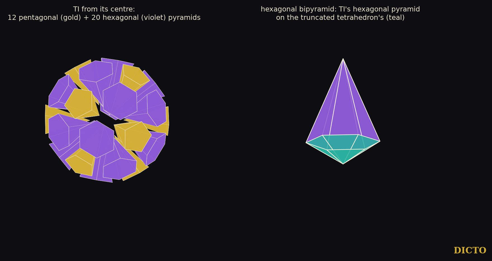
Turn every pyramid outwards and the solid becomes a star. The tips of the star mark the faces of a larger one, and the space between them fills with small tetrahedra of only three kinds.
Let cf be the centre of face f of TI (it is the foot of the perpendicular from the centre, because the faces are regular). For s > 1 the TI Star TI(s) (the Double TI Star for s = 2, the Golden TI Star for s = φ; DICTO's names, after his Cleo star) is TI with a pyramid over every face whose tip is s·cf; its spikes are the inward pyramids scaled in height by s − 1, so TI(s) has volume s·TI. Let K(s) be the convex hull of the 32 tips (the Star Halo, DICTO's name, Section 6), and s·TI the truncated icosahedron scaled by s; its face centres are exactly the tips.
Theorem. For s = 2 and for s = φ: (a) TI ⊂ TI(s) ⊂ K(s) ⊂ s·TI, and K(s) is a pentakis dodecahedron: 32 corners (the tips), 60 congruent triangles, each over one corner of TI. (b) The layer K(s) minus TI(s) is filled exactly by 60 corner tetrahedra, each a corner v of TI with the three tips over the faces at v, and 90 edge tetrahedra, each an edge vw of TI with the two tips over the faces at vw (60 over pentagon–hexagon edges, 30 over hexagon–hexagon edges). (c) The layer s·TI minus K(s) is filled exactly by 60 corner tetrahedra (a corner of s·TI and the three face centres there) and 90 edge tetrahedra (an edge of s·TI and the two face centres beside it). (d) Scaling by s repeats the turn without end, so the four stations form a cycle: for s = 2 a doubling cycle, for s = φ a golden cycle.
| Station or piece | Count | Doubling, s = 2 | Golden, s = φ |
|---|---|---|---|
| TI | 1 | 1 | 1 |
| TI Star TI(s) | 1 | 2 | φ = 1.618034 |
| pentakis hull K(s) | 1 | 6.067694 | 3.212896 |
| s·TI (next turn) | 1 | 8 | φ³ = 4.236068 |
| layer 1: corner tetrahedron | 60 | 0.041839 | 0.014743 |
| layer 1: edge tetrahedron, pentagon–hexagon | 60 | 0.017132 | 0.007892 |
| layer 1: edge tetrahedron, hexagon–hexagon | 30 | 0.017647 | 0.007892 |
| layer 2: corner tetrahedron | 60 | 0.017451 | 0.009240 |
| layer 2: edge tetrahedron, pentagon–hexagon | 60 | 0.008725 | 0.004620 |
| layer 2: edge tetrahedron, hexagon–hexagon | 30 | 0.012058 | 0.006385 |
Table 2. Volumes as multiples of TI. One turn has 1 + 32 + 150 + 150 = 333 pieces (the core, the spikes and the two layers). In the frame of #54 (edge of TI 1/φ), the hull K(2) has volume 79.193496 and the layer-1 pentagon–hexagon tetrahedron 0.2236068, agreeing with 30 + 22√5 and √5/10 to nine digits; for s = φ both layer-1 edge tetrahedra have the same volume, and the layer-2 hexagon–hexagon tetrahedron 0.0833333, 1/12 to nine digits. These closed forms are recognised from the numbers, not proved.
Proof and checks. The tips are s times the face centres, so they are the face centres of s·TI, which gives (a) together with the computed hull: its 60 face planes are all at one distance, each through one pentagon tip and two hexagon tips over one corner of TI. Each corner tetrahedron of layer 1 has its base on a face of K(s) and its apex at the corner of TI below; each edge tetrahedron is bounded by the two spike faces over its edge and by two faces of the neighbouring corner tetrahedra; so the pieces close round every spike edge and every hull edge. The volumes of each layer add up to the layer to 10−12 for both s (corners exact in ℚ(√5); volumes in double precision), and all 333 pieces of a turn, the core and the spikes are pairwise free of overlap by the separating-axis test (faces and edge cross products of every pair of convex pieces whose bounding spheres meet). This is (b) and (c); (d) is the scaling. ∎
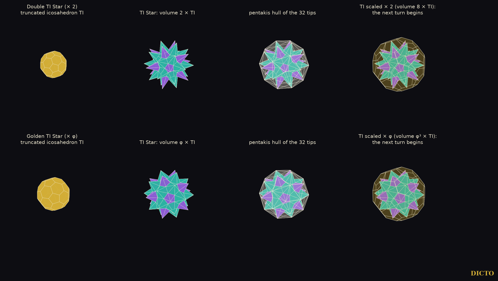
Inside each turn two pairs of Platonic shells appear, a dodecahedron and an icosahedron each time, and between them a new truncated icosahedron.
A turn has three sets of points, the 60 corners of TI, the 12 pentagon tips and the 20 hexagon tips, and two sets of planes, the 12 pentagon and the 20 hexagon planes of TI. The 12 pentagon tips are the corners of a regular icosahedron Ip, the 20 hexagon tips those of a regular dodecahedron Dh; the pentagon planes of TI bound a regular dodecahedron DTI, its hexagon planes a regular icosahedron ITI (the icosahedron of edge 3 of Proposition 1).
Proposition 2 (the solids of one turn). For s = 2 and s = φ:
(a) The convex solids of the turn nest as TI = DTI ∩ ITI ⊂ DTI, ITI ⊂ Ip ∩ Dh ⊂ Ip, Dh ⊂ K ⊂ s·TI = s·DTI ∩ s·ITI. The two solids of each pair cross each other; TI with its 12 pentagonal spikes lies in Ip, TI with its 20 hexagonal spikes in Dh, and the TI Star in K; all 32 tips lie outside DTI and ITI.
(b) The 12 pentagonal spikes pierce the faces of Dh and the 20 hexagonal spikes those of Ip, so K is at once Dh with 12 pentagonal pyramids and Ip with 20 triangular pyramids: a spiked dodecahedron and a spiked icosahedron.
(c) The core Ip ∩ Dh has 12 pentagons and 20 hexagons and all its corners on one sphere; its hexagons have alternating edges in the ratio √5, so it is the icosahedron truncated at 1/φ³ of each edge (the uniform TI is truncated at 1/3). It has the same shape in both cycles.
(d) DICTO's growth rule of The Golden Cycle (each corner of a solid gives a face plane of the next) carries K to s·TI, Ip to s·DTI and Dh to s·ITI: the outer pair of one turn gives the inner pair of the next.
(e) The list is complete in three senses: it holds every convex hull of a union of the three point sets and every intersection of these hulls and of the plane sets; of the 256 solids made of whole symmetric families of the turn's pieces (TI always included), only TI, K and s·TI are convex, and the hulls of all 256 are TI, Ip, Dh, K and s·TI; and one step of the growth rule from any solid of the list gives a solid of the list or of the next turn, except from TI, ITI and DTI.
| Solid | Double, s = 2 | Golden, s = φ |
|---|---|---|
| TI | 1 | 1 |
| TI with its 12 pentagonal spikes | 1.289707 | 1.179049 |
| TI with its 20 hexagonal spikes | 1.710293 | 1.438985 |
| TI Star | 2 | φ |
| inner icosahedron ITI (hexagon planes) | 1.065440 | 1.065440 |
| inner dodecahedron DTI (pentagon planes) | 1.265673 | 1.265673 |
| core Ip ∩ Dh | 4.103174 | 2.172666 |
| outer icosahedron Ip (pentagon tips) | 4.626695 | 2.449874 |
| outer dodecahedron Dh (hexagon tips) | 4.697099 | 2.487154 |
| K, the pentakis hull | 6.067694 | 3.212896 |
| s·TI | 8 | φ³ |
Table 3. The eleven solids of one turn, as multiples of TI. Inclusions were tested for every pair (all corners of one inside every face plane of the other, to 10−9); the edge ratio of the core is √5 to 10−8 in both cycles; the growth-rule identities hold to 10−9 in volume (study scripts/stations.py, inner_pair.py, families.py, rule_chains.py). The inner pair depends only on TI, so it is the same in both cycles; the outer solids scale with s.
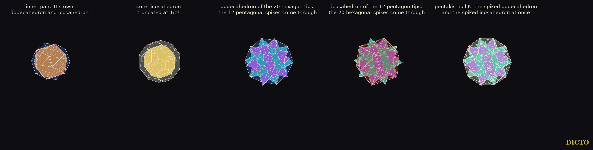
Where the list stops. Repeated, the growth rule leaves the cycle in two side chains that never land on a station: from TI it alternates TI-shaped solids and Catalan pentakis dodecahedra, growing by 1.172168 in length every two steps; from ITI and DTI it alternates icosahedra and dodecahedra, growing by 1.583592 every two steps. Neither factor is a power of s, so these chains wind through the turns without closing. The turn passes through both Platonic solids of five-fold symmetry twice; the dodecahedra are the shape of the Red Queen's core cell (#65), and whether they can be matched to her nine layers is left open.
Reflect every solid of the turn in a sphere, corners to faces and faces to corners: the middle of the turn comes back as itself.
Proposition 3 (the polar cycle). For s = 2 and s = φ, let ρ² = R(Ip)·r(Dh), the circumradius of the outer icosahedron times the inradius of the outer dodecahedron (ρ = 1.337 times the radius of TI for s = φ, 1.653 for s = 2). In the sphere of radius ρ the outer icosahedron and the outer dodecahedron are polar to each other, and so are the Star Halo K (Section 6) and the core: the four middle solids of the turn are their own polar set. The polars of TI, ITI and DTI, scaled by 1/s into the same turn, are a Catalan pentakis dodecahedron and a second icosahedron and dodecahedron, and the two cycles nest together in one space:
TI ⊂ ITI ⊂ I*, TI ⊂ DTI ⊂ D*, I*, D* ⊂ Catalan pentakis ⊂ core ⊂ Ip, Dh ⊂ K ⊂ s·TI,
where I* and D* are the polar icosahedron and dodecahedron (each pair crosses itself, and ITI, DTI cross the polar solid of the other kind where noted in the data): fourteen solids per turn, the four middle ones shared.
The equality ρ² = R(Dh)·r(Ip) holds as well, because the icosahedron and the dodecahedron have the same ratio of circumradius to inradius; that is why one sphere serves both. In the polar cycle TI's place is taken by the Catalan pentakis dodecahedron, the polar of the uniform truncated icosahedron. Exact order and every inclusion: study data merged-turn.json; the polar identities hold to 10−8 in volume.
Treat the hull of the star as a new core, spike it, and wrap it again. After four such steps the truncated icosahedron comes back.
DICTO named K, the hull of the 32 tips, the Star Halo. Its 60 triangles all lie at one distance from the centre, so when its own face pyramids are turned outwards (tips at s times the foot of each face's perpendicular) the tips land on a scaled copy of its polar, which is the core shape of Section 4. Repeating the step gives the star chain: each solid's spike tips make the next.
Proposition 4 (the star chain). Let S0 = TI and Sn+1 the hull of the spike tips of Sn, the tips at s times the feet of the perpendiculars to its faces. For s = φ and s = 2: S1 is the Star Halo, S2 has the shape of the core (the icosahedron truncated at 1/φ³, edges in the ratio √5), S3 is the Catalan pentakis dodecahedron, the polar of TI, and S4 has the shape of TI again, so the chain repeats with period four. Every step is one turn of a cycle of the kind of the Theorem: Sn ⊂ star ⊂ Sn+1 ⊂ s·Sn, the star of volume s times Sn, both layers filled exactly by pyramids over the corners of Sn and of s·Sn (tetrahedra over three-fold corners, pentagonal and hexagonal pyramids over five- and six-fold ones) and tetrahedra over the edges; 333 pieces per turn from a truncated icosahedron, 305 from a pentakis dodecahedron.
Relation to DICTO's rule T (#38). Taking the hull of the feet of the faces undoes DICTO's growth rule T(S) = {x : v·x ≤ v·v for every corner v of S} of Universal PiTet (#38): T(Sn+1) = s·Sn. Read the other way, the star chain is the T-orbit of TI: T carries TI to the Catalan pentakis dodecahedron (a polar step, since TI's corners lie on one sphere), that to the core shape, the core to the Star Halo (again a polar step) and the Star Halo to TI, larger by exactly (17745 − 7712√5)/361 = 1.386271 per turn. This is the structure of DICTO's PiTet Proposition, whose T-orbit of the icosidodecahedron, ID → RT → GTI → FPD → ID, grows by 10/φ⁴ per turn: TI has a PiTet cycle of its own.
| Step | Solid | Corners · faces | Edge ratio | Hull / Sn, s = φ | Hull / Sn, s = 2 |
|---|---|---|---|---|---|
| S0 | TI | 60 · 12 pentagons + 20 hexagons | 1 | 3.212896 | 6.067694 |
| S1 | Star Halo | 32 · 60 triangles | 1.098186 | 3.376409 | 6.376497 |
| S2 | core shape | 60 · 12 pentagons + 20 hexagons | √5 | 3.226814 | 6.093979 |
| S3 | Catalan pentakis dodecahedron | 32 · 60 triangles | 1.127322 | 3.452883 | 6.520921 |
| S4 | TI again | 60 · 12 pentagons + 20 hexagons | 1 | 3.212896 | 6.067694 |
Table 4. The star chain. Edge ratio: longest over shortest edge. Volumes of each step's hull over the solid it grows from; the star is always s times the solid. Shapes compared up to scale by corner radii and edge lengths; fills exact to 10−9 in volume at every step; no overlapping pair among the 333 or 305 pieces of steps 0 to 3 (separating-axis test). After four steps the radius has grown by 4.944274 (s = φ) and 11.541757 (s = 2), that is s4·c with c = (17745 + 7712√5)/48505 = 0.7213598 exactly; c is not a power of φ, so the chain returns to the shape of TI but not to a golden or doubled copy of it (study scripts/halo_cycle.py, star_chain.py; data/halo-cycle-*.json, star-chain-*.json).
The scaling numbers. Because every tip is the foot of a perpendicular from the centre to a plane through points of ℚ(√5)3, the whole chain stays in ℚ(√5) and its ratios are exact. With the tips at the feet themselves (s = 1; any s multiplies step n by sn), the squared outer radius changes at the four steps by (445 + 16√5)/545, (37 + 16√5)/89, (645 + 226√5)/1335 and (51 + 18√5)/109, and then by the same four numbers again, step after step (checked exactly to eight steps). Over one period the radius changes by c = (17745 + 7712√5)/48505, with 48505 = 5·89·109; the squared constant is (7712 + 3549√5)²/(5·89²·109²); its inverse, the gain of T over one turn, is (17745 − 7712√5)/361, with 361 = 19². The primes 89 and 109 alternate in the denominators; 109 already appears in TI, whose side triangles have apex angle cos (80 + 9√5)/109 (Table 1 study data). Why 89 appears is left open (study scripts/chain_exact.py, data/chain-exact.json).
Kepler's spikes. A spike rule with no free number is Kepler's: the tip over a face is where the planes of its neighbours first meet its axis. For TI this puts the pentagon tips at the corners of its own icosahedron ITI and the hexagon tips at those of its own dodecahedron DTI, and the hull of the 32 tips is the Catalan pentakis dodecahedron, the polar of TI and its first step under T. That layer fills exactly: TI, its 32 Kepler spikes, 60 corner tetrahedra and 90 edge tetrahedra make up its polar, with no overlap. The next Kepler step does not fill (on the pentakis the spikes stand outside their own hull); the hulls alone return to the shape of TI after two steps, larger by (105 − 18√5)/55 = 1.177287, so Kepler's rule gives a chain of hulls but no cycle of pieces. If instead each new solid is the hull of the whole star, its corners and its Kepler tips together (DICTO's proposal), every corner and every tip stays on the hull from the second step on: the solid gains a low pyramid on each triangle, the triangles triple (60, 180, 540, 1620) at an unchanged radius, and the gap between star and hull falls from 28 to 4.8, 1.1 and 0.16 per cent of the solid's volume, a refinement towards a rounded limit rather than a cycle (four steps checked; beyond them the floating-point tests are not reliable; study scripts/kepler_full_hull.py). No natural spike rule tried makes the four-step factors exactly 5 or 12; 4.944 and 11.542 remain near values (study scripts/kepler_chain.py, kepler_cycle.py).
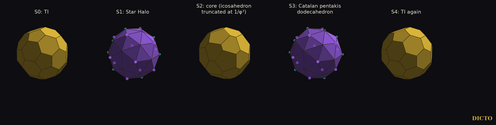
The core's own cycle. DICTO proposed giving the core the same treatment as TI: its own pentagonal and hexagonal pyramids from the centre, turned outwards as spikes, and the turn that follows. The core has the faces of TI, 12 pentagons and 20 hexagons, with its planes facing the same directions, so the construction applies unchanged.
Proposition 5 (the core's own cycle). Let C be the core Ip ∩ Dh of a turn of TI, and give C its own spikes, the tips at s times the feet of the perpendiculars to its faces, for s = φ and s = 2. Then:
(a) the core of C's turn, the intersection of the icosahedron of its 12 pentagon tips and the dodecahedron of its 20 hexagon tips, is a uniform truncated icosahedron, s²(5 + 2√5)/15 times the size of TI in length (5/6 + 11√5/30 = 1.653225 for s = φ, 4/3 + 8√5/15 = 2.525903 for s = 2): taken core to core, TI and C alternate, a cycle of period two;
(b) the reason is a swap of the two plane families. Let q be the square of the ratio of the pentagon distance to the hexagon distance from the centre. Then q(TI) = 13/3 − 22√5/15 = 1.026531², q(C) = (195 + 66√5)/361 = 0.974154², and q(TI)·q(C) = 1 exactly: each turn puts the new hexagon planes where the pentagon tips were and the new pentagon planes where the hexagon tips were, so the ratio is inverted and two turns restore it; (5 + 2√5)/15 is the square of the ratio of inradius to circumradius of the icosahedron and of the dodecahedron;
(c) the hull of C's 32 tips is the Catalan pentakis dodecahedron, the polar of TI, just as the hull of TI's tips, the Star Halo, is the polar of C; the two halos are partners as the two cores are;
(d) C's star has s times its volume, and the layer between the star and the hull of its tips fills exactly with 150 pieces of three kinds (a piece over each of the 60 corners to the tips of its three faces, a tetrahedron over each of the 90 edges), with no overlap.
So the cores of the two kinds of turn close in two steps, while the star chain of hulls (Proposition 4) closes in four: TI and its 1/φ³ core are two faces of one cycle. Parts (a)–(c) were checked exactly in ℚ(√5) for both s (study 2026-10-30-core-cycle, scripts/core_cycle_exact.py, with the exact arithmetic of the DICTO Solids data set); part (d) to 10−9 in volume and by the separating-axis test (scripts/core_cycle.py; data/core-cycle-phi.json, core-cycle-2.json).
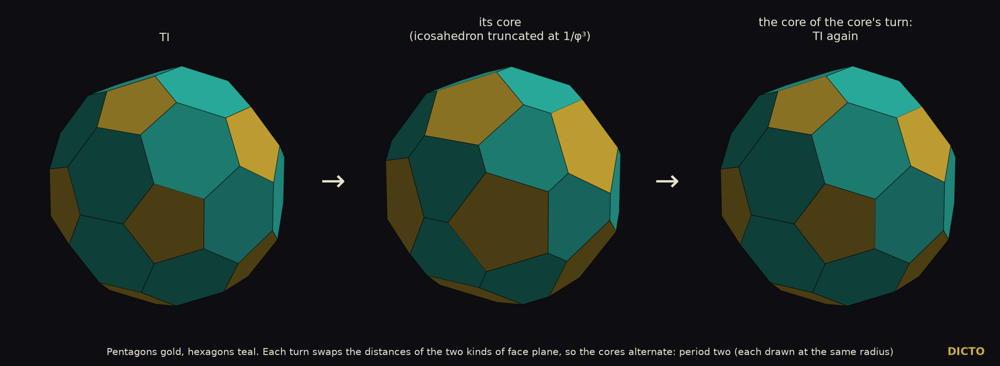
Mirroring a face pyramid in its face puts the tip at twice the face centre: that is the doubling cycle, and the TI Star is then exactly twice TI, as DICTO's Cleo star, the icosahedron with its twenty Cleo-Icos turned outwards, is twice the icosahedron (#35, #54). The golden ratio enters when the spikes are 1/φ of the pyramids' height. The two cycles behave differently from the Cleo star in one respect: the Cleo star's twenty tips are the corners of a dodecahedron, D′, which is how it joins DICTO's twelve-station cycle; the 32 tips of the TI Star lie on two spheres (the pentagon tips 1.0265 times further out than the hexagon tips, the inverse of the Catalan pentakis dodecahedron's proportion), and they touch no station of the twelve-station cycle at any scale φk, k = −2, …, 4 (study data contacts.json). The TI Star therefore starts a cycle of its own, beside the golden cycle rather than on it.
DICTO's idea holds both ways. The core of TI fills exactly with pentagonal and hexagonal pyramids, and the hexagonal ones carry the Cleo-Icos's angle. Turned outwards they make a spiked core from which two new cycles grow, a doubling one and a golden one, each repeating without end with one core, 32 spikes and 300 tetrahedra of six kinds per turn. Inside every turn the two Platonic solids of five-fold symmetry appear twice, as an inner and an outer pair, with a new core between them, the icosahedron truncated at 1/φ³. The middle of the turn is its own polar, and spiking each hull in turn closes into a star chain of four shapes: the truncated icosahedron, the Star Halo, the core and the Catalan pentakis dodecahedron, the orbit of TI under DICTO's own growth rule of #38. Given its own pyramids and spikes, the core turns back into the truncated icosahedron, so the two alternate as the cores of a cycle of period two.
From paper #79 (version 3), DICTO DOI 10.5281/zenodo.23822905
Polar spikes always fill: the star core treatment of every new convex shape
Cut a solid from its centre into pyramids, one on every face, and turn them outwards. The solid becomes a star. Wrap the star in the tightest skin and a new, larger solid appears: the star's halo.
The truncated icosahedron (TI) was the first solid to get this treatment in full (#78): its 32 face pyramids turned outwards make the TI Star, the hull of their tips is the Star Halo, and the space between them fills with tetrahedra of three kinds. DICTO's Cleo star (#35 (Part I, Chapter 9)), the icosahedron with its twenty Cleo-Icos turned out, came before it. Taking the hull of the tips undoes DICTO's growth rule T of Universal PiTet (#38 (Part I, Chapter 10)), T(S) = {x : v·x ≤ v·v for every corner v of S}, so every star step is a step of T read backwards (#78, Section 6).
DICTO proposed the same treatment for all his new shapes: "all new shapes given the star core treatment". This chapter reports it for the 54 shapes of the data set DICTO Solids: Exact Geometry (v6) that can be cut from their centre into face pyramids. It gives one card per shape (Section 8), and one theorem that explains which rule for the spikes always works (Section 3). Paper B of this series (in preparation) follows the cores of the turns, and #80 the exact growth of the chains.
Let S be a solid with its centre O inside every face's pyramid, so that S is the union of the pyramids from O over its faces. The treatment has six steps:
Every shape falls into one of four groups under the centre rule: A, the star fills its halo and the core comes back to the shape; B, the star fills its halo, the core does not come back to the shape itself; C, the star lies inside its halo but the corner and edge pieces do not fill the layer; D, the star sticks out of its halo.
Put every spike's tip not at a multiple of the face centre but at the face's partner point on the far side of a large sphere. Then the gaps between the spikes always fill, for every convex solid, with only two kinds of piece.
For a face plane n·x = c (c > 0) and a radius ρ, the pole of the plane in the sphere of radius ρ about O is p = ρ²n/c (for a unit normal n, the point on the face's axis at distance ρ²/c from O). Taking poles of all face planes is polar reciprocation, and the hull of the poles is the polar solid S* = {x : v·x ≤ ρ² for every corner v}.
Theorem (polar-spike fill). Let S be a convex solid with O in its interior, R its circumradius and ρ > R. Give every face f the spike with tip pf, the pole of its plane. Then:
(a) the halo, the hull of the tips, is the polar solid S*; its facet over each corner v lies in the plane v·x = ρ² and has as corners the tips of the faces round v;
(b) the layer between the star and the halo is tiled exactly, with no gaps and no overlaps, by one corner pyramid over each corner v (apex v, base the facet of S* over v) and one edge tetrahedron over each edge ab (corners a, b and the tips of the two faces at ab).
So the pieces number V + E (corners plus edges), and the halo is the star plus V + E pieces.
Proof. (a) is the classical description of the polar: S* is bounded by the planes v·x = ρ², one per corner v of S, and its corners are the poles of the face planes of S; the corners on the facet of v are the poles of the faces through v. (b) Every piece has positive volume. A spike's tip lies beyond its face because its distance ρ²/c from O exceeds c (c ≤ R < ρ). A corner pyramid's apex v lies on the inner side of its base plane because v·v ≤ R² < ρ². For an edge tetrahedron, project along the edge ab: the line of ab becomes a point at distance d from O, the two face planes become lines through it, and the two tips the poles of those lines; a two-line calculation shows the tetrahedron's orientation is the sign of ρ² − d², and d ≤ R < ρ because the edge's nearest point to O is no farther than its ends. The pieces fit face to face. Each spike side (a, b, pf) is shared with the edge tetrahedron of ab; each triangle (v, pf, pg), for faces f and g meeting at the edge from v, is shared by the corner pyramid of v and the edge tetrahedron of that edge; the faces left over are the spike sides' partners and the facets of S*. So the pieces, all of positive orientation, form a complex whose boundary is the boundary of S* together with the star's surface, and a complex of positively oriented pieces with that boundary covers each point between star and halo exactly once. ∎
The join as the thin limit. If S has a midsphere (every edge touching one sphere of radius ρm), then at ρ = ρm each edge has d = ρ, so every edge tetrahedron is flat: the edge of S and its dual edge cross, and the halo's faces become the rhombi of the join, the hull of S and its polar (Conway's jS). The theorem is the thick version of the join, valid for every convex solid and every ρ > R. For ρ between the midsphere and R some pieces would turn inside out, which is why the bound ρ > R is needed.
Checks. The fill was computed for all 48 convex shapes at ρ² = φR² and 2R² (float64, overlaps by the separating-axis test): every layer adds up to the halo minus the star to within 3 × 10−15 of its volume and no two pieces overlap; the layer pieces number from 10 (the Dodeca-13 Needle: 4 corners, 6 edges) to 690 (DPHP: 270 corners, 420 edges). For the ten solids of #80 (GTI, FPD, Palintriacontahedron, Icosaxes, Unborn Axes, Metaxyhexecontahedron, Tweedledum, Samson, David, Delilah) every piece was also checked exactly, in each solid's own number field: nonzero volume, one orientation per kind, and the exact sum equal to the halo's volume.
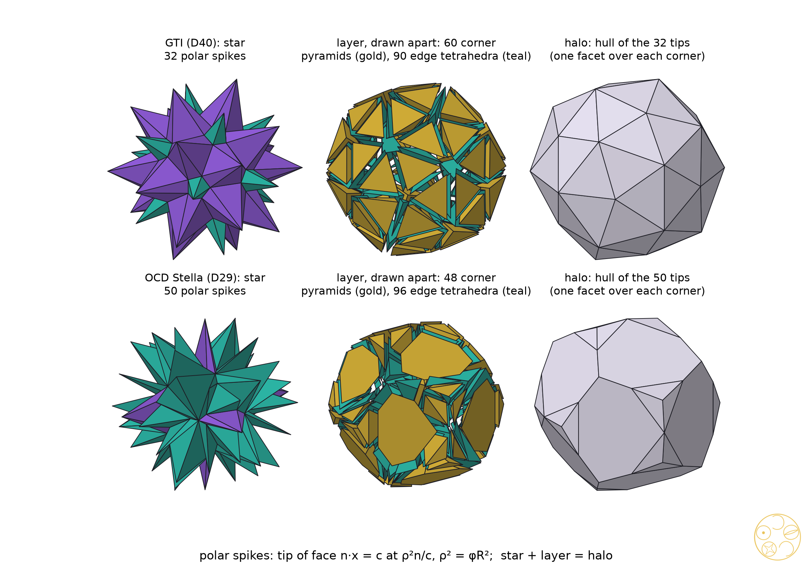
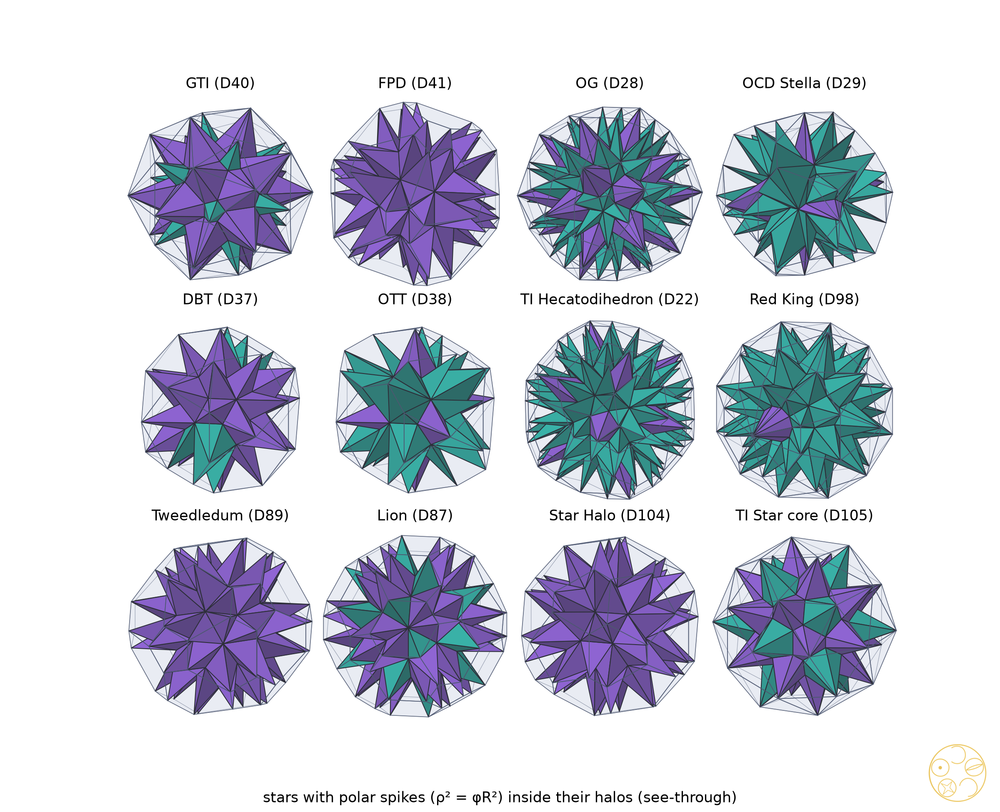
With the tips at a fixed multiple of the face centres, the trick of the TI Star works for fewer than half of the shapes. The polar rule mends all the rest.
Table 1 sorts the 54 shapes by what the centre rule gives at t = φ (t = 2 gives the same groups). Only 22 of the 48 convex shapes behave like TI. For the 26 others the tips at a fixed multiple of the face centres are wrong for the shape: where a solid's faces lie at very different distances from the centre, the near faces' tips fall short and the far faces' tips overshoot, so the star either sticks out of the hull of its own tips (group D) or leaves gaps round its high corners that the corner and edge pieces cannot reach (group C). The polar rule of the theorem has no such failure: with it every one of the 48 convex shapes fills, at both ρ² = φR² and ρ² = 2R², whichever group the centre rule put it in. For the faces that all lie at one distance from the centre (TI and the face-transitive shapes) the two rules give the same tips, up to scale.
| Group | Centre rule (t = φ) | Convex | Non-convex | Convex shapes |
|---|---|---|---|---|
| A | star fills, core comes back to the shape | 2 | 0 | GTI (golden truncated icosahedron), TI Star core |
| B | star fills, core does not come back to the shape | 20 | 0 | Truncated-Icosahedral Hecatodihedron, Ogdoecontahedron (OG), Metaxyhexecontahedron, Palintriacontahedron, FPD (flat pentakis dodecahedron), KRE, PHE, TPP, DPHP, TPH, TQH, TQP, TQHD, Lion, Jabberwock, Tweedledum, Tweedledee, Jubjub, Red King, Star Halo |
| C | star inside halo, layer not filled by corner and edge pieces | 12 | 5 | OCD Stella, Belted Triacontahedron (DBT), OTT (Octahedrally Truncated Triacontahedron), Mad Hatter, March Hare, Alice, White Rabbit, Haigha, Hatta, Walrus, Red Knight, White Knight |
| D | star sticks out of its halo | 14 | 1 | skewed rhombic dodecahedron, skewed elongated dodecahedron ED F16, skewed elongated dodecahedron ED F18, Dodeca-13 Wedge, Dodeca-13 Needle, Samson, Sonsam, Lahdeli, Ian Dury, Blockhead, Chucky, Fang, Triskelion Tetrahedron, Ganesha |
Table 1. The 54 shapes of DICTO Solids v6 cut from their centre into face pyramids, by group under the centre rule. The non-convex six (the DICTO Jewel, Lotus Jewel Axes, Dodecaxes, Keyaxes, Kagemusha and the Golden TI Star) are left to a later paper: a pole needs a face plane that misses the centre, which holds, but the layer pieces can then cut into the solid.
DICTO proposed keeping the centre-rule tips and filling the gap round each high corner with pyramids taken in order round the corner, their bases sloping to meet the tips.
For the twelve shapes with high-degree corners that the centre rule leaves unfilled (group C) and that DICTO named, we tested his sloping bases at t = φ and t = 2: the centre-rule tips are kept, and round each corner a ring of pyramids from the corner is laid in order, each with a triangular base on three tips, so that neighbouring pyramids meet along the lines between tips; edge tetrahedra close the gaps over the edges. No two pieces overlap in any of the 24 runs. For the OCD Stella, the Belted Triacontahedron and the OTT the pieces fill the convex hull of the tips exactly. For the nine Queens' slices of #76 they close up into a solid of their own, slightly inside the hull (0.2 to 4 per cent less in volume): a new outer solid for each slice, its faces the sloping bases.
| D | Shape | Corner pyramids | Edge tetrahedra | Star + pieces / solid | Hull of tips / solid | Result |
|---|---|---|---|---|---|---|
| D29 | OCD Stella | 96 | 96 | 3.1922 | 3.1922 | fills the halo |
| D37 | Belted Triacontahedron (DBT) | 60 | 60 | 2.9682 | 2.9682 | fills the halo |
| D38 | OTT (Octahedrally Truncated Triacontahedron) | 72 | 60 | 3.0877 | 3.0877 | fills the halo |
| D91 | Mad Hatter | 432 | 360 | 4.0883 | 4.0959 | own skin, inside the halo |
| D92 | March Hare | 432 | 360 | 4.0929 | 4.1065 | own skin, inside the halo |
| D94 | Alice | 432 | 360 | 4.0807 | 4.0835 | own skin, inside the halo |
| D95 | White Rabbit | 432 | 360 | 4.1028 | 4.1154 | own skin, inside the halo |
| D96 | Haigha | 114 | 171 | 3.5644 | 3.6041 | own skin, inside the halo |
| D97 | Hatta | 114 | 171 | 3.5346 | 3.6215 | own skin, inside the halo |
| D99 | Walrus | 120 | 180 | 3.5368 | 3.6992 | own skin, inside the halo |
| D100 | Red Knight | 120 | 180 | 3.5547 | 3.6727 | own skin, inside the halo |
| D101 | White Knight | 120 | 180 | 3.5838 | 3.6794 | own skin, inside the halo |
Table 2. DICTO's sloping bases at t = φ (t = 2 gives the same results, with other volumes). Volumes as multiples of the solid's; float64, overlaps by the separating-axis test.
Take the hull of each family's tips and keep only what lies inside all of them: that is the core of the turn. Turn after turn, the cores of most shapes settle into a pair that swaps back and forth.
The core of a turn (#78, Proposition 5) was followed exactly, turn after turn, for all 48 convex shapes (with the tips at the feet of the face perpendiculars; a factor t only scales the core). Every one of the 29 shapes whose cores keep forming settles into a cycle of period two: 2 at once (the GTI and the TI Star core, whose cores bring back the shape itself), 22 after one turn and 5 after two. The other 19 reach a turn where no family of tips spans a solid (every family has fewer than four tips or lies in one plane; for Fang the centre is not strictly inside one family's hull): the low-symmetry shapes at the first turn, seven Queens' slices at the second and Tweedledee at the third. The two-turn scale in radius is t² cos²θ, with θ the angle between the two kinds of symmetry axis carrying the cores' faces: t²(5 + 2√5)/15 for the icosahedral shapes, t²/3 for the octahedral (OCD Stella, OTT, Lahdeli) and t²/9 for the tetrahedral (Samson, the Triskelion Tetrahedron, Alice, the White Rabbit). The Belted Triacontahedron alone has another value, because only one family of its cores is solid at each turn. Paper B proves the period two for cores with two families on two kinds of axis and studies the exceptions.
An earlier float survey reported a returning core only for the GTI and the TI Star core: it asked whether the core of the core is the shape itself, which is the case of a cycle entered at once. The exact run (study 2b) confirms both and finds the cycles entered later.
DICTO proposed taking the star itself as the next solid and spiking its triangles in turn. Done naively, the new spikes clash in the valleys; with DICTO's rule of shorter spikes in the valleys, the symmetric shapes stop growing and become finished stars.
Taking the star itself as the next solid, its triangles are spiked in turn. With the tips over the triangles' centres (the centre rule), or over the nearest corner of the star below (a local rule), the new spikes of neighbouring triangles cross in the valleys between the old spikes at the second step, for every shape tested. DICTO's valley rule shortens each spike just enough to clear its neighbours: the ridges keep full spikes and the valleys flatten. With it all 100 runs (50 shapes, t = φ and t = 2, at most 200 faces to start and 2,500 triangles in all) end with no clash, and all but one reach the third step (DPHP at t = φ reaches the cap after two).
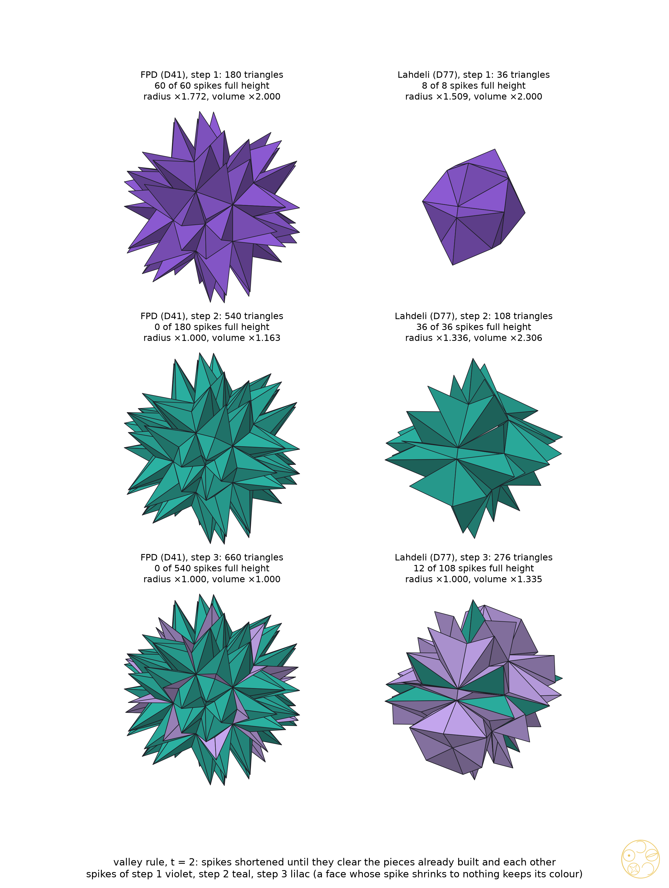
The symmetric shapes freeze. At the third step they add less than 0.1 per cent of volume: they are finished stars. At t = φ, 16 shapes freeze (OCD Stella, Palintriacontahedron, Belted Triacontahedron (DBT), OTT (Octahedrally Truncated Triacontahedron), FPD (flat pentakis dodecahedron), PHE, TPP, TPH, TQH, TQHD, Lion, Jabberwock, Tweedledum, Red Knight, Golden TI Star, Star Halo); at t = 2, 27. The eccentric pieces keep growing, in volume (their radius levels off by the third step). Over steps two and three at t = 2 the largest growth in volume is Lahdeli ×3.08; Chucky ×2.69; Triskelion Tetrahedron ×2.67; Dodeca-13 Wedge ×2.54; Samson ×2.47; Jewel (EKP windows; first called Dragon Jewel) ×2.46; skewed elongated dodecahedron ED F16 ×2.41. These are the pieces DICTO built as parts rather than as whole symmetric solids, and they are the subject of a later paper of this series.
One line per convex shape. Halo: the volume of the polar-spike halo at ρ² = φR² over the shape's. Pieces: corner pyramids plus edge tetrahedra of the polar fill (V + E). Core: the exact core cycle (paper B). T-chain: the star chain read as DICTO's rule T (#80). Valley: growth over steps two and three under DICTO's valley rule, or 'freezes'.
| D | Shape | Sym. | V | F | Group | Halo | Pieces | Core | T-chain | Valley φ | Valley ×2 |
|---|---|---|---|---|---|---|---|---|---|---|---|
| D1 | skewed rhombic dodecahedron | C2h | 14 | 12 | D | 40.997 | 38 | no core at turn 1 | open (8 steps) | ×1.21 | ×1.94 |
| D2 | skewed elongated dodecahedron ED F16 | C2h | 18 | 12 | D | 93.397 | 46 | no core at turn 1 | – | ×1.13 | ×2.41 |
| D3 | skewed elongated dodecahedron ED F18 | C2h | 18 | 12 | D | 47.275 | 46 | no core at turn 1 | – | ×1.18 | ×1.91 |
| D6 | Dodeca-13 Wedge | C2v | 8 | 6 | D | 892.626 | 20 | no core at turn 1 | no centre | ×1.73 | ×2.54 |
| D7 | Dodeca-13 Needle | C3v | 4 | 4 | D | 296388.001 | 10 | no core at turn 1 | no centre | ×1.51 | ×2.17 |
| D22 | Truncated-Icosahedral Hecatodihedron | Ih | 80 | 102 | B | 5.806 | 260 | period 2 from turn 1 | – | ×1.04 | freezes |
| D28 | Ogdoecontahedron (OG) | Ih | 102 | 80 | B | 5.980 | 282 | period 2 from turn 1 | open (8 steps) | ×1.03 | freezes |
| D29 | OCD Stella | Th | 48 | 50 | C | 8.649 | 144 | period 2 from turn 1 | open (8 steps) | freezes | freezes |
| D30 | Metaxyhexecontahedron | Ih | 32 | 60 | B | 6.769 | 122 | period 2 from turn 1 | period 4 | ×1.29 | freezes |
| D31 | Palintriacontahedron | Ih | 32 | 60 | B | 6.572 | 122 | period 2 from turn 1 | period 4 | freezes | freezes |
| D37 | Belted Triacontahedron (DBT) | D3d | 30 | 32 | C | 7.870 | 90 | period 2 from turn 2 | open (8 steps) | freezes | freezes |
| D38 | OTT (Octahedrally Truncated Triacontahedron) | Th | 24 | 38 | C | 8.299 | 84 | period 2 from turn 1 | open (8 steps) | freezes | freezes |
| D40 | GTI (golden truncated icosahedron) | Ih | 60 | 32 | A | 5.635 | 150 | period 2 at once | period 4 | ×1.61 | freezes |
| D41 | FPD (flat pentakis dodecahedron) | Ih | 32 | 60 | B | 6.572 | 122 | period 2 from turn 1 | period 4 | freezes | freezes |
| D45 | KRE | Ih | 92 | 90 | B | 5.582 | 272 | period 2 from turn 2 | – | ×1.04 | freezes |
| D46 | PHE | Ih | 180 | 92 | B | 4.982 | 450 | period 2 from turn 1 | – | freezes | ×1.08 |
| D47 | TPP | Ih | 212 | 180 | B | 5.034 | 602 | period 2 from turn 2 | – | freezes | freezes |
| D48 | DPHP | Ih | 270 | 152 | B | 4.594 | 690 | period 2 from turn 1 | – | ×1.10 | freezes |
| D49 | TPH | Ih | 80 | 132 | B | 5.033 | 290 | period 2 from turn 1 | open (8 steps) | freezes | freezes |
| D50 | TQH | Ih | 132 | 140 | B | 5.045 | 402 | period 2 from turn 1 | open (8 steps) | freezes | freezes |
| D51 | TQP | Ih | 140 | 162 | B | 5.762 | 440 | period 2 from turn 1 | open (8 steps) | ×1.04 | freezes |
| D52 | TQHD | Ih | 162 | 200 | B | 4.807 | 522 | period 2 from turn 1 | open (8 steps) | freezes | freezes |
| D71 | Samson | Td | 16 | 10 | D | 44.659 | 40 | period 2 from turn 1 | period 4 | ×1.19 | ×2.47 |
| D76 | Sonsam | C3v | 19 | 13 | D | 50.231 | 49 | no core at turn 1 | no centre | ×1.12 | ×2.21 |
| D77 | Lahdeli | D3d | 12 | 8 | D | 21.660 | 30 | period 2 from turn 2 | open (8 steps) | ×1.22 | ×3.08 |
| D78 | Ian Dury | C3v | 16 | 13 | D | 26.982 | 43 | no core at turn 1 | no centre | ×1.23 | ×2.10 |
| D79 | Blockhead | C3v | 10 | 10 | D | 20.254 | 28 | no core at turn 1 | no centre | ×1.36 | ×2.33 |
| D80 | Chucky | C3v | 19 | 13 | D | 23.692 | 49 | no core at turn 1 | no centre | ×1.59 | ×2.69 |
| D81 | Fang | C3v | 7 | 7 | D | 171.421 | 19 | no core at turn 1 | no centre | ×1.56 | ×2.37 |
| D82 | Triskelion Tetrahedron | Td | 16 | 10 | D | 22.337 | 40 | period 2 from turn 1 | open (8 steps) | ×1.15 | ×2.67 |
| D84 | Ganesha | C3v | 30 | 17 | D | 31.860 | 75 | no core at turn 1 | no centre | ×1.21 | ×1.83 |
| D87 | Lion | Ih | 42 | 80 | B | 5.578 | 162 | period 2 from turn 2 | open (8 steps) | freezes | freezes |
| D88 | Jabberwock | Ih | 72 | 140 | B | 6.118 | 282 | period 2 from turn 1 | open (8 steps) | freezes | freezes |
| D89 | Tweedledum | Ih | 32 | 60 | B | 6.284 | 122 | period 2 from turn 1 | period 4 | freezes | freezes |
| D90 | Tweedledee | D5h | 32 | 60 | B | 7.926 | 122 | no core at turn 3 | no centre | ×1.42 | freezes |
| D91 | Mad Hatter | D3h | 144 | 218 | C | 5.366 | 504 | no core at turn 2 | no centre | – | – |
| D92 | March Hare | D3h | 144 | 218 | C | 5.522 | 504 | no core at turn 2 | no centre | – | – |
| D93 | Jubjub | D3h | 30 | 56 | B | 9.760 | 114 | no core at turn 2 | no centre | ×1.33 | freezes |
| D94 | Alice | Td | 144 | 218 | C | 5.260 | 504 | period 2 from turn 1 | open (8 steps) | – | – |
| D95 | White Rabbit | Td | 144 | 218 | C | 5.469 | 504 | period 2 from turn 1 | open (8 steps) | – | – |
| D96 | Haigha | D3h | 114 | 59 | C | 4.982 | 285 | no core at turn 2 | no centre | ×1.31 | ×1.18 |
| D97 | Hatta | D3h | 114 | 59 | C | 5.027 | 285 | no core at turn 2 | no centre | ×1.31 | ×1.20 |
| D98 | Red King | D10h | 80 | 52 | B | 5.106 | 210 | no core at turn 2 | open (8 steps) | ×1.35 | freezes |
| D99 | Walrus | D5h | 120 | 62 | C | 5.006 | 300 | no core at turn 2 | no centre | ×1.34 | ×1.20 |
| D100 | Red Knight | Ih | 120 | 62 | C | 4.909 | 300 | period 2 from turn 1 | open (8 steps) | freezes | freezes |
| D101 | White Knight | Ih | 120 | 62 | C | 4.818 | 300 | period 2 from turn 1 | open (8 steps) | ×1.30 | freezes |
| D104 | Star Halo | Ih | 32 | 60 | B | 6.175 | 122 | period 2 from turn 1 | – | freezes | freezes |
| D105 | TI Star core | Ih | 60 | 32 | A | 5.315 | 150 | period 2 at once | – | ×1.66 | freezes |
Table 3. The cards. Group: the centre rule's group of Table 1. V, F: corners and faces (pieces V + E = 2V + F − 2 by Euler). '–': not run (over 200 faces, or no data).
In the app. Polyhedraverse, Star step (polyhedraverse.dictospheres.com/?open=starstep:TRUNCATED_ICOSAHEDRON), gives any convex solid the treatment one tap at a time: the star, the halo with its layer of corner pyramids and edge tetrahedra, then the halo as the next solid.
DICTO's star core treatment reaches all 48 of his convex shapes once the spikes follow the polar rule. With the tips at a fixed multiple of the face centres, the rule of the TI Star, fewer than half of the shapes fill; with the tips at the poles of the face planes in any sphere larger than the shape, every one does, with exactly one pyramid per corner and one tetrahedron per edge, and the halo is the shape's polar. This is the thick form of Conway's join, and it gives this series its standard star. DICTO's sloping bases close every shape tested, and his valley rule lets a star be built upon without clashes: the symmetric shapes freeze into finished stars, the eccentric pieces grow on. The cards record each shape's group, halo, pieces, core cycle, chain and valley growth.
From paper #81 (version 1), DICTO DOI 10.5281/zenodo.23846772
When the cores of DICTO's star chains alternate
Turn a solid's face pyramids outwards and each kind of face sends its tips to a different shell. Wrap each shell's tips and keep what all the wrappings share. For the truncated icosahedron this inner solid swaps the depths of the pentagons and hexagons, and the next turn swaps them back.
The Star Cores papers follow DICTO's spiked solids. In #78 DICTO turned TI's 32 face pyramids outwards into the TI Star; the hull of the tips is the Star Halo, and the step is DICTO's growth rule T of Universal PiTet (#38 (Part I, Chapter 10)), T(S) = {x : v·x ≤ v·v for every corner v}, read backwards. #78 also took the core of each turn, one solid per kind of face plane intersected, and showed in its Proposition 5 that TI and its core alternate. #79 (paper A) gave every new shape of the data set the star core treatment and found that the cores of 29 of the 48 convex shapes settle into a cycle of period two. #80 (paper C) found the exact gains of the chains of T. This chapter, paper B, proves the period two of the cores, gives the exact scale, and says where the cycle stops.
The main statement proposed for this series reads: a solid whose faces lie in just two families of planes, on the five-fold and three-fold axes (or the four-fold and three-fold), has a star cycle in which the cores alternate with period two and the hulls with period four. Its core part is our main theorem. Its hull part is not proved here; Section 7 shows that the number of plane families alone does not decide it.
Let S be a convex solid with its centre O inside. Each face f lies in a plane nf·x = df, with nf a unit vector and df > 0 the distance from O. In a turn with spike factor t the face's pyramid from O is turned outwards with its tip at t·dfnf, t times the foot of the perpendicular from O (t = 2 mirrors the pyramid in its face, t = φ gives the golden spike).
Definition (#78). Group the faces of S into families, each family one kind of face plane. For each family whose tips span space (at least four tips, not in one plane), take the convex hull of its tips. The core Ct(S) is the intersection of these hulls. A family whose tips are fewer than four or lie in one plane is passed over. If no family is left, or the centre is not strictly inside every hull, S has no core.
Since every tip scales with t, Ct(S) = t·C1(S), and we work at t = 1 where convenient. In the proofs a family is the set of faces whose planes are square to one kind of symmetry axis at one distance. The studies group faces by their number of sides and their distance from O. On every solid that the theorem covers the two groupings agree, since the two kinds of face have different numbers of sides (Remark after the theorem).
For TI the two families are the 12 pentagons and the 20 hexagons. The pentagon tips are the corners of an icosahedron and the hexagon tips those of a dodecahedron, and the core is their common part. #78, Proposition 5, found that the core of the core's turn is TI again, larger by t²(5 + 2√5)/15, because each turn inverts the ratio of the pentagon and hexagon distances. The theorem below shows why this works, and for which solids.
A wrapping of tips that stand on the five-fold axes is an icosahedron, and its faces stand on the three-fold axes. So the tips of one kind of face become the planes of the other kind, a fixed fraction closer in. Two turns bring every plane back to its own axis.
Setting. Let P be a regular solid centred at O, U the set of unit vectors to its corners, and W the set of unit vectors to the corners of its dual, which are the unit normals of the faces of P. Let c be the largest value of u·w over u in U for any fixed w in W; it is the same for every w and also the largest value of u·w over w for any fixed u (checked exactly for all three pairs). So c = cos θ, with θ the angle from an axis of one kind to the nearest axis of the other kind, and c is the ratio of inradius to circumradius of P, and of its dual. For a, b > 0 put
K(a, b) = {x : u·x ≤ a for every u in U, and w·x ≤ b for every w in W}.
The three pairs are the icosahedron (U on the five-fold axes) with the dodecahedron (W on the three-fold axes); the octahedron (U on the four-fold axes) with the cube (W on the three-fold axes); and the tetrahedron with its point reflection (U and W = −U on the two kinds of three-fold axis of the tetrahedral group).
Lemma 1. For r > 0, the convex hull of the points r·u (u in U) is the solid {x : w·x ≤ rc for every w in W}. Likewise the hull of the points r·w (w in W) is {x : u·x ≤ rc for every u in U}.
Proof. The hull of the points r·u is r·P, which has circumradius r and its face normals in W. Each face of r·P contains a corner r·u, at distance r·(u·w) from O along w, and this is the largest such value over the corners, that is rc. The same holds for the dual with the roles of U and W exchanged, with the same c. ∎
Lemma 2 (the window). The planes u·x = a are faces of K(a, b) if and only if ac < b, and the planes w·x = b are faces if and only if bc < a. So both kinds of plane are faces exactly when c < b/a < 1/c.
Proof. If ac < b, the point a·u satisfies w·(a u) ≤ ac < b for every w and u′·(a u) < a for every other u′, so a neighbourhood of a·u in the plane u·x = a lies in K: the plane carries a face. If ac ≥ b, the solid {x : w·x ≤ b} is, by Lemma 1, the hull of the points (b/c)·u, so on it u·x ≤ b/c ≤ a, with equality at most at the single corner (b/c)·u: the plane carries no face. The same argument with U and W exchanged gives the second statement. ∎
Theorem (the core cycle). Let S = K(a, b) with c < b/a < 1/c, so that its faces lie in exactly two families, on the U axes at distance a and on the W axes at distance b. Then, for every spike factor t > 0:
(a) Ct(S) = K(tcb, tca): the core is the same kind of solid with the two distances swapped and multiplied by tc, and its distance ratio is inverted, from b/a to a/b, which lies in the same window;
(b) Ct(Ct(S)) = t²c²·S: two turns give S back, scaled by t²c², whatever the distances a and b;
(c) c² = (5 + 2√5)/15 = φ³/(3√5) ≈ 0.631476 for the icosahedron and dodecahedron (θ ≈ 37.3774°), c² = 1/3 for the octahedron and cube (θ ≈ 54.7356°), and c² = 1/9 for the tetrahedron (θ ≈ 70.5288°);
(d) for the icosahedral and octahedral pairs the cores have period exactly two unless a = b, when Ct(S) = tc·S; for the tetrahedral pair Ct(S) is tc·S turned a quarter turn about a two-fold axis, so the cores repeat one shape, alternating between two positions.
If instead only one kind of plane is a face (b/a outside the window), S is a regular solid, and the cores alternate between it and its dual with the same scale t²c² over two turns.
Proof. (a) The faces of S are the planes u·x = a and w·x = b, so the tips are the points ta·u and tb·w. By Lemma 1 the hull of the first set is {x : w·x ≤ tac} and the hull of the second is {x : u·x ≤ tbc}. Both contain O strictly, and their intersection is K(tcb, tca). Its ratio is (tca)/(tcb) = a/b, and c < b/a < 1/c is the same condition as c < a/b < 1/c, so both kinds of plane remain faces (Lemma 2). (b) Applying (a) twice gives K(t²c²a, t²c²b) = t²c²·K(a, b). (c) For the icosahedron with corners (0, ±1, ±φ) and cyclic, and the dodecahedron with corners (±1, ±1, ±1) and (0, ±φ, ±1/φ) and cyclic, the nearest pair is u = (0, 1, φ)/√(φ + 2) and w = (1, 1, 1)/√3, with u·w = (1 + φ)/√(3(φ + 2)) = φ²/√(3(φ + 2)). So c² = φ⁴/(3(φ + 2)), and since φ + 2 = √5·φ this is φ³/(3√5) = (5 + 2√5)/15. For the octahedron and cube, u = (1, 0, 0) and w = (1, 1, 1)/√3 give c² = 1/3. For the tetrahedron, u = (1, 1, 1)/√3 and w = (1, 1, −1)/√3 (a corner of the reflected tetrahedron) give c = 1/3. (d) The faces on U have 5 or 10 sides (icosahedral) or 4 or 8 (octahedral), and those on W have 3 or 6, so a similarity between two such solids must carry each family to the same family, and it fixes O, the common centre of symmetry. The ratio b/a is therefore an invariant of the shape, and Ct(S) is similar to S only if a/b = b/a, that is a = b. For the tetrahedral pair the quarter turn R about a coordinate axis carries U to W = −U and W to U, so R·K(a, b) = K(b, a) and Ct(S) = tc·R·S. For one family: if S = {u·x ≤ a}, its tips ta·u have the hull {w·x ≤ tac}, whose tips tac·tw have the hull {u·x ≤ t²c²a}. ∎
The two-turn scale is a property of the pair of regular solids alone: it does not depend on the distances a and b. #78's value t²(5 + 2√5)/15 for TI (1.653225 at t = φ, 2.525903 at t = 2) is the icosahedral case, and (5 + 2√5)/15 is the square of the inradius-to-circumradius ratio of the icosahedron and of the dodecahedron, as #78 noted. #78's check q(TI)·q(C) = 1, for q the squared ratio of the pentagon and hexagon distances, is part (a): (13/3 − 22√5/15)·(195 + 66√5)/361 = 1 exactly. TI's core ratio of hexagon to pentagon distance, 1/0.974154 = 1.026531, lies in the window (0.7947, 1.2584).
Remark (families). The proof groups faces by axis kind. In the icosahedral and octahedral cases the two kinds of face have different numbers of sides, so grouping by number of sides and distance, as the studies do, gives the same families. In the tetrahedral case both kinds of face can be triangles at the same distance: for a = b, K(a, a) is the regular octahedron, whose eight faces the studies would put in one family, giving a cube as the core. The theorem is stated with families by axis kind; no tetrahedral solid of the data set has a = b.
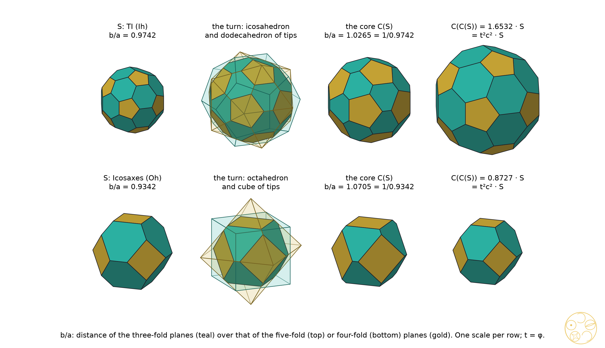
Corollary 2 (entering the cycle). Let S be a convex solid with the full icosahedral (or octahedral) symmetry, each family of faces one orbit of planes, every face plane square to a rotation axis of the group. Then Ct(S) is a solid K(a′, b′) of the icosahedral (octahedral) pair, or a regular solid of that pair, so the cores of S are in the cycle of the theorem from the first turn on.
Proof. The tips of a family on the five-fold axes span an icosahedron, whose faces lie on the three-fold axes; on the three-fold axes, a dodecahedron, with faces on the five-fold axes; on the two-fold axes, an icosidodecahedron, whose 12 pentagons lie on the five-fold axes and 20 triangles on the three-fold axes. In the octahedral group the tips on the four-, three- and two-fold axes span an octahedron, a cube and a cuboctahedron, whose faces lie on the three-fold, four-fold, and four- and three-fold axes. So every hull is cut out by planes u·x ≤ α and w·x ≤ β of the pair, and so is their intersection, the core. A family's hull contains O strictly because the orbit's directions are not all on one side of a plane. ∎
The same holds for the pyritohedral group, which contains the coordinate axes and the three-fold axes, and so the octahedron–cube pair: DICTO's OCD Stella and OTT reach the cycle this way.
| Pair of axes | Regular solids of the tips | Angle θ | c² = two-turn scale at t = 1 | t = φ | t = 2 | Squared radius over two turns (t = 1) |
|---|---|---|---|---|---|---|
| five-fold, three-fold | icosahedron, dodecahedron | 37.3774° | (5 + 2√5)/15 = φ³/(3√5) ≈ 0.631476 | 1.653225 | 2.525903 | 1/5 + 4√5/45 |
| four-fold, three-fold | octahedron, cube | 54.7356° | 1/3 | 0.872678 | 1.333333 | 1/9 |
| three-fold, other three-fold | tetrahedron, reflected tetrahedron | 70.5288° | 1/9 | 0.290893 | 0.444444 | 1/81 |
Table 1. The scale of two turns in length is t²c², exact. At t = φ the values are φ²c²: 5/6 + 11√5/30, (3 + √5)/6 and (3 + √5)/18. The last column, c⁴, is the form in which the studies record the gain (squared radius ratio at t = 1); it is matched exactly in Sections 5 and 6.
The scale is the inverse of the Platonic gain of #80: there DICTO's rule T carries a regular solid to its dual and back, larger by (R/r)² = 1/c² (9, 3 and 15 − 6√5), while the core moves every plane in by c per turn. One turn of T moves a plane out to the corner; one turn of the core moves it back in.
Of DICTO's 48 convex shapes, 29 settle into a pair of cores that swap back and forth. The theorem predicts the exact scale for all but one of them. The other 19 never form a core.
Study 2b followed the core turn exactly (in ℚ, ℚ(√5), ℚ(∛2) or the field of the shape) for the 48 convex shapes of DICTO Solids v6 cut from their centre into face pyramids, as in #79. A return was recorded when every corner of a later core is parallel to a corner of an earlier one with one exact squared ratio. Table 2 sorts the 29 shapes whose cores return.
| Cycle cores | Shapes (D-number) | Enter at turn 0 / 1 / 2 | Two-turn squared-radius gain, exact | Theorem |
|---|---|---|---|---|
| K(a, b) on the five- and three-fold axes: 12 pentagons + 20 hexagons, 20 triangles + 12 decagons, or 20 triangles + 12 pentagons | GTI (D40), TI Star core (D105); Truncated-Icosahedral Hecatodihedron (D22), OG (D28), Metaxyhexecontahedron (D30), Palintriacontahedron (D31), FPD (D41), PHE (D46), DPHP (D48), TPH (D49), TQH (D50), TQP (D51), TQHD (D52), Jabberwock (D88), Tweedledum (D89), Red Knight (D100), White Knight (D101), Star Halo (D104); KRE (D45), TPP (D47), Lion (D87) | 2 / 16 / 3 | 1/5 + 4√5/45 = c⁴ | yes |
| K(a, b) on the four- (two-) and three-fold axes: 6 squares + 8 hexagons | OCD Stella (D29), OTT (D38) | 0 / 2 / 0 | 1/9 = c⁴ | yes |
| regular octahedron ↔ cube (one family) | Lahdeli (D77) | 0 / 0 / 1 | 1/9 = c⁴ | yes, one family |
| K(a, b) on the two kinds of three-fold axis: 4 triangles + 4 hexagons | Samson (D71), Triskelion Tetrahedron (D82), Alice (D94), White Rabbit (D95) | 0 / 4 / 0 | 1/81 = c⁴ | yes |
| trigonal antiprism, one family of six side faces | Belted Triacontahedron (D37) | 0 / 0 / 1 | (207 − 85√5)/3362 | no |
Table 2. The 29 convex shapes whose cores return, all with period two: 2 at once, 22 after one turn, 5 after two. The four solids of study 2 outside the convex list behave the same way: Icosaxes and Unborn Axes (K(a, b), octahedral, at once, 1/9), Delilah (cube ↔ octahedron, at once, 1/9), and David (D2d, one family of four faces, at once, 1/100; outside the theorem). All gains from study2b.json, compared with c⁴ exactly (script paper_b_checks.py).
Why the cycle cores are of the theorem's kind. In the icosahedral group an orbit of 12 planes has a stabiliser of order 10, so its normals lie on the five-fold axes, and an orbit of 20 has normals on the three-fold axes; in the tetrahedral group an orbit of 4 planes lies on three-fold axes; in the pyritohedral and octahedral groups orbits of 6 and 8 lie on the coordinate and three-fold axes. So the face counts in Table 2 place every cycle core of the first four rows in K(a, b) of its pair, and the exact gains agree with c⁴ in all 28 cases. For the tetrahedral four the squared radius drops by exactly 1/9 at every turn from the first on, as part (d) predicts: one shape, alternating between two positions.
Lahdeli. Its cores are octahedra with D3d symmetry until, at the second turn, all eight faces lie at one distance. A D3d octahedron with corners (r cos 120°k, r sin 120°k, ±h) has its side faces at squared distance 9h²r²/(16h² + r²), which equals h², the distance of the two end faces, only for r = √2·h: the regular octahedron. From there Lahdeli's cores are the regular octahedron and cube (computed exactly with sympy; script paper_b_checks.py).
The Belted Triacontahedron, the one exception. From its second turn its cores are trigonal antiprisms whose two end triangles give only two tips; that family is passed over, and each core is the hull of the six side-face tips alone. The squared radius then falls by the same factor (17 − 5√5)/82 ≈ 0.070971 at every turn (exact, turns 2 to 4), so each core is the previous one turned and scaled: a cycle of period two as placed, with two-turn length scale (17 − 5√5)/82 and squared-radius gain (207 − 85√5)/3362. This is computed, not proved; the theorem does not apply, because the cores have one family that the definition can use, and its tips are not the corners of a regular solid.
Proposition 3 (no core). A solid has no core if each family of faces is one orbit of its symmetry group and (i) the group is Cnv (rotations about one axis and mirrors through it), or (ii) the group is C2h, or (iii) the solid is a right prism.
Proof. (i) Every element of Cnv keeps the height along the axis, so an orbit of tips lies in one plane square to the axis. (ii) The orbit of a point p under C2h is ±p, ±Rp, with R the half turn about the axis; these four points lie in the plane through the axis and p. (iii) The side faces of a right prism have normals square to the axis, so their tips lie in the mid-plane, and the two end faces give two tips. In each case no family has tips spanning space. ∎
| No core at | Shapes (D-number, symmetry) | Reason |
|---|---|---|
| turn 1 | skewed rhombic dodecahedron (D1), skewed elongated dodecahedra ED F16 (D2) and F18 (D3), all C2h | Proposition 3(ii): four families of 2 or 4 tips, each in one plane |
| turn 1 | Dodeca-13 Wedge (D6, C2v) | three families of 2 tips each |
| turn 1 | Dodeca-13 Needle (D7), Sonsam (D76), Ian Dury (D78), Blockhead (D79), Chucky (D80), Ganesha (D84), all C3v | Proposition 3(i): families of 1, 3 or 6 tips, each in one plane |
| turn 1 | Fang (D81, C3v) | its four triangles lie at one distance and form one family; their tips span a tetrahedron, but one of its face planes does not have the centre strictly inside |
| turn 2 | Mad Hatter (D91), March Hare (D92), Jubjub (D93), Haigha (D96), Hatta (D97), all D3h; Walrus (D99, D5h); Red King (D98, D10h) | the first core is a prism (hexagonal, triangular or decagonal); Proposition 3(iii) |
| turn 3 | Tweedledee (D90, D5h) | the second core is a pentagonal prism; Proposition 3(iii) |
Table 3. The 19 convex shapes without a core (11 at the first turn, 7 at the second, 1 at the third), with the family sizes recorded in study2b.log. The first cores of the turn-2 shapes have 6 squares and 2 hexagons, 3 squares and 2 triangles, or 10 squares and 2 decagons; Tweedledee's second core has 5 squares and 2 pentagons.
So the core cycle is a property of the shapes with a full polyhedral symmetry: every shape in Table 2 except the Belted Triacontahedron and Lahdeli has icosahedral, octahedral, pyritohedral or tetrahedral symmetry, and every shape in Table 3 has a symmetry group that fixes one axis (C2h, C2v, C3v, D3h, D5h, D10h). Among them are seven Queens' slices and several of DICTO's eccentric pieces, the stars that keep growing in #79.
Study 3 built exactly every convex solid whose face planes lie on two kinds of symmetry axis, icosahedral (5+3, 5+2, 3+2) or octahedral (4+3, 4+2, 3+2), with the first family at foot distance 1 along its axis vectors and the second at s, s swept over a grid of 16 values and then in steps of 1/80 for the 4+2 and 5+2 cases; three-family solids (5+3+2, 4+3+2) were added for contrast. Only solids on which every plane is a face were kept: 94 runs on 88 distinct solids (six were run in both passes; two runs stopped on errors of the half-space routine and are not counted).
| Axes | Solids | Cores period two | Cores enter at turn | Gain (t = 1) |
|---|---|---|---|---|
| Ih 5+3 | 6 | 6 | 0 | 1/5 + 4√5/45 |
| Ih 5+2 | 31 | 31 | 1 | 1/5 + 4√5/45 |
| Ih 3+2 | 2 | 2 | 1 | 1/5 + 4√5/45 |
| Oh 4+3 | 6 | 6 | 0 | 1/9 |
| Oh 4+2 | 39 | 39 | 1 | 1/9 |
| Oh 3+2 | 3 | 3 | 1 | 1/9 |
| Oh 4+3+2 | 1 | 1 | 1 | 1/9 |
Table 4. Study 3, distinct solids. Every core cycle has period two and the gain c⁴ of its group, exactly.
This is the theorem and Corollary 2 at work: the 5+3 and 4+3 solids are K(a, b) and cycle at once; every solid with a family on the two-fold axes has as its first core a K(a′, b′) and cycles from there.
The cores ignore depth: whatever the cut, two turns bring them back. DICTO's rule T, which builds the hulls, does not. Cut the edges of a cube a little and the chain closes; cut them a little more and it spreads; cut deeper still and it closes again.
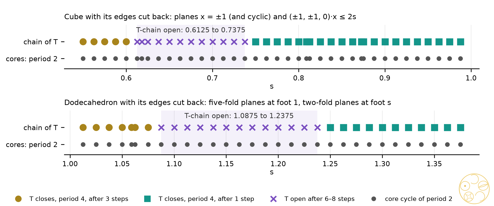
The same 88 solids were run under T (#38) for eight steps. The 5+3 and 4+3 solids, the two-family solids of the original main statement, all close with period four at once (12 of 12), and the 3+2 solids close too. But with one family on the two-fold axes the outcome depends on the depth s (Figure 3.2; #80, Section 6):
The exact edges of the open windows were not located. "Open" means no step similar to an earlier one within six to eight steps, with the number of corners rising to between 110 and 860.
Correction of the main statement. The proposed main statement said that two families of planes give cores of period two and hulls of period four. The core part is the theorem of Section 3, proved and confirmed on all 88 swept solids. The hull part does not follow from the number of families: for two families with one on the two-fold axes it fails at middle depths. For two families on the five- and three-fold (or four- and three-fold) axes every tested chain closed with period four, but this rests on 12 solids and is not proved here. The cores and the hulls of a turn are different objects: the core intersects one regular solid per family, which forgets everything but the two distances, while T builds a new face at every corner, and the corners of an edge-cut solid can sit off the symmetry axes.
The core of a turn takes the tips of each family of faces, and the tips on one kind of axis wrap into a regular solid whose faces lie on the other kind. So a solid cut by planes on the axes of a regular solid and of its dual has a core cut by the same two kinds of plane, with the two distances swapped and pulled in by the cosine of the angle between the axes. Two turns give the solid back, scaled by t²c²: t²(5 + 2√5)/15 in the icosahedral case, t²/3 in the octahedral and t²/9 in the tetrahedral, whatever the depths. This proves DICTO's proposal for the cores, accounts exactly for 28 of the 29 returning cores among his convex shapes and for every two-family solid swept, and shows why the 19 others have no core. The hulls are a different matter: depth, not the number of families, decides whether DICTO's growth rule closes.
In the app. Polyhedraverse, Star step (polyhedraverse.dictospheres.com/?open=starstep:TRUNCATED_ICOSAHEDRON), spikes the truncated icosahedron and wraps it, one tap per step.
From paper #80 (version 2), DICTO DOI 10.5281/zenodo.23822907
Exact growth of every closed chain of the rule T, for DICTO's solids and the classical ones
Draw a plane through every corner of a solid, square to the line from the centre, and keep what lies inside all the planes. A new solid appears, with a face for every corner of the old one. Do it again, and again: some solids come back to their own shape, only larger.
DICTO's rule T (#38) grows a solid by giving it a face at each corner. Read backwards it is the star step of #78: put a spike on each face with its tip at the foot of the face's perpendicular, scaled by a factor s, and wrap the tips; then T of the wrapped solid is s times the solid one started from (#78, Section 6). So every star chain is a chain of T, and a closed chain of T is a closed star chain.
The rule closes for the icosidodecahedron and DICTO's GTI with the gain 10/φ⁴ (#38) and for the truncated icosahedron with a gain whose norm carries the primes 89 and 109 (#78). This chapter finds the gains of all closed chains exactly, explains them where a proof is possible, and tests DICTO's proposal that they form a new series of ratios.
For a radius ρ, the polar of a solid X in the sphere of radius ρ about the centre O is Xρ = {x : y·x ≤ ρ² for every y in X}; for a convex solid only its corners matter. Polar reciprocation is classical: the polar of the polar is the solid itself, and Xa taken in a second sphere gives (Xa)b = (b²/a²)·X.
Lemma 1. (a) T(S) is the polar, in the unit sphere, of the solid whose corners are the inverted corners v/|v|² of S. (b) If all corners of S lie on one sphere of radius R, then T(S) is the polar SR of S in that sphere. (c) T(k·S) = k·T(S) for every k > 0.
Proof. v·x ≤ v·v is the same as (v/|v|²)·x ≤ 1, which gives (a); if |v| = R for every corner, it reads v·x ≤ R², which is (b); and (c) holds because kv·x ≤ k²v·v is v·(x/k) ≤ v·v. ∎
In the plane, T is the classical antipedal (negative pedal) polygon with pedal point O, and part (a) is the polygon form of the known statement that the negative pedal is the polar dual of its inverse (L. G. Gheorghe 2020, stated there as classical). B. M. Stewart proved in 1940 that n antipedal steps bring any n-gon back to a similar one. In space each step turns corners into faces, so the number of corners changes from step to step, and the chains below close in two or four steps whatever the number of corners, or not at all.
If a solid's corners sit on one sphere and so do the corners of its image, the rule is a mirror in a sphere, twice: two steps bring the solid back, larger by the square of the ratio of the two spheres.
Theorem. Let S be a convex solid with its centre inside, all its corners on a sphere of radius R, and let all the corners of T(S) lie on a sphere of radius R′. Then T(T(S)) = (R′/R)²·S: the chain closes in two steps (or one) with radius gain (R′/R)².
Corollary (the Platonic solids). For a Platonic solid with circumradius R and inradius r, T(S) is its dual, touching the sphere of radius R with its faces, and the chain closes in two steps with gain (R/r)² = tan²(π/p)·tan²(π/q) for the Schläfli symbol {p, q}: 9 for the tetrahedron, 3 for the cube and the octahedron, 15 − 6√5 for the dodecahedron and the icosahedron.
Proof. By Lemma 1(b), T(S) = SR, and since the corners of T(S) lie on the sphere of radius R′, T(T(S)) = (SR)R′ = (R′²/R²)·S. For the corollary: the polar of a regular solid in its circumsphere is the dual solid with inradius R. The ratio of circumradius to inradius is the same for a solid and its dual (both equal tan(π/p)tan(π/q)), so the dual's corners lie on the sphere of radius R′ = R·R/r, and the gain is (R′/R)² = (R/r)². ∎
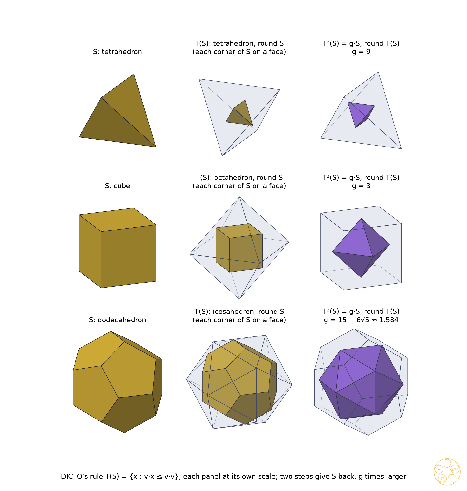
The theorem needs both solids to have their corners on one sphere. A uniform (Archimedean) solid A has its corners on one sphere, so T(A) is its Catalan dual; but the Catalan dual's corners lie on as many spheres as A has kinds of face, and the theorem does not apply. These chains close in four steps, as Section 5 shows; the theorem covers exactly the chains of period two among the classical solids. It also covers DICTO's David and Delilah, whose corners at every step form a single orbit of their symmetry group and so lie on one sphere; David's gain is 10 and Delilah's 3.
DICTO noticed that the four-step factors of the star chain of the truncated icosahedron in #78, 4.944 for golden spikes and 11.542 for doubled ones, are close to 5 and 12, and proposed that such factors might form a series.
Proposition 2. Let a star chain grow by spikes whose tips lie at s times the feet of the face perpendiculars, and let its solids lie on a closed chain of T with period p and radius gain g. Then the star chain closes with the same period, and its p-step factor is sp/g.
Proof. By #78, T(Sn+1) = s·Sn, so with Lemma 1(c), Tp(Sn+p) = sp·Sn. On the chain Tp multiplies by g, so Sn+p = (sp/g)·Sn. ∎
For the truncated icosahedron p = 4 and g = (17745 − 7712√5)/361 = 1.3862708, so the factors are φ⁴/g = 4.9442735 and 2⁴/g = 11.5417565, exactly the numbers DICTO saw. They are not 5 and 12; the nearness comes from g lying close to 1.4, and the numbers that carry the structure are the gains g themselves, which the next section lists.
Every Platonic, Archimedean and Catalan solid but four comes back under the rule, and so do ten of DICTO's solids. The growth factors are exact numbers built from √5, √2 or ∛2.
| Solid (Archimedean / Catalan dual) | Period | Radius gain, exact | Decimal | Norm |
|---|---|---|---|---|
| tetrahedron | 2 | 9 | 9 | 3² |
| cube, octahedron | 2 | 3 | 3 | 3 |
| dodecahedron, icosahedron | 2 | 15 − 6√5 | 1.583592 | 3²·5 |
| truncated tetrahedron / triakis tetrahedron | 4 | 121/25 | 4.84 | 11²/5² |
| cuboctahedron / rhombic dodecahedron, truncated octahedron / tetrakis hexahedron (one chain) | 4 | 5/2 | 2.5 | 5/2 |
| truncated cube / triakis octahedron | 4 | 271 − 190√2 | 2.299420 | 17·73 |
| rhombicuboctahedron / deltoidal icositetrahedron | 4 | (2281 − 1556√2)/49 | 1.642521 | 17·433/7² |
| icosidodecahedron / rhombic triacontahedron; DICTO GTI, FPD, Palintriacontahedron | 4 | 35 − 15√5 = 10/φ⁴ | 1.458980 | 2²·5² |
| truncated icosahedron / pentakis dodecahedron (#78) | 4 | (17745 − 7712√5)/361 | 1.386271 | 5·89·109/19² |
| truncated dodecahedron / triakis icosahedron | 4 | (5179 − 2238√5)/121 | 1.443640 | 61·241/11² |
| rhombicosidodecahedron / deltoidal hexecontahedron | 4 | (32269 − 13820√5)/1089 | 1.254857 | 41·17401/(3⁴·11²) |
| DICTO Icosaxes | 4 | 65 − 28√5 | 2.390097 | 5·61 |
| DICTO Unborn Axes | 4 | (72 − 27√5)/5 | 2.325233 | 3⁴·19/5² |
| DICTO Tweedledum | 4 | 293 − 652√5/5 | 1.416736 | 41·101/5 |
| DICTO Metaxyhexecontahedron | 4 | 939725/9 − 140084√5/3 | 1.440036 | 5·2081·2341/3⁴ |
| DICTO Samson (enters after one step) | 4 | squared gain in ℚ(∛2), cubic | 3.855518 | — |
| DICTO David | 2 | 10 | 10 | 2·5 |
| DICTO Delilah | 2 | 3 | 3 | 3 |
Table 1. The closed chains of T. The classical solids are built exactly as orbits of a seed corner under their symmetry group and checked uniform; each chain enters its cycle at once except Samson's. An Archimedean solid and its Catalan dual share one chain. Norm: for an irrational gain the field norm g·g′, factored; for a rational gain the gain itself. Samson's squared gain is −8732015647/174900625 − (680143024/174900625)∛2 + (7678489792/174900625)∛4.
The two omnitruncates, the truncated cuboctahedron and the truncated icosidodecahedron, and their duals do not close in eight steps: the number of corners keeps rising (from 26 to 552 and from 62 to 812), with new kinds of corner at every step. They are the only Archimedean solids with three kinds of face.
The chain of DICTO's Ogdoecontahedron (OG) passes exactly through four of his named solids, the KRE, PHE, TPP and DPHP (#39 (Part I, Chapter 11)), and then leaves the data set: 452, 642, 1220, 1352 and 2240 corners at steps five to nine, with the number of different corner radii rising (3, 2, 4, 4, 6, 10, 14, 19, 24). A step similar to an earlier one would need the same number of corners, so the chain does not close within nine steps, and the rising number of corner kinds shows it spreading rather than settling. The OG's corners lie on mirror planes, as the closing solids' do, so lying on mirrors is not enough for a chain to close.
Depth decides, not the number of plane families. We swept the solids whose faces lie on two kinds of symmetry axis, exactly. Truncated icosahedra, cubes and octahedra (faces on the 5- and 3-fold or the 4- and 3-fold axes) close at every depth tested. The cube with its edges cut back (planes x = ±1 and (±1, ±1, 0)·x ≤ 2s) shows three regimes: its chain closes in four steps for s ≤ 3/5 and for s ≥ 3/4, and spreads for every tested s between (twelve values from 0.6125 to 0.7375, among them 1/φ). At s = 3/5 all 32 corners lie on one sphere; above it the image T(S) has corners off the symmetry axes, and from 3/4 on its 26 corners all lie on axes again. The dodecahedron with its edges cut back behaves the same way: it closes for s ≤ 43/40 and s ≥ 5/4 and spreads for 87/80 ≤ s ≤ 99/80. Conversely, a solid with the faces of the truncated cuboctahedron, cut at other depths, closes in four steps, though the Archimedean truncated cuboctahedron does not.
Proposition 3. The squared gain of a closed chain lies in the number field of the solid's coordinates. For an irrational gain g in ℚ(√5), every prime that divides the norm N(g) = g·g′ to an odd power is 5 or a prime p ≡ ±1 (mod 5); in ℚ(√2) it is 2 or p ≡ ±1 (mod 8).
Proof. T only intersects half-spaces whose data are built from the coordinates, so every corner of every step lies in the field, and so does the ratio of squared radii of two similar steps. In a quadratic field a prime p that stays prime (is inert) has norm p², so the power of p in the norm of any element is even; the primes that may appear to an odd power are those that split or ramify, and by quadratic reciprocity these are 5 and p ≡ ±1 (mod 5) in ℚ(√5), 2 and p ≡ ±1 (mod 8) in ℚ(√2) (standard: e.g. TCD number theory notes, chapter 15; Goldmakher's notes on the Kronecker symbol). ∎
All the primes in Table 1 obey this: 89 and 109 (truncated icosahedron), 61 and 241 (truncated dodecahedron), 41 and 17401 (rhombicosidodecahedron), 17, 73 and 433 (the octahedral ones), and in DICTO's solids 61 (Icosaxes), 19 (Unborn Axes), 41 and 101 (Tweedledum), 2081 and 2341 (Metaxyhexecontahedron). The inert prime 3 appears only to the fourth power (Unborn Axes, the Metaxyhexecontahedron, the rhombicosidodecahedron's denominator). Rational gains (9, 3, 5/2, 121/25, and David's 10 and Delilah's 3) fall outside the proposition, which speaks only of irrational gains. So the primes are fixed by the field and carry no further meaning; DICTO's proposed series is found in the gains themselves.
In the app. Polyhedraverse, Star step (polyhedraverse.dictospheres.com/?open=starstep:CUBE:2), spikes any convex solid and wraps it, one tap per step: the star chain, which is the chain of T read backwards.
DICTO's growth rule is a mirror in a sphere, applied to the inverted corners. Where the corners of a solid and of its image lie on spheres, two steps of the rule close the chain, and the gain is the square of the ratio of the spheres: for the Platonic solids, circumradius over inradius, squared. The near-5 and near-12 factors DICTO saw in the TI Star are s⁴/g exactly, the spike factor to the fourth over the gain of the rule. The gains of all closed chains are exact numbers in ℚ, ℚ(√2), ℚ(√5) or ℚ(∛2), arranged by symmetry into series; their primes are the ones the field allows. DICTO's idea of a new series of ratios is answered by the gains, not by their primes.
From paper #85 (version 2), DICTO DOI 10.5281/zenodo.23850490
Why DICTO's sharp-edged pieces keep growing while the round stars freeze: the valley law
Put a spike on every face of a solid, then a spike on every face of the spikes, and again. Where two spikes lean towards each other, the valley between them fills up after a few steps. Whether it fills depends on one angle: how sharp the edge under the valley is.
The Star Cores papers follow DICTO's spiked solids. In The Truncated Icosahedron Star (#78) DICTO turned a solid's own face pyramids outwards. Star Cores of DICTO's Solids (#79, paper A) gave every new shape of DICTO Solids that treatment, and then built a second and third star on the first. With the tips straight over the triangles' centres, neighbouring spikes crossed in the valleys at the second step. DICTO proposed shortening the spikes in the valleys and keeping them full on the ridges: his valley rule. With it every run ended without a clash, and the runs split in two. The symmetric shapes froze: at the third step they added almost nothing. Some of DICTO's pieces, the ones he built as parts of a fill rather than as whole symmetric solids, kept growing. Paper A named them and left them to this chapter: Lahdeli, Chucky, the Triskelion Tetrahedron, the Dodeca-13 Wedge, Samson, Fang and Kagemusha. Core Cycles (#81, paper B) and The Gains of DICTO's Growth Rule (#80, paper C) dealt with the cores and the hulls of the chain. This chapter deals with the eccentric pieces.
We prove a law for one edge of the solid, the valley law, and show that it sorts the growth of all 50 shapes of the valley runs by a single number, the solid's sharpest dihedral angle. The pieces keep growing because they have sharp edges. Symmetry plays no part in it: Samson and the Triskelion Tetrahedron have the full tetrahedral symmetry and keep growing, because their sharpest edges are right angles.
Each piece comes from one of DICTO's papers and is in DICTO Solids v6 with its D-number. Lahdeli (D77) and Sonsam are the two pieces of the twinned octet at its equal-volume point (#56). Chucky (D80) and Fang (D81) are the pieces of the holes of the stacking ABAC, and the Triskelion Tetrahedron (D82) the cubic tetrahedral piece of Samson's family (#57, The Rule of Halves). Samson (D71) is the octet's tetrahedral piece at the Delian bond (#51). The Dodeca-13 Wedge (D6) is one of the two gap pieces of the DICTO Dodeca-13 (#13). Kagemusha (D86, earlier Shadow-17) is two of Johnson's gyroelongated pentagonal pyramids (J11) glued on their pentagons (#62); it is the only non-convex one.
| D | Piece | Symmetry | V, E, F | Dihedral angles δ | Edges δ ≤ 120° | δ ≤ 90° | Open for ever at φ |
|---|---|---|---|---|---|---|---|
| D77 | Lahdeli | D3d | 12, 18, 8 | 70.53°, 109.47° | 18 | 6 | 12 |
| D80 | Chucky | C3v | 19, 30, 13 | 90°, 109.47°, 120°, 144.74° | 24 | 6 | 6 |
| D82 | Triskelion Tetrahedron | Td | 16, 24, 10 | 90°, 125.26° | 12 | 12 | 12 |
| D6 | Dodeca-13 Wedge | C2v | 8, 12, 6 | 10.31°, 85.83°, 91.60°, 107.82°, 108.22° | 12 | 5 | 4 |
| D71 | Samson | Td | 16, 24, 10 | 90°, 125.26° | 12 | 12 | 12 |
| D81 | Fang | C3v | 7, 12, 7 | 70.53°, 109.47° | 12 | 3 | 6 |
| D86 | Kagemusha | D5h | 17, 45, 30 | 138.19°, 201.63° (5 reflex edges) | 0 | 0 | 0 |
Table 1. The seven pieces. Dihedral angles to 0.01°, measured inside the solid. The last three columns count edges: valleys open through step two and step three at t = 2 (Theorem, (d)), and valleys that never close at t = φ.
Let S be a solid with its centre O (the mean of its corners) strictly inside every face plane, cut from O into one pyramid per face. A step puts a spike on every face of the current surface. For a face with the piece Q beneath it (at the first step the centre pyramid, later the spike it belongs to), let A be the point of Q farthest below the face's plane (the mean of such corners if there are several) and A0 the foot of the perpendicular from A to the plane. The spike of height s is the pyramid over the face with tip
A + s (A0 − A),
so s = 1 is flat, and the full spike has s = t, the spike factor: t = 2 mirrors Q's far point in the face, t = φ is the golden spike. At the first step A = O and this is #78's turn. DICTO's valley rule (#79) gives each spike the largest s in [1, t] for which it overlaps no piece already built; then any two new spikes that overlap are both cut back to the largest common s at which they do not. Overlaps are tested by separating axes in float64 (study 2026-10-30-star-cores, star_valley.py). We follow the rule exactly as it was run.
Every face of the solid contributes one triangle per edge to the surface after step one: the side of its spike over that edge. So every edge e of S carries two valley faces, one from each side, and after each later step the spike on a valley face has again exactly one face through e. The valley at e is the open wedge between the two valley faces.
For an edge e between faces f and f′, let α be the angle at e between f and the plane through e and O, and α′ the same on the side of f′. The plane through e and O splits the solid's dihedral angle at e, so δ = α + α′. In the face plane of f, let d be the distance of the plane from O and ρ the signed distance from the foot of O to the line of e (positive when the foot lies on the face's side of e); then α = atan2(d, ρ), which exceeds 90° when the foot of O lies beyond e.
Lemma 1 (the angle of a spike at an edge). Let a face F with piece Q beneath it contain the segment e, and let βQ be Q's dihedral angle at e, between F and the plane through e and A. Then the spike of height s on F has the dihedral angle γ at e with
tan γ = (s − 1) tan βQ,
taken in (0°, 180°), and it lies inside the wedge of angle γ on the far side of F from Q.
Proof. Take coordinates with e on the x-axis and F in the plane z = 0, Q below. Write A0 = (x, y, 0) and A = (x, y, −h) with h > 0; then tan βQ = h/y (with atan2 when y ≤ 0). The tip is A + s(A0 − A) = (x, y, (s − 1)h), so the spike's face through e makes the angle atan2((s − 1)h, y) with F. The spike is the hull of F and a point above F, so it lies in the wedge between F and that face. ∎
Theorem (the valley law). Let S be convex with O strictly inside, e an edge with angles α, α′ and dihedral angle δ = α + α′, and t > 1 the spike factor. Suppose that the spikes on the two valley faces at e were full at steps 1, …, k − 1.
(a) The full spike of step k on f's side meets e at the angle γk with tan γk = (t − 1)k tan α, and likewise γ′k on the side of f′.
(b) Both spikes of step k at e can be full only if
βk = 360° − δ − (γ1 + … + γk) − (γ′1 + … + γ′k) ≥ 0.
If βk < 0, the valley rule shortens at least one of them.
(c) If after some step the two valley faces at e lie in one plane, every later spike on either of them has height zero: the valley is closed for good.
(d) For t = 2, γk = α and γ′k = α′ for every k, so βk = 360° − (k + 1)δ: the two spikes of step k at e can be full only if δ ≤ 360°/(k + 1), that is δ ≤ 120° at step two and δ ≤ 90° at step three, whatever the split of δ into α and α′. For 1 < t < 2 the angles shrink: at t = φ and for α = α′, the valley takes two full spikes at step two if and only if tan²(δ/2) ≤ 4 + 2√5 (δ ≤ 142.08°), at step three if and only if δ ≤ 128.17°, and at every step if and only if δ ≤ 112.20°.
Proof. (a) We find the piece beneath each valley face and apply Lemma 1. At step 1 the face is f itself, Q is the centre pyramid and A = O, so βQ = α and γ1 = atan2((t − 1)d, ρ). At step 2 the valley face is the side T1 of f's spike Q1 over e. The corners of Q1 are those of f and the tip, which lies on T1; so the far point A lies in the plane of f, the plane through e and A is the plane of f, and βQ is Q1's angle at e, which is γ1. At step k ≥ 3 the valley face Tk−1 is the face through e of the tetrahedron Qk−1 with corners the two ends of e and the tips of steps k − 2 and k − 1; its only corner off Tk−1 is the tip of step k − 2, so the plane through e and A is Tk−2 and βQ = γk−1. By Lemma 1 with s = t, tan γk = (t − 1) tan γk−1, and by induction tan γk = (t − 1)k tan α.
(b) Near an inner point of e each piece through e coincides with its dihedral wedge at e. Going round e from the solid, the side of f carries the wedges γ1, …, γk−1 of the earlier full spikes, one after the other (Lemma 1: each spike lies beyond the face it stands on), and the side of f′ the same in the other sense. The two full spikes of step k add γk and γ′k. If the total exceeds 360°, the last two wedges overlap near every inner point of e, so the two full spikes overlap, and the valley rule cuts at least one of them back.
(c) If the two valley faces lie in one plane Π, they are two triangles in Π on the same side of the line e, each with e as an edge, so they overlap in a region of Π next to e. A spike of positive height on one of them reaches beyond Π into the piece standing on the other, near that region, and overlaps it; the valley rule gives it height zero. The face is then kept as it is, and the same holds at every later step.
(d) For t = 2, tan γk = tan α with both angles in (0°, 180°), so γk = α, and βk = 360° − δ − kα − kα′ = 360° − (k + 1)δ. For t = φ and α = α′ = δ/2, write x = tan α and u = t − 1. At step two the condition is γ1 + γ2 ≤ 180° − α. With tan γ1 = ux and tan γ2 = u²x, equality holds when tan(γ1 + γ2) = −x, that is (u + u²)x/(1 − u³x²) = −x, or x² = (1 + u + u²)/u³. For u = 1 this gives x² = 3, α = 60°, δ = 120°, as above; for u = 1/φ it gives x² = φ³(1 + 1/φ + 1/φ²) = 2φ³ = 4 + 2√5, δ = 142.0786°. The left side grows with δ, so the valley is open below this value and closed above it. The bounds 128.1727° (k = 3) and 112.2017° (all k; the series of the γk converges because tan γk ≤ φ−k |tan α|) are the roots of βk = 0, found by bisection to 10−10. ∎
The rule's common cut-back of (b) is what produces the situation of (c): when two valley spikes are cut back only against each other, the largest common height at which they do not overlap is the one at which β = 0, and their faces through e then lie in one plane.

The formula. We rebuilt the valley rule exactly as in #79 for the seven pieces, five shapes for contrast (the Dodeca-13 Needle, the OCD Stella, the FPD, Tweedledum, the GTI) and the three skewed solids D1–D3, whose centre lies beyond some face edges (α > 90°), at t = 2 and t = φ, steps one to three, and measured at every edge of the solid the opening between its two valley faces. Wherever both valley spikes had been full, the measured opening agreed with βk of the theorem to 4.4 × 10−15 rad. No edge with βk < 0 had both spikes full. 676 valleys closed (386 at t = 2, 290 at t = φ), and none grew again.
The count. For all 50 shapes of the valley runs of #79 at both spike factors, every triangle of the surface after step one is a valley face of exactly one edge, so by (b) the number of full spikes at step two is at most twice the number of open edges plus the number of closed ones. This holds in every one of the 100 runs.
The split. Table 2 sorts the 44 convex shapes of the runs by their sharpest dihedral angle δmin. The line at 120° is the line of (d) for step two at t = 2, and it separates the growth exactly.
| Sharpest edge | Shapes | Full spikes at step 2 (t = 2) | Volume added at step 3 (t = 2) | Valleys open for ever at t = φ |
|---|---|---|---|---|
| δmin ≤ 120° | 14 | in every shape | 16.5 to 57.5 per cent | in every shape (3 to 12 edges) |
| δmin > 120° | 30 | none | at most 4.2 per cent; less than 0.1 per cent in 26 | none |
Table 2. The 44 convex shapes of the valley runs of #79 (all with at most 200 faces). Sharp: the Dodeca-13 Wedge (10.31°), Ganesha (58.52°), the Dodeca-13 Needle (60.24°), the three skewed solids D1–D3 (63.43° to 79.19°), Sonsam, Lahdeli and Fang (70.53°), Samson, Ian Dury, Blockhead, Chucky and the Triskelion Tetrahedron (90°). Round: the other 30, from Jubjub (135.52°) to Jabberwock (163.40°); the four that add more than 0.1 per cent are Walrus (4.2), Hatta (3.9), Haigha (2.3) and PHE (0.2). Data: valley-law-predict.json, star-valley.json.
The theorem proves the half of this that concerns the valleys: on a round shape every valley at an edge of the solid closes at step two at t = 2 and is never built on again. That the other faces of the round stars, the ridges and the faces round high corners, also stop growing at step three is observed in the runs, not proved here. On a sharp shape the theorem shows only that the valleys at the sharp edges stay open; that the rule then uses them is again what the runs show.
| Piece | Full spikes, steps 1–3 (t = 2) | Steps 2–3, t = 2 | Step 3, t = 2 | Steps 2–3, t = φ |
|---|---|---|---|---|
| Lahdeli | 8 / 36 / 12 | ×3.08 | ×1.335 | ×1.22 |
| Chucky | 13 / 42 / 24 | ×2.69 | ×1.436 | ×1.59 |
| Triskelion Tetrahedron | 10 / 24 / 0 | ×2.68 | ×1.386 | ×1.15 |
| Dodeca-13 Wedge | 6 / 14 / 12 | ×2.54 | ×1.470 | ×1.73 |
| Samson | 10 / 24 / 24 | ×2.47 | ×1.260 | ×1.19 |
| Fang | 7 / 12 / 0 | ×2.37 | ×1.372 | ×1.56 |
| Kagemusha | 20 / 0 / 5 | ×1.47 | ×1.123 | ×1.79 |
| FPD (contrast) | 60 / 0 / 0 | ×1.16 | ×1.000 | ×1.28 |
Table 3. The valley runs of #79 for the seven pieces and the FPD. Full spikes out of 8, 36, 108 for Lahdeli, and so on (the first count is the number of faces). Volume factors over the step before.
Lahdeli grows most at t = 2. All its edges are 70.53° or 109.47°, both under 120°, so every valley takes full spikes at step two: all 36 spikes of step two are full and the volume more than doubles (×2.31). At step three only its six edges of 70.53° stay open by the law (4 × 70.53° = 282° ≤ 360° < 4 × 109.47°), and exactly 12 spikes are full, two per open edge.
Samson and the Triskelion Tetrahedron have the same dihedral angles, 90° at 12 edges and 125.26° at 12. At step two the law closes the valleys of the 125.26° edges and leaves the 90° ones; both pieces have exactly 24 full spikes, two per right-angled edge. At step three the right angles reach the bound of (d) exactly, 4 × 90° = 360°: the full spikes would just touch. Samson keeps all 24; in the Triskelion Tetrahedron other spikes reach them first, and none of step three is full, yet the step still adds 39 per cent.
Chucky has 6 edges of 90°, 3 of 109.47°, 15 of exactly 120° and 6 of 144.74°. At step two each of its 15 valleys of 120° takes both full spikes, which meet face to face (β2 = 0), so by (c) they are closed for good; the six edges of 144.74° get no full spike; 42 of the 60 spikes are full. At step three none is full, but the step adds 44 per cent.
The Dodeca-13 Wedge has the sharpest edge of all the shapes, 10.31°, the thin edge of the wedge: by (d) its valley could stay open for 33 steps at t = 2. At t = φ it grows most after Kagemusha. Fang has three edges of 70.53° and nine of 109.47°: 12 full spikes at step two, none at step three, but still 37 per cent more volume, from spikes cut back by the rule.
Kagemusha is the exception. It is non-convex: the two J11 meet in five reflex edges of 201.63°, and its other 40 edges are 138.19°. The theorem is stated for convex solids, but its proof uses only the edge and the pieces next to it, and at a reflex edge (b) gives β1 = 360° − 2δ < 0 at t = 2: the valleys at the reflex edges cannot take two full spikes even at step one. In the runs ten faces stay flat at step one, at both spike factors. They stay flat at every step, and the notches never fill:
Corollary (empty notches). Let e be an edge of a solid S with O inside, whose angles α and α′ both exceed 90° (the foot of O lies beyond e in both face planes), and suppose β1 < 0. Then under the valley rule neither face at e ever takes a spike of positive height.
Proof. At step 1 the piece beneath each face is its centre pyramid and A = O, so by Lemma 1 the spike of height s on f meets e at γ(s) = atan2((s − 1)d, ρ) with ρ < 0. As s falls from t towards 1, γ(s) rises from γ1 towards 180°: shortening the spike turns it further over the notch. So for any heights s, s′ in (1, t], γ(s) + γ′(s′) ≥ γ1 + γ′1 = 360° − δ − β1 > 360° − δ, and as in (b) the two spikes overlap near every inner point of e. The rule's common cut-back finds no positive height at which they are clear, and gives both height zero. Each face then keeps its centre pyramid beneath it and its flat partner beside it, so the same holds at every later step. ∎
At a convex edge the opposite holds: ρ > 0, γ(s) falls to 0 as s → 1, and the cut-back always finds a positive height; that is where the growth from cut-back spikes comes from. At Kagemusha's reflex edges tan α = tan α′ = −(3 + √5), α = α′ = 100.81°, and β1 = −43.25° at t = 2 and −55.97° at t = φ; in the runs the ten faces beside them stay flat at all three steps, and the notch stays open at exactly 360° − δ = 158.38°.
Kagemusha grows on its other 20 faces, the two caps (Table 4). Its 40 convex edges of 138.19° split in three ways: ten edges A with α = α′ = 69.09° (tan α = φ²), ten B with 49.79° and 88.40°, and twenty C, each beside a notch face, with 53.64° and 84.55°. At t = 2 no valley can take two full spikes at step two by (d), and none does: the step adds 31 per cent, all from spikes cut back by the rule, as for Fang. At t = φ the law itself leaves the ten A valleys open at step two (138.19° < 142.08°, β2 = +15.25°), and all 20 of their spikes are full. The C valleys are one-sided, since the notch face beside each never takes a spike, and their 20 spikes are full as well; the B valleys (β2 = −11.91°) are cut back. At step three the A valleys close (β3 = −48.19°), and most of the growth is on the ridges of the cap spikes: 60 per cent at t = 2, 93 per cent at t = φ. This is why Kagemusha grows most of all the pieces at t = φ (×1.79 over steps two and three).
| t, step | Volume × | Notch faces | A valleys | B valleys | C valleys | Ridges |
|---|---|---|---|---|---|---|
| 2, step 2 | 1.3115 | 0 | 52.9 % (0 / 20 / 0) | 15.3 % (0 / 20 / 0) | 31.8 % (0 / 9 / 11) | — |
| 2, step 3 | 1.1227 | 0 | 0 | 0 | 39.9 % | 60.1 % |
| φ, step 2 | 1.5045 | 0 | 43.6 % (20 / 0 / 0) | 23.1 % (0 / 20 / 0) | 33.3 % (20 / 0 / 0) | — |
| φ, step 3 | 1.1889 | 0 | 0 | 0 | 6.8 % | 93.2 % |
Table 4. Where Kagemusha's volume goes: share of the volume gained at each step, with full / cut-back / flat spikes in brackets. At step one the 20 cap faces take full spikes and the 10 notch faces none (×1.7405 at t = 2, ×1.4577 at t = φ). The spike volumes add up to the volume gained to 7 × 10−15 (study 2026-11-01-star-cores-d, kagemusha_notches.py).

Under the valley rule Kagemusha's notches stay empty. DICTO proposed two ways to fill them at step one and named the pieces. Maedate (前立, the front crest of a samurai helmet) joins the two crossing notch spikes into one piece: the hull of the two notch faces (a, b, c) and (a, b, c′) and their full tips T and T′, one per notch, an irregular octahedron (6 corners, 8 triangles). Kuwagata (鍬形, the V-shaped horns of the helmet) follows DICTO's sloping-base rule: each notch face keeps a pyramid, but its apex is lowered along the line from c to T until it meets the notch's mirror plane, the plane of the shared pentagon, so the two pyramids meet face to face; the pair is an irregular triangular dipyramid. In every run both pieces lie outside the solid and clear of every other piece. The 20 cap faces take full spikes at step one as before, and steps two and three follow the valley rule unchanged (Table 5, Figure 5.3).
| Notch rule | t | Step 1 | Step 2 | Step 3 | After three steps | Notch piece volume |
|---|---|---|---|---|---|---|
| valley rule (empty notches) | 2 | ×1.7405 | ×1.3115 | ×1.1227 | 2.563 | 0 |
| Maedate | 2 | ×2.0354 | ×1.3216 | ×1.1368 | 3.058 | 0.2218 |
| Kuwagata | 2 | ×1.9404 | ×1.3102 | ×1.0000 | 2.542 | 2 × 0.0752 |
| valley rule (empty notches) | φ | ×1.4577 | ×1.5045 | ×1.1889 | 2.607 | 0 |
| Maedate | φ | ×1.6236 | ×1.4830 | ×1.1032 | 2.656 | 0.1248 |
| Kuwagata | φ | ×1.5869 | ×1.4521 | ×1.1784 | 2.715 | 2 × 0.0486 |
Table 5. Kagemusha's star with its notches left empty and with DICTO's two notch pieces: volume factors over the step before, the volume after three steps and the volume of the notch piece at each notch, all with Kagemusha's volume taken as 1. Every surface is closed with Euler characteristic 2, and the volumes add up exactly (study 2026-11-01-star-cores-d, kagemusha_variants.py).

Both pieces fill the notches. Maedate makes Kagemusha grow most at t = 2 (×3.058 after three steps, against ×2.563 with empty notches), and its star keeps growing at both spike factors. With Kuwagata at t = 2 the star stops: step three gives ×1.000000000, as the ten spikes still cut back add no volume to nine figures. At t = φ Kuwagata gives the largest star of the three, ×2.715. An analogy, and no more than that: in crystal growth the re-entrant corner between the two halves of a twin is where new layers start most easily, and twinned germanium dendrites grow from such corners (D. R. Hamilton and R. G. Seidensticker, 1960). Maedate and Kuwagata turn Kagemusha's re-entrant edges, where the valley rule lets nothing grow, into places that grow at the first step. Whether the new forms close into a cycle, and with what period, has not been computed.
DICTO proposed his sloping bases for the six convex pieces as well. We used them at their sharp edges, those that the law keeps open through step two (δ ≤ 120° at t = 2, δ ≤ 142.08° at t = φ). At each step, wherever the two full spikes at such an edge would overlap, they are not cut back: as in Kuwagata, each keeps a pyramid over its whole face, with its apex lowered along the line from the face's far corner towards its tip until it meets the bisecting plane of the valley, so that the two meet face to face. The rule applies only where the two apexes coincide and the pyramids are clear of the older pieces; elsewhere the valley rule acts as before. By the law the spikes at these edges do not overlap at steps one and two, so the sloping bases can act only at step three, at t = 2 on the edges between 90° and 120°. There they were needed at 31 valleys, and could be used at one: the edge of the Dodeca-13 Wedge, where the two apexes coincide. At the other 30 the two apexes differ, because the edge's two angles α and α′ are unequal, or the pyramids meet older pieces (Table 6).
| Piece | Sharp edges (t = 2 / φ) | Sloping pairs used / not possible, step 3, t = 2 | Step 3, t = 2 | Steps 1–3, t = 2 | Steps 1–3, t = φ |
|---|---|---|---|---|---|
| Lahdeli | 18 / 18 | 0 / 12 | ×1.3346 | 6.154 | 1.971 |
| Chucky | 24 / 24 | 0 / 3 | ×1.4356 | 5.383 | 2.575 |
| Triskelion Tetrahedron | 12 / 24 | 0 / 0 | ×1.3859 | 5.350 | 1.859 |
| Dodeca-13 Wedge | 12 / 12 | 1 / 6 | ×1.4838 (×1.4701) | 5.128 | 2.793 |
| Samson | 12 / 24 | 0 / 0 | ×1.2600 | 4.934 | 1.922 |
| Fang | 12 / 12 | 0 / 9 | ×1.3720 | 4.743 | 2.519 |
Table 6. DICTO's sloping bases at the sharp edges of the six convex pieces. Volumes relative to each solid. All figures equal those of the valley rule except the Dodeca-13 Wedge at t = 2, step 3 (valley rule in brackets). At t = φ the Triskelion Tetrahedron also has 12 valleys where sloping bases were not possible, and no piece uses one. Every surface is closed with Euler characteristic 2, and the volumes add up to 10−14 (study 2026-11-01-star-cores-d, sloping_six.py).
So no convex piece stops. Sloping bases act where two spikes collide, and the sharp valleys of the convex pieces are exactly the ones where they do not. Kagemusha's notches are the opposite case: there the spikes collide at the first step.
A spike on a valley face leans on the spike beneath it, and the angle it makes with the solid's edge is the angle of the piece below, stretched by the spike factor. For mirrored spikes it is exactly the angle of the centre pyramid, step after step, so the spikes stack round each edge like copies of the same two wedges, and an edge of dihedral angle δ has room for 360°/δ − 1 steps. A round shape, all of whose edges are blunter than 120°, fills every valley at the second step, and a filled valley never opens again: the star freezes. DICTO's eccentric pieces are not round. Six of them have edges of 90° or less, and their valleys stay open while the round stars stop; the Dodeca-13 Wedge, with its edge of 10.31°, has room for 33 steps. So the pieces keep growing because their edges are sharp, not because their symmetry is low: Samson and the Triskelion Tetrahedron are as symmetric as the tetrahedron. Kagemusha, with no sharp edge but five reflex ones, grows on its caps: under the valley rule its notches stay empty for ever, and its growth is cut-back spikes, the open golden valleys of step two and the ridges of step three. DICTO's notch pieces change this. With Maedate, the conjoined crest, the notches fill and the star grows most at t = 2; with Kuwagata, his sloping bases, the star of mirrored spikes stops growing at step three, so the one non-convex piece also reaches a finished form. Whether a star keeps growing is therefore decided by the solid's sharp edges and notches together with the rule used there: the valley law says which valleys stay open, and the rule at the notches decides whether the star stops. Only Kagemusha was run with the notch pieces. The six convex eccentric pieces keep growing with sloping bases at their sharp edges as well: in the valleys that the law keeps open the spikes do not collide, so there is almost nothing for the sloping bases to replace. Whether sloping bases at their blunter valleys, where the rule cuts spikes back, would stop them is the next test.
The seven pieces of Chapter 5 and DICTO's two notch pieces, one page each
D3d (order 12) · 12 corners, 18 edges, 8 faces: 2 triangles, 6 pentagons · convex · exact in a cubic field · first in #56, DICTO DOI 10.5281/zenodo.23635823
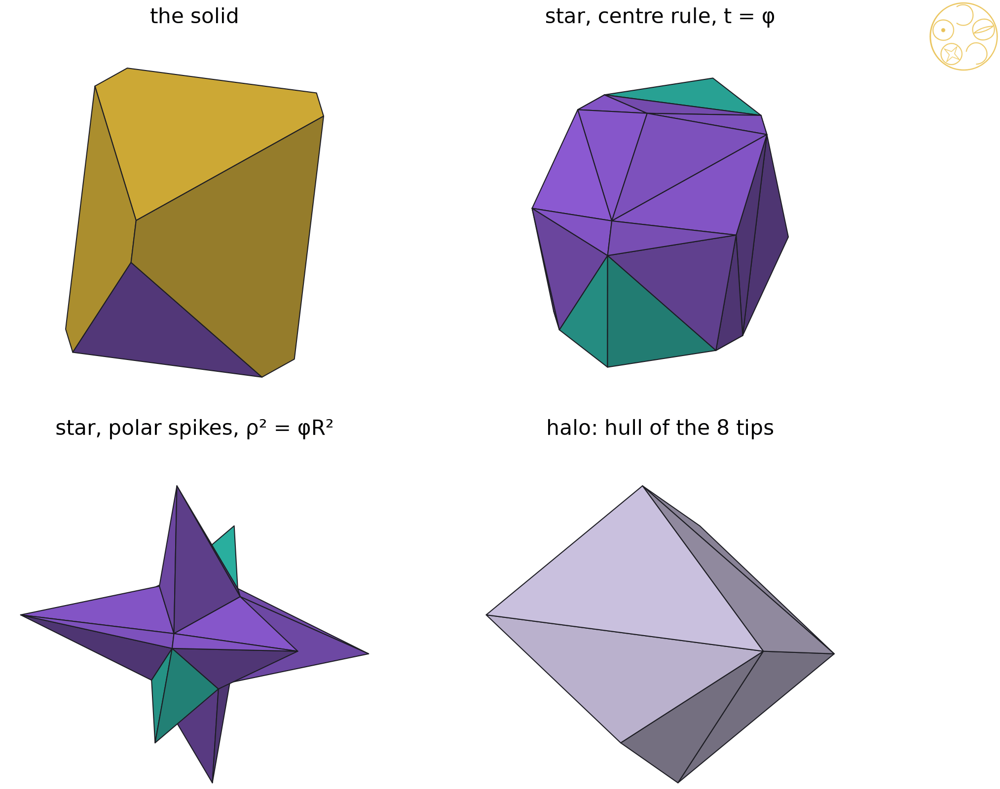
| Exact data | volume 2/3 ≈ 0.666667; squared edge lengths 1/32 + (1/2)·t + (2)·t··2 (×6); 25/32 + ( − 15/2)·t + (18)·t··2 (×6); 9/8 + ( − 6)·t + (8)·t··2 (×6) (DICTO Solids v7) |
|---|---|
| Centre rule (Ch. 2, Table 1) | group D: the star sticks out of its halo. Halo of the tips 1.0406 × the solid at t = φ, 1.9653 × at t = 2; 2 face families |
| Polar spikes (Ch. 2, Main theorem) | ρ² = φR²: the halo is the polar, 21.660 × the solid; the layer is 30 pieces, one pyramid per corner and one tetrahedron per edge, 0 overlaps, volumes adding up (ρ² = 2R²: halo 40.905 ×) |
| Core (Ch. 3) | period two from turn 2 (the Theorem); two turns scale the core by t²/3 in length |
| Chain of T (Ch. 2, Table 3) | not closed in eight steps (screened) |
| Building on the star (Ch. 2, Sect. 7) | DICTO's valley rule, volume added over steps two and three: ×1.22 at t = φ, ×3.08 at t = 2 |
| Valley law (Ch. 5, Theorem) | sharpest dihedral angle 70.53°: at most 120°, so a valley stays open through step two at t = 2 |
| Sloping bases at sharp edges (Ch. 5, Table 6) | sharp edges 18 / 18 (t = 2 / φ); used / not possible at step 3, t = 2: 0 / 12; step 3 ×1.3346; steps 1–3: ×6.154 at t = 2, ×1.971 at t = φ. No piece stops. |
| Note (inventory) | not found in the sources checked (#56): the twinned octet's octahedral-hole piece at its equal-volume point, Delilah's twin |
C3v (order 6) · 19 corners, 30 edges, 13 faces: 3 triangles, 3 quadrilaterals, 6 pentagons, 1 nonagons · convex · exact in ℚ · first in #57, DICTO DOI 10.5281/zenodo.23647898
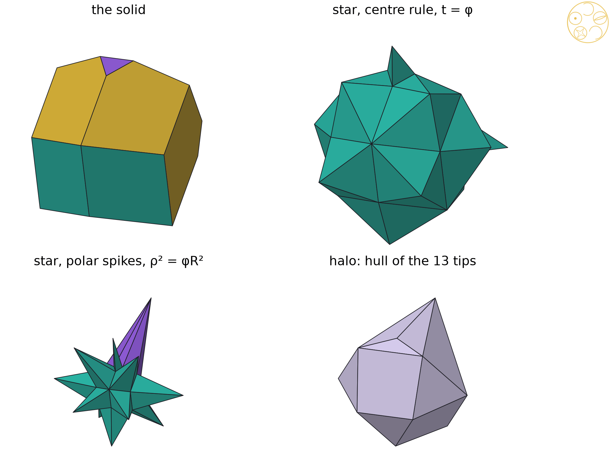
| Exact data | volume 383/192 ≈ 1.994792; squared edge lengths 1/8 (×9); 3/8 (×6); 3/4 (×15) (DICTO Solids v7) |
|---|---|
| Centre rule (Ch. 2, Table 1) | group D: the star sticks out of its halo. Halo of the tips 1.8480 × the solid at t = φ, 3.4901 × at t = 2; 4 face families |
| Polar spikes (Ch. 2, Main theorem) | ρ² = φR²: the halo is the polar, 23.692 × the solid; the layer is 49 pieces, one pyramid per corner and one tetrahedron per edge, 0 overlaps, volumes adding up (ρ² = 2R²: halo 44.743 ×) |
| Core (Ch. 3) | no core at turn 1 (Proposition 3: the families of tips lie in a plane) |
| Chain of T (Ch. 2, Table 3) | not run: no centre fixed by every symmetry |
| Building on the star (Ch. 2, Sect. 7) | DICTO's valley rule, volume added over steps two and three: ×1.59 at t = φ, ×2.69 at t = 2 |
| Valley law (Ch. 5, Theorem) | sharpest dihedral angle 90.00°: at most 120°, so a valley stays open through step two at t = 2 |
| Sloping bases at sharp edges (Ch. 5, Table 6) | sharp edges 24 / 24 (t = 2 / φ); used / not possible at step 3, t = 2: 0 / 3; step 3 ×1.4356; steps 1–3: ×5.383 at t = 2, ×2.575 at t = φ. No piece stops. |
| Note (inventory) | not found in the sources checked (#57): a Janus c/h piece of ABAC at -3/8 (hexagonal top half, cubic bottom half); its volume is the mean of its two parents' |
Td (order 24) · 16 corners, 24 edges, 10 faces: 4 triangles, 6 hexagons · convex · exact in ℚ · first in #57, DICTO DOI 10.5281/zenodo.23647898
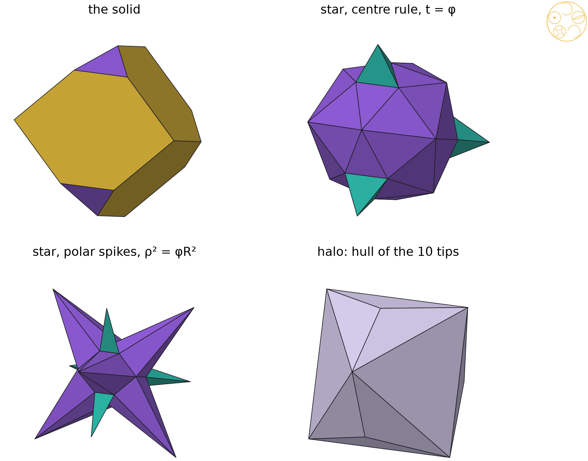
| Exact data | volume 79/81 ≈ 0.975309; squared edge lengths 2/9 (×12); 4/9 (×12) (DICTO Solids v7) |
|---|---|
| Centre rule (Ch. 2, Table 1) | group D: the star sticks out of its halo. Halo of the tips 1.2065 × the solid at t = φ, 2.2785 × at t = 2; 2 face families |
| Polar spikes (Ch. 2, Main theorem) | ρ² = φR²: the halo is the polar, 22.337 × the solid; the layer is 40 pieces, one pyramid per corner and one tetrahedron per edge, 0 overlaps, volumes adding up (ρ² = 2R²: halo 42.184 ×) |
| Core (Ch. 3) | period two from turn 1 (the Theorem); two turns scale the core by t²/9 in length |
| Chain of T (Ch. 2, Table 3) | not closed in eight steps (screened) |
| Building on the star (Ch. 2, Sect. 7) | DICTO's valley rule, volume added over steps two and three: ×1.15 at t = φ, ×2.67 at t = 2 |
| Valley law (Ch. 5, Theorem) | sharpest dihedral angle 90.00°: at most 120°, so a valley stays open through step two at t = 2 |
| Sloping bases at sharp edges (Ch. 5, Table 6) | sharp edges 12 / 24 (t = 2 / φ); used / not possible at step 3, t = 2: 0 / 0; step 3 ×1.3859; steps 1–3: ×5.350 at t = 2, ×1.859 at t = φ. No piece stops. |
| Note (inventory) | the cubic octet's tetrahedral piece at 5/24, a member of Samson's sliding family (#51); met in ABAC and named in #57 (the name marks that member) |
C2v (order 4) · 8 corners, 12 edges, 6 faces: 2 triangles, 2 quadrilaterals, 2 pentagons · convex · exact in ℚ(√5) · first in #13, DICTO DOI 10.5281/zenodo.23284281
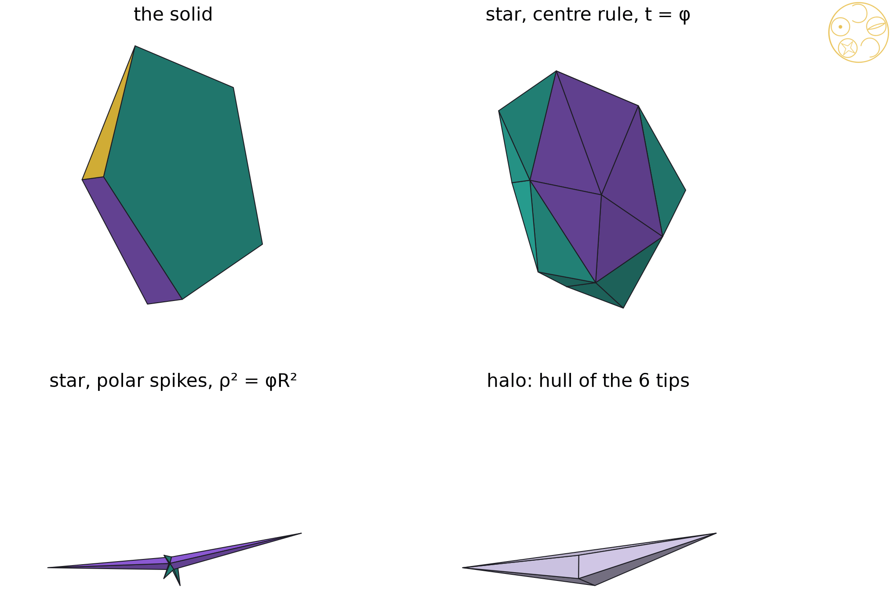
| Exact data | volume 1/10 + (1/20)√5 ≈ 0.211803; squared edge lengths 7/10 − (3/10)√5 (×2); 3/10 − (1/10)√5 (×1); 1 (×9) (DICTO Solids v7) |
|---|---|
| Centre rule (Ch. 2, Table 1) | group D: the star sticks out of its halo. Halo of the tips 0.7056 × the solid at t = φ, 1.3326 × at t = 2; 3 face families |
| Polar spikes (Ch. 2, Main theorem) | ρ² = φR²: the halo is the polar, 892.626 × the solid; the layer is 20 pieces, one pyramid per corner and one tetrahedron per edge, 0 overlaps, volumes adding up (ρ² = 2R²: halo 1685.763 ×) |
| Core (Ch. 3) | no core at turn 1 (Proposition 3: the families of tips lie in a plane) |
| Chain of T (Ch. 2, Table 3) | not run: no centre fixed by every symmetry |
| Building on the star (Ch. 2, Sect. 7) | DICTO's valley rule, volume added over steps two and three: ×1.73 at t = φ, ×2.54 at t = 2 |
| Valley law (Ch. 5, Theorem) | sharpest dihedral angle 10.30°: at most 120°, so a valley stays open through step two at t = 2 |
| Sloping bases at sharp edges (Ch. 5, Table 6) | sharp edges 12 / 12 (t = 2 / φ); used / not possible at step 3, t = 2: 1 / 6; step 3 ×1.4838 (valley rule ×1.4701); steps 1–3: ×5.128 at t = 2, ×2.793 at t = φ. No piece stops. |
| Note (inventory) | not found in the sources checked (DICTO Solids v7 inventory) |
Td (order 24) · 16 corners, 24 edges, 10 faces: 4 triangles, 6 hexagons · convex · exact in ℚ(∛2) · first in #51, DICTO DOI 10.5281/zenodo.23606828
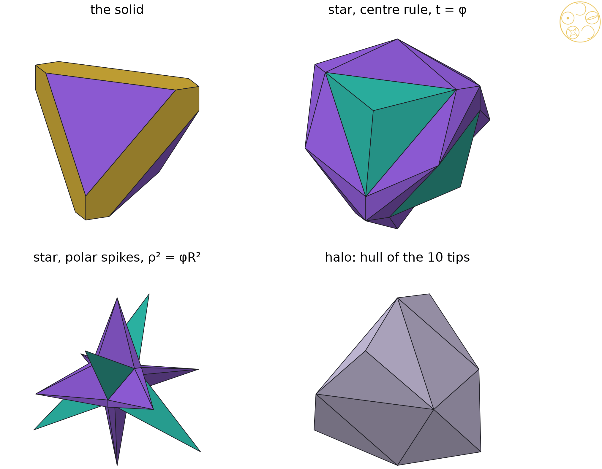
| Exact data | volume 2/3 ≈ 0.666667; squared edge lengths 1 + (1/2)·∛2 − 2··(2/3) (×12); ∛2 (×12) (DICTO Solids v7) |
|---|---|
| Centre rule (Ch. 2, Table 1) | group D: the star sticks out of its halo. Halo of the tips 1.2775 × the solid at t = φ, 2.4126 × at t = 2; 2 face families |
| Polar spikes (Ch. 2, Main theorem) | ρ² = φR²: the halo is the polar, 44.659 × the solid; the layer is 40 pieces, one pyramid per corner and one tetrahedron per edge, 0 overlaps, volumes adding up (ρ² = 2R²: halo 84.341 ×) |
| Core (Ch. 3) | period two from turn 1 (the Theorem); two turns scale the core by t²/9 in length |
| Chain of T (Ch. 4, Table 1) | period four, radius gain a cubic number of ℚ(∛2) ≈ 3.855518 (entering after one step) |
| Building on the star (Ch. 2, Sect. 7) | DICTO's valley rule, volume added over steps two and three: ×1.19 at t = φ, ×2.47 at t = 2 |
| Valley law (Ch. 5, Theorem) | sharpest dihedral angle 90.00°: at most 120°, so a valley stays open through step two at t = 2 |
| Sloping bases at sharp edges (Ch. 5, Table 6) | sharp edges 12 / 24 (t = 2 / φ); used / not possible at step 3, t = 2: 0 / 0; step 3 ×1.2600; steps 1–3: ×4.934 at t = 2, ×1.922 at t = φ. No piece stops. |
| Note (inventory) | new proportion: the cube with four alternate corners cut, at the Delian bond; not found in the sources (#51) |
C3v (order 6) · 7 corners, 12 edges, 7 faces: 4 triangles, 3 quadrilaterals · convex · exact in ℚ · first in #57, DICTO DOI 10.5281/zenodo.23647898
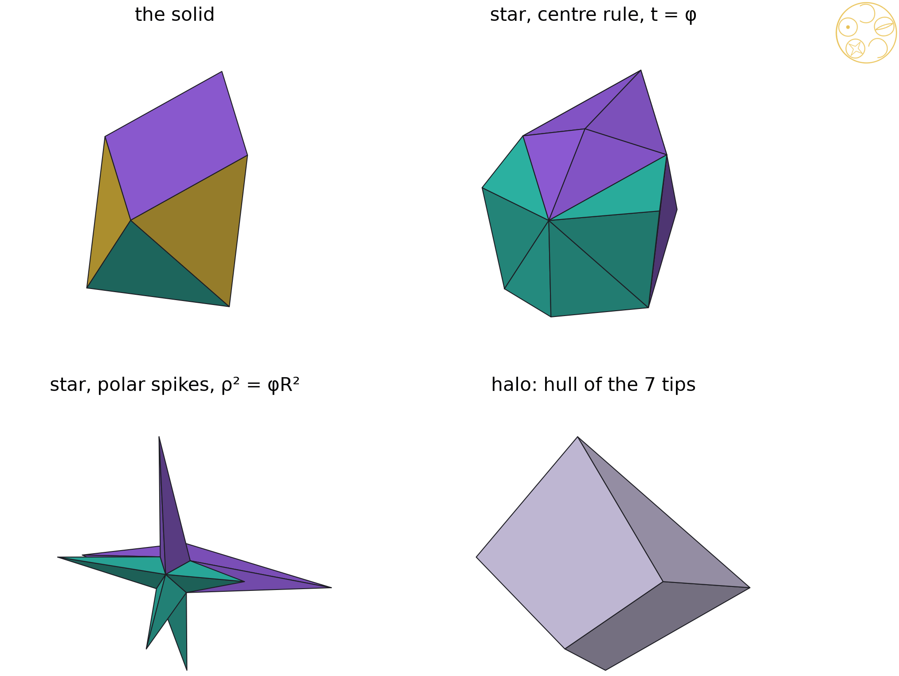
| Exact data | volume 5/81 ≈ 0.061728; squared edge lengths 2/9 (×12) (DICTO Solids v7) |
|---|---|
| Centre rule (Ch. 2, Table 1) | group D: the star sticks out of its halo. Halo of the tips 0.7597 × the solid at t = φ, 1.4347 × at t = 2; 3 face families |
| Polar spikes (Ch. 2, Main theorem) | ρ² = φR²: the halo is the polar, 171.421 × the solid; the layer is 19 pieces, one pyramid per corner and one tetrahedron per edge, 0 overlaps, volumes adding up (ρ² = 2R²: halo 323.736 ×) |
| Core (Ch. 3) | no core at turn 1 (Proposition 3: the families of tips lie in a plane) |
| Chain of T (Ch. 2, Table 3) | not run: no centre fixed by every symmetry |
| Building on the star (Ch. 2, Sect. 7) | DICTO's valley rule, volume added over steps two and three: ×1.56 at t = φ, ×2.37 at t = 2 |
| Valley law (Ch. 5, Theorem) | sharpest dihedral angle 70.53°: at most 120°, so a valley stays open through step two at t = 2 |
| Sloping bases at sharp edges (Ch. 5, Table 6) | sharp edges 12 / 12 (t = 2 / φ); used / not possible at step 3, t = 2: 0 / 9; step 3 ×1.3720; steps 1–3: ×4.743 at t = 2, ×2.519 at t = φ. No piece stops. |
| Note (inventory) | not found in the sources checked (#57): a Janus c/h piece of ABAC at 5/24 (hexagonal top half, cubic bottom half); its volume is the mean of its two parents' |
D5h (order 20) · 17 corners, 45 edges, 30 faces: 30 triangles · non-convex · exact in ℚ(√5) · first in #62, DICTO DOI 10.5281/zenodo.23687223
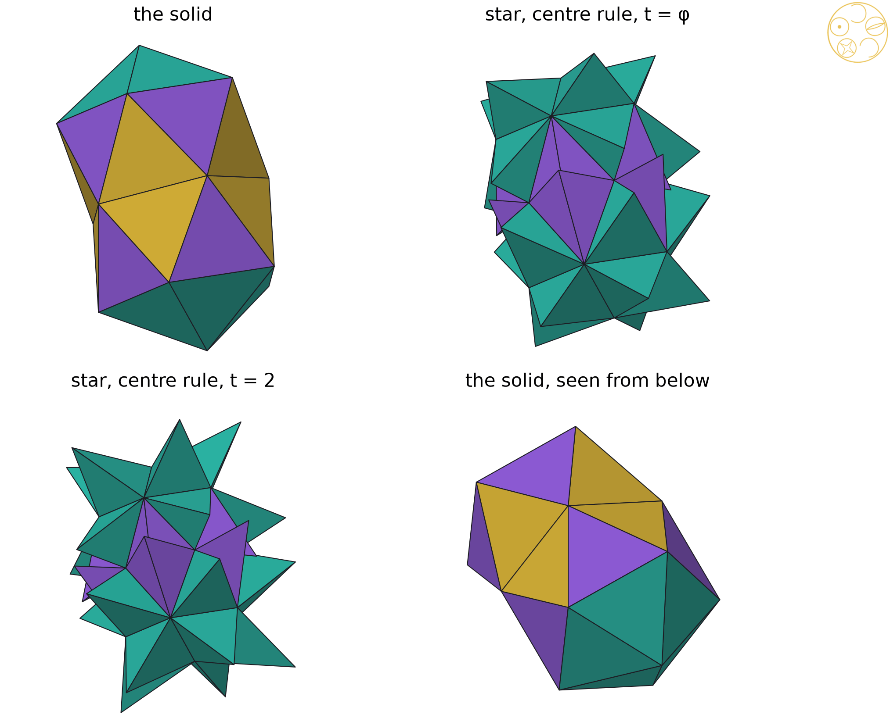
| Exact data | volume 25/12 + (3/4)√5 ≈ 3.760384; squared edge lengths 1 (×45) (DICTO Solids v7) |
|---|---|
| Centre rule (Ch. 2, Table 1) | group C: the star lies inside its halo, but corner and edge pieces do not fill the layer. Halo of the tips 2.6764 × the solid at t = φ, 5.0545 × at t = 2; 3 face families |
| Polar spikes (Ch. 2) | not decided for non-convex shapes: the layer pieces can cut into the solid (Chapter 2, Section 9) |
| Core (Ch. 3) | not run: Chapter 3 treats the convex shapes |
| Building on the star (Ch. 2, Sect. 7) | DICTO's valley rule, volume added over steps two and three: ×1.79 at t = φ, ×1.47 at t = 2 |
| Valley law (Ch. 5, Theorem) | sharpest dihedral angle 138.19°: blunter than 120°, so every valley at t = 2 is closed by step two |
| Notches (Ch. 5, Sect. 6) | the faces at its five reflex edges never take a spike under the valley rule (notch open at 158.38° throughout); it grows ×2.563 over three steps at t = 2 and ×2.607 at t = φ; with Maedate ×3.058 and ×2.656, with Kuwagata ×2.542 (stops at step three) and ×2.715 |
| Note (inventory) | DICTO's name 2026-10-30, the shadow warrior (was Shadow-17, a placeholder from the 2D view; file slug dicto-shadow-17 kept); new construction from a known piece (J11, Johnson's gyroelongated pentagonal pyramid, Johnson 1966): two J11 glued on their pentagons; #62 identifies it as the equal-edged form of the 600-cell's outer edge-first slices; status decided by DICTO 2026-10-28; placeholder name of #62 |
DICTO's notch piece of Kagemusha (D86) · conjoined spikes · float64 study (2026-11-01-star-cores-d, kagemusha_variants.py) · picture: one piece (t = 2), Kagemusha (gold) with its five notch pieces (teal), the star after step one at t = 2 and t = φ
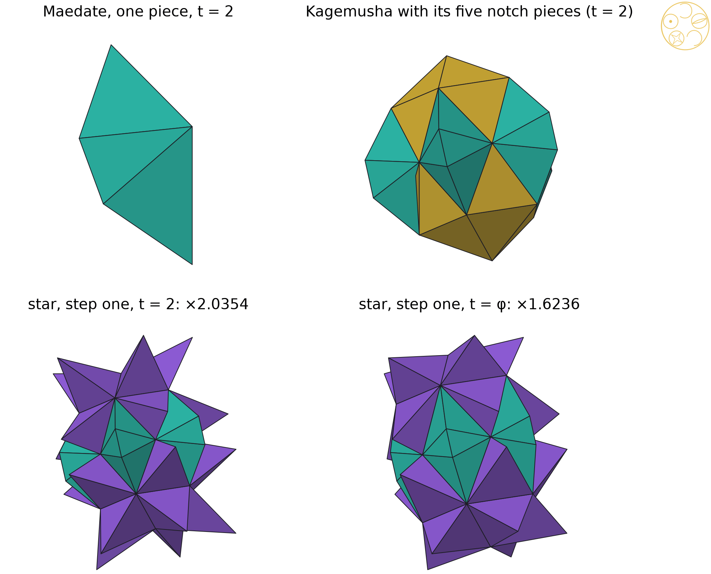
| Picture | Top: one piece (t = 2) and Kagemusha (gold) with its five notch pieces (teal); bottom: the star after step one at t = 2 and t = φ, cap spikes violet. |
|---|---|
| The piece (Ch. 5, Sect. 6) | one conjoined piece per notch, the hull of the notch edge, the two far corners of its faces and the two full step-one tips: a combinatorial octahedron (6 corners, 8 triangles), volume 0.2218 at t = 2 and 0.1248 at t = φ (Kagemusha = 1); outer edges 0.507, 0.764, 0.851 and 1 at t = 2 |
| Placed | in the five notches of Kagemusha (D86) at step one; no notch piece meets the solid or another piece; the surface after step one has 47 corners, 135 edges and 90 faces, closed, Euler characteristic 2 |
| Growth (Ch. 5, Sect. 6) | steps one to three, volume over the step before: t = 2: ×2.0354, ×1.3216, ×1.1368 (×3.058 in all); t = φ: ×1.6236, ×1.4830, ×1.1032 (×2.656); empty notches give ×2.563 and ×2.607 |
| Star after three steps | at t = 2 it is still growing: 177 corners, 340 faces (330 triangles, 10 quadrilaterals), symmetry of order 20 |
| Core of the turn (study, not in a paper) | the core rule of Chapter 3 at t = 2 gives a decagonal prism (10 quadrilaterals, 2 decagons, all corners on one sphere); the next turn has no core, its families of tips lying in planes: the sequence ends after one turn (study 2026-11-01-star-cores-d, kuwagata_cycle.py) |
| Name | DICTO's name, 1 November 2026: Maedate (前立, the front crest of a samurai helmet). Maedate makes Kagemusha grow most at t = 2 (Chapter 5, #85). |
DICTO's notch piece of Kagemusha (D86) · sloping bases · float64 study (2026-11-01-star-cores-d, kagemusha_variants.py) · picture: one piece (t = 2), Kagemusha (gold) with its five notch pieces (teal), the star after step one at t = 2 and t = φ
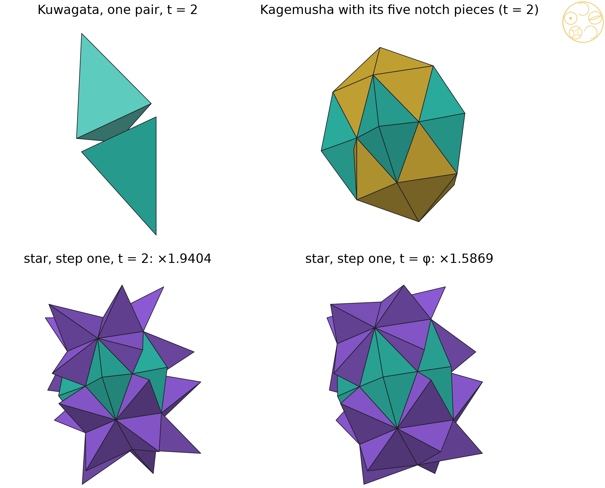
| The piece (Ch. 5, Sect. 6) | DICTO's sloping bases read for a notch: each notch face keeps a pyramid whose apex lies where the line from its far corner to its tip meets the notch's mirror plane, so the two meet face to face; the pair is a triangular dipyramid, 2 × 0.0752 at t = 2 and 2 × 0.0486 at t = φ (Kagemusha = 1); outer edges 0.729, 0.927 and 1 at t = 2 |
|---|---|
| Growth (Ch. 5, Sect. 6) | steps one to three, volume over the step before: t = 2: ×1.9404, ×1.3102, ×1.0000 (×2.542 in all); t = φ: ×1.5869, ×1.4521, ×1.1784 (×2.715); empty notches give ×2.563 and ×2.607 |
| Exact heights (from the book's own runs) | step two: all 80 spikes are cut back, each where it first touches its neighbour as the two are shortened together (a quadratic equation); the heights, as fractions s of the step (s = 2 full, s = 1 flat), take three exact values: 3√5/5 (20 spikes), 57/64 + ((1335 − 597√5)√(816129 + 364984√5) + 9√5)/320 ≈ 1.222678 (40) and 81/64 + ((270381 − 120897√5)√(11985980005 + 5360252664√5) − 6365529√5)/45265984 ≈ 1.112244 (20), each within 3.1 × 10⁻⁷ of the bisection, free just below and overlapping just above. Step three: the ten spikes that the bisection left at 7.5 × 10⁻⁹ touch an older piece at height exactly zero (a linear equation, s = 1), so they are flat; the other 230 were flat already in the float run. |
| Finished star (exact) | at t = 2 the star stops at step three exactly: step three adds nothing. The finished star has 122 corners, 320 edges and 200 faces (160 triangles, 40 quadrilaterals), Euler characteristic 2; its 40 pairs of coplanar triangles are proved coplanar exactly. No solid of DICTO Solids v7 has 122 corners, so it is similar to none of them: a new solid within v7. (The float study counted 132 corners and 250 faces, the ten flat spikes standing 7.5 × 10⁻⁹ high.) |
| Core of the turn (from the book's own runs) | the core rule of Chapter 3 at t = 2 on the exact finished star: first core 20 corners, 10 quadrilaterals, 2 decagons; the next turn has no core (float; symmetry of order 20) |
| Name | DICTO's name, 1 November 2026: Kuwagata (鍬形, the V-shaped horns of a samurai helmet). With Kuwagata the star of mirrored spikes reaches a finished form (Chapter 5, #85). |
Six stars, drawn large

DICTO GTI, the golden truncated icosahedron (D40, #38) · tips at the poles of the face planes, ρ² = φR² · Chapters 2 to 4

DICTO Ogdoecontahedron, OG (D28, #31) · ρ² = φR² · Chapters 2 and 4

DICTO OCD Stella (D29) · pyritohedral symmetry Th · ρ² = φR² · Chapters 2 and 3

Golden Clasp (D107), named by DICTO on 31 October 2026 · octahedral symmetry Oh · ρ² = φR²

DICTO Lahdeli (D77, #56) · DICTO's valley rule, t = 2, steps one to three · Chapters 2 and 5

Kagemusha (D86, #62) with DICTO's notch piece Kuwagata · t = 2, after step one · Chapter 5
One card for every shape, in the order of DICTO's numbers
Every card is one page for one of DICTO's shapes, in the order of his catalogue numbers. The heading gives the D-number and the name; the line below gives the symmetry, the counts of corners, edges and faces, whether the shape is convex, the number field in which it is exact, and the paper in which it first appeared. The picture has four panels, drawn solid with the faces coloured by family (kind of face and distance from the centre). For a convex shape: the solid; its star by the centre rule of Chapter 1, each tip at φ times the foot of its face's perpendicular; its star with polar spikes, each tip at the pole of its face plane in the sphere of radius ρ with ρ² = φR² (Chapter 2); and the halo of the polar spikes, the hull of their tips, which is the shape's polar. For a non-convex shape the polar rule is not decided, and the panels show the star by the centre rule at t = φ and t = 2 and the solid from two sides. Spikes on the faces with the most sides are violet, the others teal. Each panel has its own scale.
The rows give what the chapters prove or measure for the shape, each with the chapter it comes from. Exact data are those of DICTO Solids v7. "Centre rule" gives the group of Chapter 2, Table 1 (A, B, C or D) and the volume of the halo of the centre-rule tips. "Polar spikes" gives the halo and the count of layer pieces of the Main theorem of Chapter 2, at ρ² = φR², checked in float64 with no overlaps. "Core" gives the cycle of Chapter 3: its period, the turn at which it is entered and the two-turn length scale, exact. "Chain of T" gives the chain of Chapter 4 where it closes, with its exact gain, or the screening of Chapter 2, Table 3. "Building on the star" gives the growth under DICTO's valley rule over steps two and three (Chapter 2, Section 7), and "Valley law" the shape's sharpest dihedral angle, which by the Theorem of Chapter 5 decides whether its valleys stay open. Rows marked "from the book's own runs" report computations made for this book and not yet in a paper; rows marked "study" come from the studies behind Chapter 5. The four solids DICTO named on 31 October 2026, Cube Pearl (D106), Golden Clasp (D107), Hamlet (D108) and Ophelia (D109), were given the treatment for this book with the scripts of Chapters 2 to 4 unchanged. Where a chapter relies on a paper of Part I, The Golden Cycle, the chapter of Part I is named.
C2h (order 4) · 14 corners, 24 edges, 12 faces: 12 quadrilaterals · convex · exact in ℚ(√5) · , DICTO DOI 10.5281/zenodo.23173809
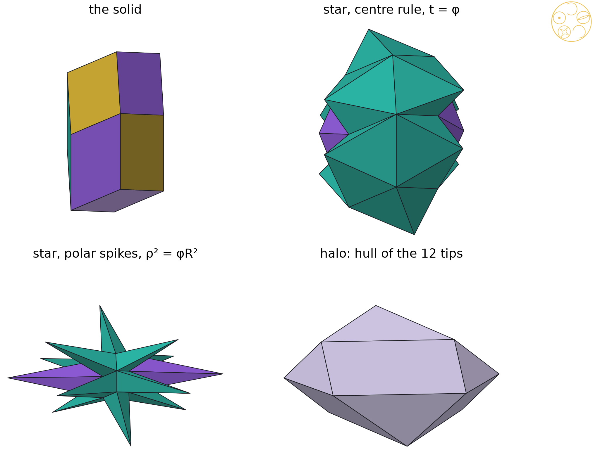
| Exact data | volume 3/2 + (1/2)√5 ≈ 2.618034; squared edge lengths 1 (×24) (DICTO Solids v7) |
|---|---|
| Centre rule (Ch. 2, Table 1) | group D: the star sticks out of its halo. Halo of the tips 1.2740 × the solid at t = φ, 2.4061 × at t = 2; 4 face families |
| Polar spikes (Ch. 2, Main theorem) | ρ² = φR²: the halo is the polar, 40.997 × the solid; the layer is 38 pieces, one pyramid per corner and one tetrahedron per edge, 0 overlaps, volumes adding up (ρ² = 2R²: halo 77.425 ×) |
| Core (Ch. 3) | no core at turn 1 (Proposition 3: the families of tips lie in a plane) |
| Chain of T (Ch. 2, Table 3) | not closed in eight steps (screened) |
| Building on the star (Ch. 2, Sect. 7) | DICTO's valley rule, volume added over steps two and three: ×1.21 at t = φ, ×1.94 at t = 2 |
| Valley law (Ch. 5, Theorem) | sharpest dihedral angle 79.19°: at most 120°, so a valley stays open through step two at t = 2 |
| Note (inventory) | new member of a known family (RD parallelohedra: Fedorov 1885; Lalvani US 5,623,790, 1997) |
C2h (order 4) · 18 corners, 28 edges, 12 faces: 8 quadrilaterals, 4 hexagons · convex · exact in ℚ(√5) · , DICTO DOI 10.5281/zenodo.23173809
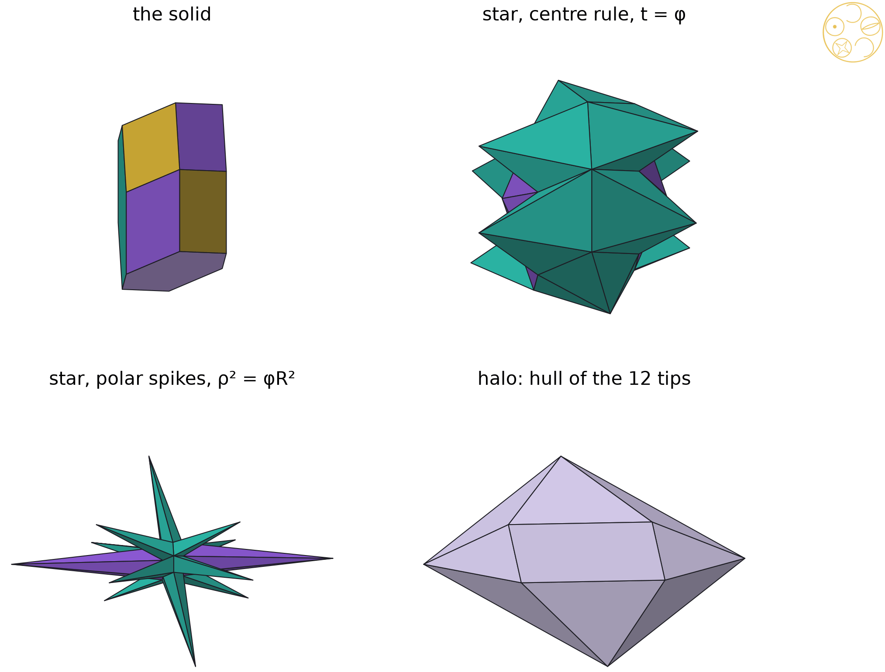
| Exact data | volume 7/2 + (1/2)√5 ≈ 4.618034; squared edge lengths 1 (×28) (DICTO Solids v7) |
|---|---|
| Centre rule (Ch. 2, Table 1) | group D: the star sticks out of its halo. Halo of the tips 1.5599 × the solid at t = φ, 2.9460 × at t = 2; 4 face families |
| Polar spikes (Ch. 2, Main theorem) | ρ² = φR²: the halo is the polar, 93.397 × the solid; the layer is 46 pieces, one pyramid per corner and one tetrahedron per edge, 0 overlaps, volumes adding up (ρ² = 2R²: halo 176.385 ×) |
| Core (Ch. 3) | no core at turn 1 (Proposition 3: the families of tips lie in a plane) |
| Chain of T (Ch. 2, Table 3) | not run |
| Building on the star (Ch. 2, Sect. 7) | DICTO's valley rule, volume added over steps two and three: ×1.13 at t = φ, ×2.41 at t = 2 |
| Valley law (Ch. 5, Theorem) | sharpest dihedral angle 79.19°: at most 120°, so a valley stays open through step two at t = 2 |
| Note (inventory) | new member of a known family (ED parallelohedra: Fedorov; Lalvani US 5,623,790) |
C2h (order 4) · 18 corners, 28 edges, 12 faces: 8 quadrilaterals, 4 hexagons · convex · exact in ℚ(√5) · , DICTO DOI 10.5281/zenodo.23173809
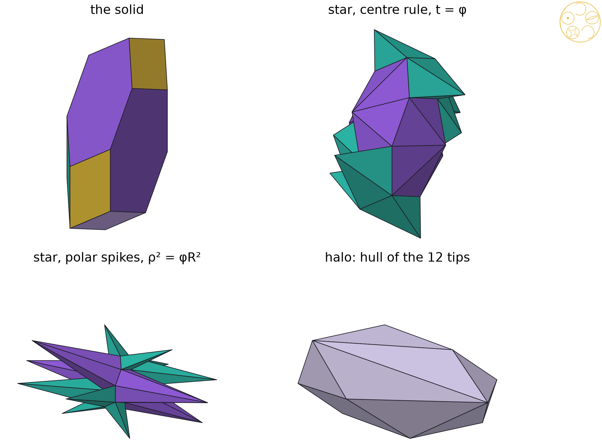
| Exact data | volume 5/2 + √5 ≈ 4.736068; squared edge lengths 1 (×28) (DICTO Solids v7) |
|---|---|
| Centre rule (Ch. 2, Table 1) | group D: the star sticks out of its halo. Halo of the tips 1.5775 × the solid at t = φ, 2.9793 × at t = 2; 4 face families |
| Polar spikes (Ch. 2, Main theorem) | ρ² = φR²: the halo is the polar, 47.275 × the solid; the layer is 46 pieces, one pyramid per corner and one tetrahedron per edge, 0 overlaps, volumes adding up (ρ² = 2R²: halo 89.280 ×) |
| Core (Ch. 3) | no core at turn 1 (Proposition 3: the families of tips lie in a plane) |
| Chain of T (Ch. 2, Table 3) | not run |
| Building on the star (Ch. 2, Sect. 7) | DICTO's valley rule, volume added over steps two and three: ×1.18 at t = φ, ×1.91 at t = 2 |
| Valley law (Ch. 5, Theorem) | sharpest dihedral angle 63.44°: at most 120°, so a valley stays open through step two at t = 2 |
| Note (inventory) | new member of a known family (ED parallelohedra: Fedorov; Lalvani US 5,623,790) |
Th (order 24) · 38 corners, 96 edges, 60 faces: 48 triangles, 12 quadrilaterals · non-convex · exact in ℚ(√5) · first in #41, DICTO DOI 10.5281/zenodo.23496353
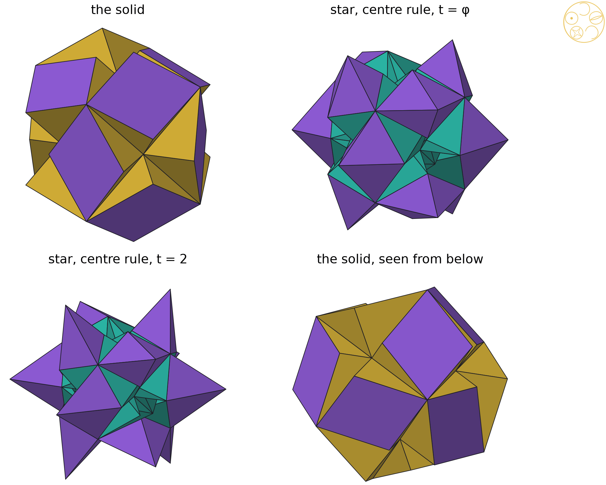
| Exact data | volume 3 + (3/2)√5 ≈ 6.354102; squared edge lengths 3/4 − (1/4)√5 (×12); 1/2 (×12); 1 (×48); 3/4 + (1/4)√5 (×24) (DICTO Solids v7) |
|---|---|
| Centre rule (Ch. 2, Table 1) | group C: the star lies inside its halo, but corner and edge pieces do not fill the layer. Halo of the tips 2.3344 × the solid at t = φ, 4.4086 × at t = 2; 2 face families |
| Polar spikes (Ch. 2) | not decided for non-convex shapes: the layer pieces can cut into the solid (Chapter 2, Section 9) |
| Core (Ch. 3) | not run: Chapter 3 treats the convex shapes |
| Building on the star (Ch. 2, Sect. 7) | DICTO's valley rule, volume added over steps two and three: ×1.61 at t = φ, ×2.46 at t = 2 |
| Valley law (Ch. 5, Theorem) | sharpest dihedral angle 79.19°: at most 120°, so a valley stays open through step two at t = 2 |
| Note (inventory) | not found in the sources checked (DICTO Solids v7 inventory) |
C3v (order 6) · 4 corners, 6 edges, 4 faces: 4 triangles · convex · exact in ℚ(√5) · first in #13, DICTO DOI 10.5281/zenodo.23284281
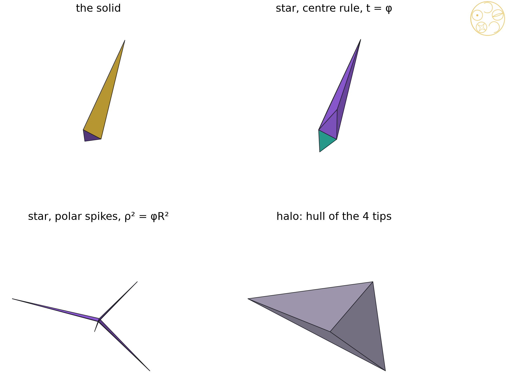
| Exact data | volume 3/40 − (19/600)√5 ≈ 0.004191; squared edge lengths 7/10 − (3/10)√5 (×3); 1 (×3) (DICTO Solids v7) |
|---|---|
| Centre rule (Ch. 2, Table 1) | group D: the star sticks out of its halo. Halo of the tips 0.1493 × the solid at t = φ, 0.2819 × at t = 2; 2 face families |
| Polar spikes (Ch. 2, Main theorem) | ρ² = φR²: the halo is the polar, 296388.001 × the solid; the layer is 10 pieces, one pyramid per corner and one tetrahedron per edge, 0 overlaps, volumes adding up (ρ² = 2R²: halo 559741.727 ×) |
| Core (Ch. 3) | no core at turn 1 (Proposition 3: the families of tips lie in a plane) |
| Chain of T (Ch. 2, Table 3) | not run: no centre fixed by every symmetry |
| Building on the star (Ch. 2, Sect. 7) | DICTO's valley rule, volume added over steps two and three: ×1.51 at t = φ, ×2.17 at t = 2 |
| Valley law (Ch. 5, Theorem) | sharpest dihedral angle 60.24°: at most 120°, so a valley stays open through step two at t = 2 |
| Note (inventory) | not found in the sources checked (DICTO Solids v7 inventory) |
Ih (order 120) · 80 corners, 180 edges, 102 faces: 60 triangles, 30 quadrilaterals, 12 pentagons · convex · exact in ℚ(√5) · first in #28, DICTO DOI 10.5281/zenodo.23360857
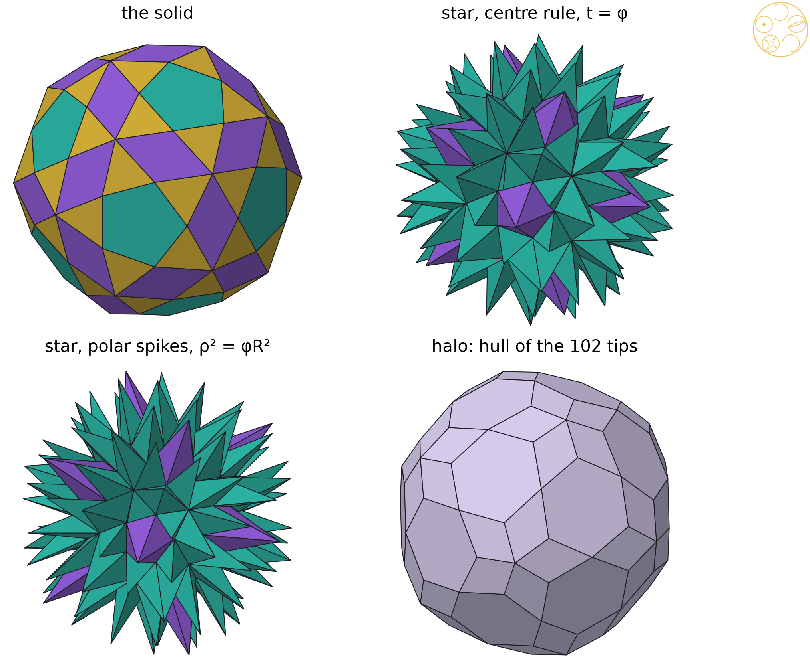
| Exact data | volume −365/4 + (189/4)√5 ≈ 14.404212; squared edge lengths 3/2 − (1/2)√5 (×60); 33/4 − (7/2)√5 (×120) (DICTO Solids v7) |
|---|---|
| Centre rule (Ch. 2, Table 1) | group B: the star fills its halo; the core does not come back to the shape itself. Halo of the tips 3.7949 × the solid at t = φ, 7.1669 × at t = 2; 3 face families |
| Polar spikes (Ch. 2, Main theorem) | ρ² = φR²: the halo is the polar, 5.806 × the solid; the layer is 260 pieces, one pyramid per corner and one tetrahedron per edge, 0 overlaps, volumes adding up (ρ² = 2R²: halo 10.964 ×) |
| Core (Ch. 3) | period two from turn 1 (the Theorem); two turns scale the core by t²·(5 + 2√5)/15 in length |
| Chain of T (Ch. 2, Table 3) | not run |
| Building on the star (Ch. 2, Sect. 7) | DICTO's valley rule, volume added over steps two and three: ×1.04 at t = φ, freezes at t = 2 (freezes: less than 0.1 per cent at step three) |
| Valley law (Ch. 5, Theorem) | sharpest dihedral angle 159.45°: blunter than 120°, so every valley at t = 2 is closed by step two |
| Note (inventory) | derived from a known solid (jtI with 12 five-fold corners cut flat; #28 V2); not found named |
Ih (order 120) · 102 corners, 180 edges, 80 faces: 60 quadrilaterals, 20 hexagons · convex · exact in ℚ(√5) · first in #31, DICTO DOI 10.5281/zenodo.23404688
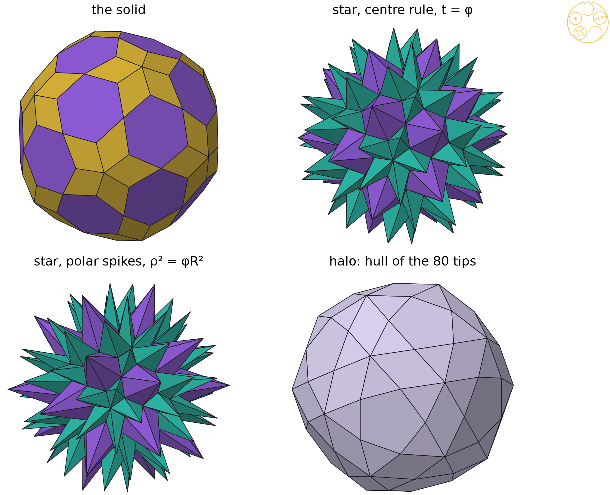
| Exact data | volume −1000/1539 + (1240/1539)√5 ≈ 1.151868; squared edge lengths 86/3249 + (2/361)√5 (×60); 2/9 − (2/27)√5 (×120) (DICTO Solids v7) |
|---|---|
| Centre rule (Ch. 2, Table 1) | group B: the star fills its halo; the core does not come back to the shape itself. Halo of the tips 3.8320 × the solid at t = φ, 7.2369 × at t = 2; 2 face families |
| Polar spikes (Ch. 2, Main theorem) | ρ² = φR²: the halo is the polar, 5.980 × the solid; the layer is 282 pieces, one pyramid per corner and one tetrahedron per edge, 0 overlaps, volumes adding up (ρ² = 2R²: halo 11.294 ×) |
| Core (Ch. 3) | period two from turn 1 (the Theorem); two turns scale the core by t²·(5 + 2√5)/15 in length |
| Chain of T (Ch. 2, Table 3) | not closed in eight steps (screened) |
| Building on the star (Ch. 2, Sect. 7) | DICTO's valley rule, volume added over steps two and three: ×1.03 at t = φ, freezes at t = 2 (freezes: less than 0.1 per cent at step three) |
| Valley law (Ch. 5, Theorem) | sharpest dihedral angle 156.20°: blunter than 120°, so every valley at t = 2 is closed by step two |
| Long chain (Ch. 4) | the chain of the Ogdoecontahedron runs OG → KRE → PHE → TPP → DPHP (#39; Part I, Chapter 11) → Hamlet → Ophelia and does not close within nine steps (Ch. 4, Sect. 6; Hamlet and Ophelia named by DICTO on 31 October 2026) |
| Note (inventory) | face arrangement known (dual of L0(D), Antiprism); derived from the canonical pentakis dodecahedron (#31 V2) |
Th (order 24) · 48 corners, 96 edges, 50 faces: 20 triangles, 24 quadrilaterals, 6 hexagons · convex · exact in ℚ(√5) · first in #31a, DICTO DOI 10.5281/zenodo.23430870
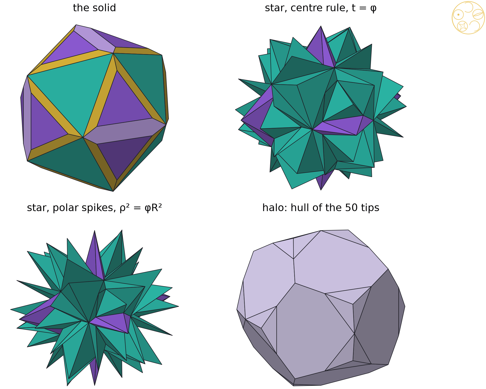
| Exact data | volume −4064/729 + (2240/729)√5 ≈ 1.296011; squared edge lengths 20/81 − (8/81)√5 (×36); 32/27 − (32/81)√5 (×36); 8/3 − (8/9)√5 (×24) (DICTO Solids v7) |
|---|---|
| Centre rule (Ch. 2, Table 1) | group C: the star lies inside its halo, but corner and edge pieces do not fill the layer. Halo of the tips 3.1922 × the solid at t = φ, 6.0286 × at t = 2; 4 face families |
| Polar spikes (Ch. 2, Main theorem) | ρ² = φR²: the halo is the polar, 8.649 × the solid; the layer is 144 pieces, one pyramid per corner and one tetrahedron per edge, 0 overlaps, volumes adding up (ρ² = 2R²: halo 16.333 ×) |
| DICTO's sloping bases (Ch. 2, Table 2) | t = φ: 96 corner pyramids and 96 edge tetrahedra, no overlaps; they fill the halo exactly |
| Core (Ch. 3) | period two from turn 1 (the Theorem); two turns scale the core by t²/3 in length |
| Chain of T (Ch. 2, Table 3) | not closed in eight steps (screened) |
| Building on the star (Ch. 2, Sect. 7) | DICTO's valley rule, volume added over steps two and three: freezes at t = φ, freezes at t = 2 (freezes: less than 0.1 per cent at step three) |
| Valley law (Ch. 5, Theorem) | sharpest dihedral angle 144.00°: blunter than 120°, so every valley at t = 2 is closed by step two |
| Note (inventory) | not found in the sources checked (DICTO Solids v7 inventory) |
Ih (order 120) · 32 corners, 90 edges, 60 faces: 60 triangles · convex · exact in ℚ(√5) · first in #35a (Part I, Chapter 9), DICTO DOI 10.5281/zenodo.23430864
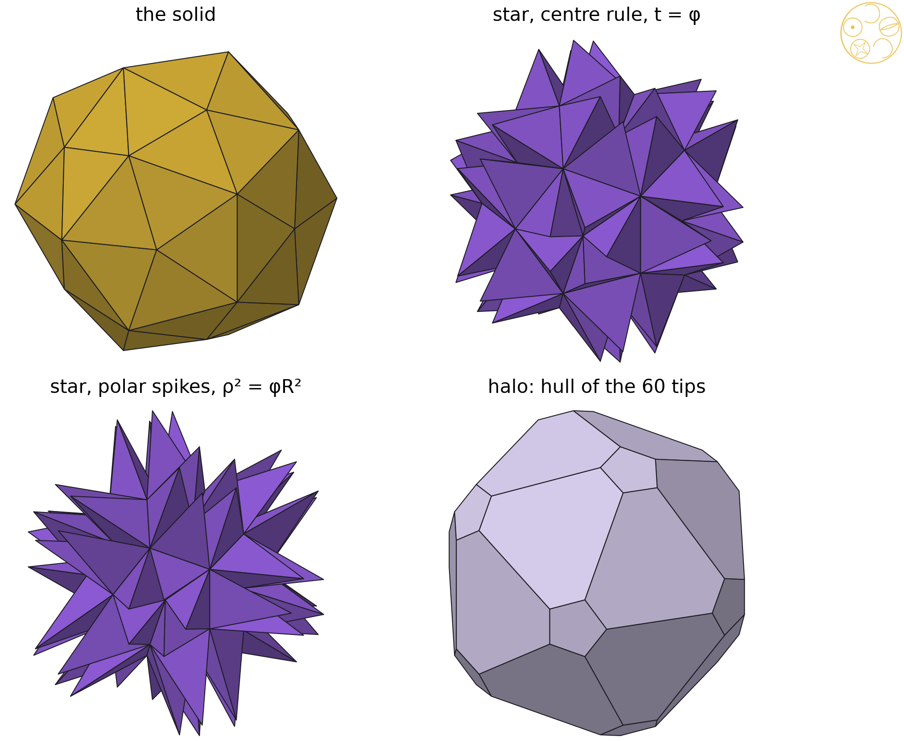
| Exact data | volume 410/27 + (550/81)√5 ≈ 30.368363; squared edge lengths 14/9 + (2/27)√5 (×60); 94/81 + (14/27)√5 (×30) (DICTO Solids v7) |
|---|---|
| Centre rule (Ch. 2, Table 1) | group B: the star fills its halo; the core does not come back to the shape itself. Halo of the tips 3.0267 × the solid at t = φ, 5.7160 × at t = 2; 1 face family |
| Polar spikes (Ch. 2, Main theorem) | ρ² = φR²: the halo is the polar, 6.769 × the solid; the layer is 122 pieces, one pyramid per corner and one tetrahedron per edge, 0 overlaps, volumes adding up (ρ² = 2R²: halo 12.783 ×) |
| Core (Ch. 3) | period two from turn 1 (the Theorem); two turns scale the core by t²·(5 + 2√5)/15 in length |
| Chain of T (Ch. 4, Table 1) | period four, radius gain 939725/9 − 140084√5/3 ≈ 1.440036 (norm 5·2081·2341/3⁴) |
| Building on the star (Ch. 2, Sect. 7) | DICTO's valley rule, volume added over steps two and three: ×1.29 at t = φ, freezes at t = 2 (freezes: less than 0.1 per cent at step three) |
| Valley law (Ch. 5, Theorem) | sharpest dihedral angle 138.81°: blunter than 120°, so every valley at t = 2 is closed by step two |
| Note (inventory) | new as a named, distinguished member; the dodecahedron-icosahedron hull family is known |
Ih (order 120) · 32 corners, 90 edges, 60 faces: 60 triangles · convex · exact in ℚ(√5) · first in #35b (Part I, Chapter 9), DICTO DOI 10.5281/zenodo.23430866
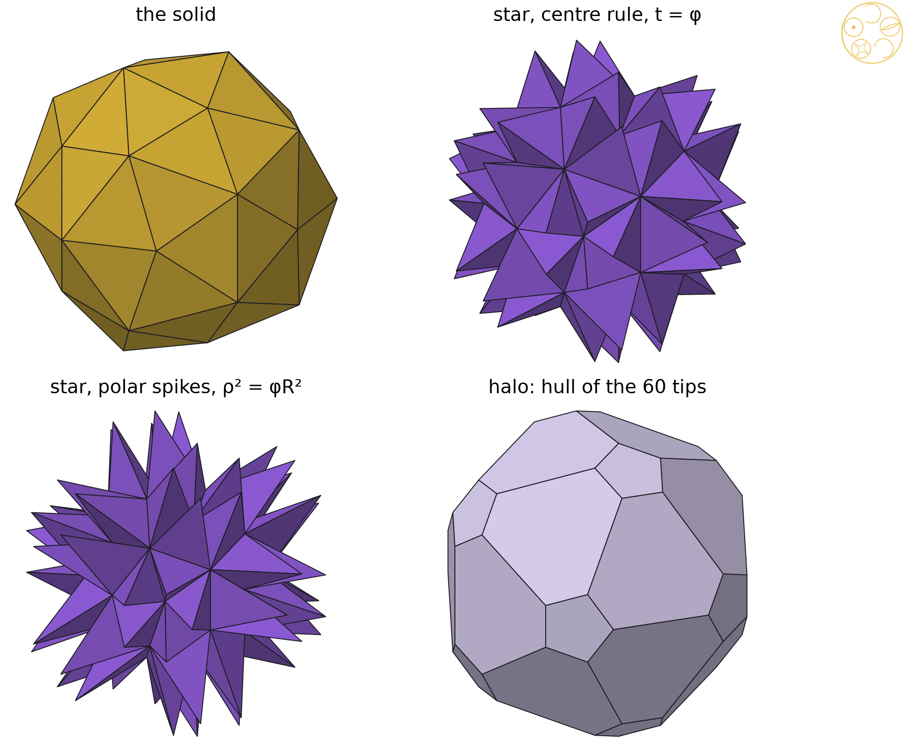
| Exact data | volume 50/3 + (50/9)√5 ≈ 29.089267; squared edge lengths 5/3 (×60); 20/9 (×30) (DICTO Solids v7) |
|---|---|
| Centre rule (Ch. 2, Table 1) | group B: the star fills its halo; the core does not come back to the shape itself. Halo of the tips 3.1842 × the solid at t = φ, 6.0136 × at t = 2; 1 face family |
| Polar spikes (Ch. 2, Main theorem) | ρ² = φR²: the halo is the polar, 6.572 × the solid; the layer is 122 pieces, one pyramid per corner and one tetrahedron per edge, 0 overlaps, volumes adding up (ρ² = 2R²: halo 12.412 ×) |
| Core (Ch. 3) | period two from turn 1 (the Theorem); two turns scale the core by t²·(5 + 2√5)/15 in length |
| Chain of T (Ch. 4, Table 1) | period four, radius gain 35 − 15√5 = 10/φ⁴ ≈ 1.458980 |
| Building on the star (Ch. 2, Sect. 7) | DICTO's valley rule, volume added over steps two and three: freezes at t = φ, freezes at t = 2 (freezes: less than 0.1 per cent at step three) |
| Valley law (Ch. 5, Theorem) | sharpest dihedral angle 143.13°: blunter than 120°, so every valley at t = 2 is closed by step two |
| Same shape | one shape with the FPD (D41), found in the survey of the approved plan (30 October 2026): DICTO's decision keeps FPD, the first name (#38; Part I, Chapter 10), with "Palintriacontahedron" noted as its other name; the two cards show the same numbers |
| Note (inventory) | new as a named, distinguished member; the dodecahedron-icosahedron hull family is known |
D3d (order 12) · 30 corners, 60 edges, 32 faces: 8 triangles, 24 quadrilaterals · convex · exact in ℚ(√5) · first in #37a, DICTO DOI 10.5281/zenodo.23484012
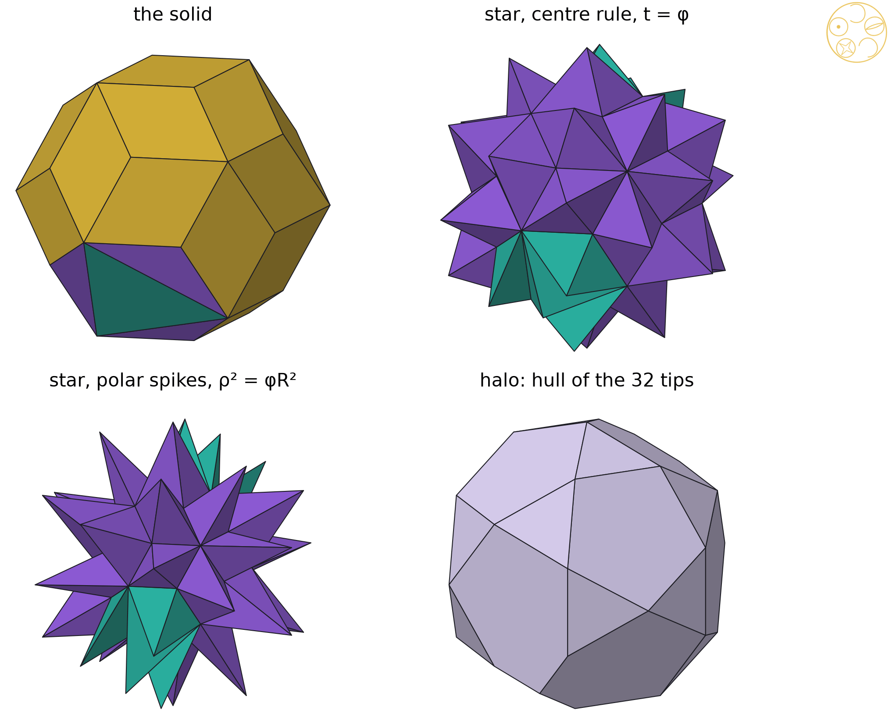
| Exact data | volume −872/81 + (440/81)√5 ≈ 1.381110; squared edge lengths 20/9 − (8/9)√5 (×54); 8/3 − (8/9)√5 (×6) (DICTO Solids v7) |
|---|---|
| Centre rule (Ch. 2, Table 1) | group C: the star lies inside its halo, but corner and edge pieces do not fill the layer. Halo of the tips 2.9682 × the solid at t = φ, 5.6056 × at t = 2; 3 face families |
| Polar spikes (Ch. 2, Main theorem) | ρ² = φR²: the halo is the polar, 7.870 × the solid; the layer is 90 pieces, one pyramid per corner and one tetrahedron per edge, 0 overlaps, volumes adding up (ρ² = 2R²: halo 14.863 ×) |
| DICTO's sloping bases (Ch. 2, Table 2) | t = φ: 60 corner pyramids and 60 edge tetrahedra, no overlaps; they fill the halo exactly |
| Core (Ch. 3) | period two from turn 2 (the one exception to the Theorem, computed); two turns scale the core by t²·(17 − 5√5)/82 in length |
| Chain of T (Ch. 2, Table 3) | not closed in eight steps (screened) |
| Building on the star (Ch. 2, Sect. 7) | DICTO's valley rule, volume added over steps two and three: freezes at t = φ, freezes at t = 2 (freezes: less than 0.1 per cent at step three) |
| Valley law (Ch. 5, Theorem) | sharpest dihedral angle 144.00°: blunter than 120°, so every valley at t = 2 is closed by step two |
| Note (inventory) | not found in the sources checked (DICTO Solids v7 inventory) |
Th (order 24) · 24 corners, 60 edges, 38 faces: 32 triangles, 6 quadrilaterals · convex · exact in ℚ(√5) · first in #37a, DICTO DOI 10.5281/zenodo.23484012
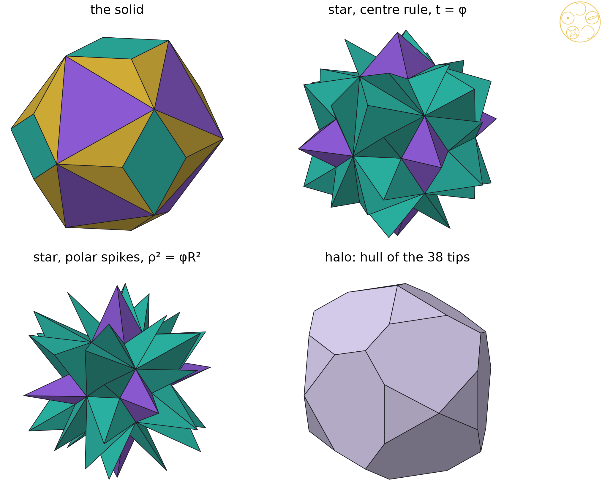
| Exact data | volume −608/81 + (320/81)√5 ≈ 1.327676; squared edge lengths 20/9 − (8/9)√5 (×36); 8/3 − (8/9)√5 (×24) (DICTO Solids v7) |
|---|---|
| Centre rule (Ch. 2, Table 1) | group C: the star lies inside its halo, but corner and edge pieces do not fill the layer. Halo of the tips 3.0877 × the solid at t = φ, 5.8312 × at t = 2; 3 face families |
| Polar spikes (Ch. 2, Main theorem) | ρ² = φR²: the halo is the polar, 8.299 × the solid; the layer is 84 pieces, one pyramid per corner and one tetrahedron per edge, 0 overlaps, volumes adding up (ρ² = 2R²: halo 15.674 ×) |
| DICTO's sloping bases (Ch. 2, Table 2) | t = φ: 72 corner pyramids and 60 edge tetrahedra, no overlaps; they fill the halo exactly |
| Core (Ch. 3) | period two from turn 1 (the Theorem); two turns scale the core by t²/3 in length |
| Chain of T (Ch. 2, Table 3) | not closed in eight steps (screened) |
| Building on the star (Ch. 2, Sect. 7) | DICTO's valley rule, volume added over steps two and three: freezes at t = φ, freezes at t = 2 (freezes: less than 0.1 per cent at step three) |
| Valley law (Ch. 5, Theorem) | sharpest dihedral angle 144.00°: blunter than 120°, so every valley at t = 2 is closed by step two |
| Note (inventory) | not found (closest: Kabai 54-faced) |
Ih (order 120) · 60 corners, 90 edges, 32 faces: 12 pentagons, 20 hexagons · convex · exact in ℚ(√5) · first in #38 (Part I, Chapter 10), DICTO DOI 10.5281/zenodo.23463305
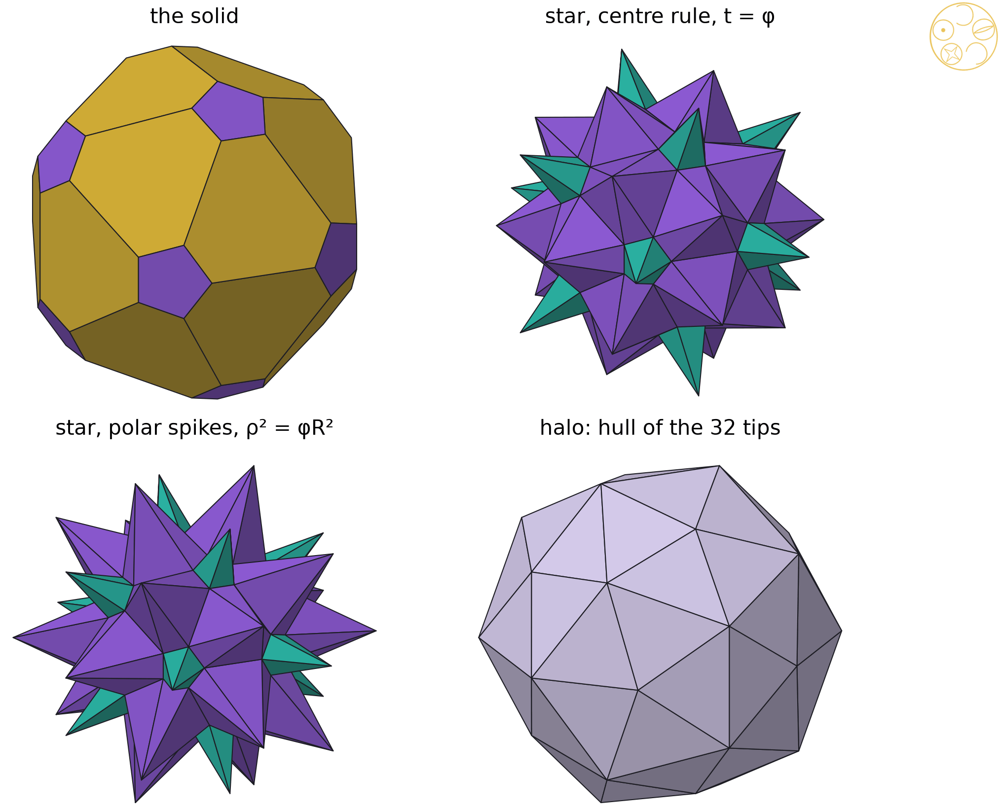
| Exact data | volume 85/2 − (15/2)√5 ≈ 25.729490; squared edge lengths 45 − 20√5 (×60); 6 − 2√5 (×30) (DICTO Solids v7) |
|---|---|
| Centre rule (Ch. 2, Table 1) | group A: the star fills its halo and the core comes back to the shape. Halo of the tips 3.2928 × the solid at t = φ, 6.2185 × at t = 2; 2 face families |
| Polar spikes (Ch. 2, Main theorem) | ρ² = φR²: the halo is the polar, 5.635 × the solid; the layer is 150 pieces, one pyramid per corner and one tetrahedron per edge, 0 overlaps, volumes adding up (ρ² = 2R²: halo 10.643 ×) |
| Core (Ch. 3) | period two at once (the Theorem); two turns scale the core by t²·(5 + 2√5)/15 in length |
| Chain of T (Ch. 4, Table 1) | period four, radius gain 35 − 15√5 = 10/φ⁴ ≈ 1.458980 |
| Building on the star (Ch. 2, Sect. 7) | DICTO's valley rule, volume added over steps two and three: ×1.61 at t = φ, freezes at t = 2 (freezes: less than 0.1 per cent at step three) |
| Valley law (Ch. 5, Theorem) | sharpest dihedral angle 138.19°: blunter than 120°, so every valley at t = 2 is closed by step two |
| Note (inventory) | cycle and pieces not found; Bergman US 4,719,726 has octet-like shells |
Ih (order 120) · 32 corners, 90 edges, 60 faces: 60 triangles · convex · exact in ℚ(√5) · first in #38 (Part I, Chapter 10), DICTO DOI 10.5281/zenodo.23463305

| Exact data | volume 130000/9 − (58000/9)√5 ≈ 34.228589; squared edge lengths 300 − (400/3)√5 (×60); 400 − (1600/9)√5 (×30) (DICTO Solids v7) |
|---|---|
| Centre rule (Ch. 2, Table 1) | group B: the star fills its halo; the core does not come back to the shape itself. Halo of the tips 3.1842 × the solid at t = φ, 6.0136 × at t = 2; 1 face family |
| Polar spikes (Ch. 2, Main theorem) | ρ² = φR²: the halo is the polar, 6.572 × the solid; the layer is 122 pieces, one pyramid per corner and one tetrahedron per edge, 0 overlaps, volumes adding up (ρ² = 2R²: halo 12.412 ×) |
| Core (Ch. 3) | period two from turn 1 (the Theorem); two turns scale the core by t²·(5 + 2√5)/15 in length |
| Chain of T (Ch. 4, Table 1) | period four, radius gain 35 − 15√5 = 10/φ⁴ ≈ 1.458980 |
| Building on the star (Ch. 2, Sect. 7) | DICTO's valley rule, volume added over steps two and three: freezes at t = φ, freezes at t = 2 (freezes: less than 0.1 per cent at step three) |
| Valley law (Ch. 5, Theorem) | sharpest dihedral angle 143.13°: blunter than 120°, so every valley at t = 2 is closed by step two |
| Same shape | one shape with the Palintriacontahedron (D31), found in the survey of the approved plan (30 October 2026): DICTO's decision keeps FPD, the first name (#38; Part I, Chapter 10), with "Palintriacontahedron" noted as its other name; the two cards show the same numbers |
Ih (order 120) · 92 corners, 180 edges, 90 faces: 90 quadrilaterals · convex · exact in ℚ(√5) · first in #39 (Part I, Chapter 11), DICTO DOI 10.5281/zenodo.23488944
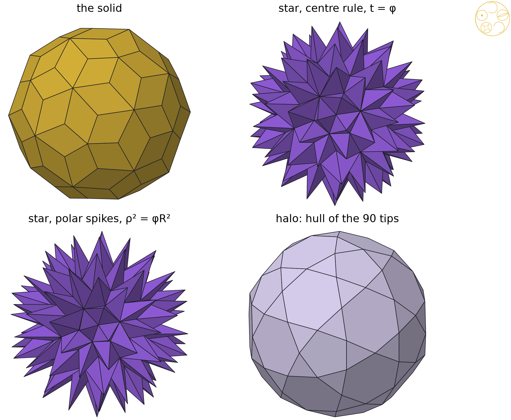
| Exact data | volume 920/57 + (20/19)√5 ≈ 18.494107; squared edge lengths 1505/6498 + (35/722)√5 (×60); 29/18 − (1/2)√5 (×120) (DICTO Solids v7) |
|---|---|
| Centre rule (Ch. 2, Table 1) | group B: the star fills its halo; the core does not come back to the shape itself. Halo of the tips 3.7098 × the solid at t = φ, 7.0061 × at t = 2; 1 face family |
| Polar spikes (Ch. 2, Main theorem) | ρ² = φR²: the halo is the polar, 5.582 × the solid; the layer is 272 pieces, one pyramid per corner and one tetrahedron per edge, 0 overlaps, volumes adding up (ρ² = 2R²: halo 10.542 ×) |
| Core (Ch. 3) | period two from turn 2 (the Theorem); two turns scale the core by t²·(5 + 2√5)/15 in length |
| Chain of T (Ch. 2, Table 3) | not run |
| Building on the star (Ch. 2, Sect. 7) | DICTO's valley rule, volume added over steps two and three: ×1.04 at t = φ, freezes at t = 2 (freezes: less than 0.1 per cent at step three) |
| Valley law (Ch. 5, Theorem) | sharpest dihedral angle 159.45°: blunter than 120°, so every valley at t = 2 is closed by step two |
| Long chain (Ch. 4) | the chain of the Ogdoecontahedron runs OG → KRE → PHE → TPP → DPHP (#39; Part I, Chapter 11) → Hamlet → Ophelia and does not close within nine steps (Ch. 4, Sect. 6; Hamlet and Ophelia named by DICTO on 31 October 2026) |
| Note (inventory) | combinatorics of the rhombic enneacontahedron (known type); this metric solid new |
Ih (order 120) · 180 corners, 270 edges, 92 faces: 12 pentagons, 80 hexagons · convex · exact in ℚ(√5) · first in #39 (Part I, Chapter 11), DICTO DOI 10.5281/zenodo.23488944
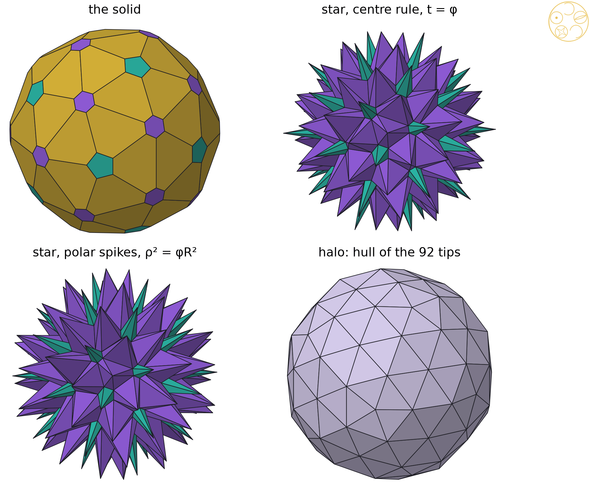
| Exact data | volume 95875/4617 − (520/1539)√5 ≈ 20.010122; squared edge lengths 1/27 (×120); 35/18 − (5/6)√5 (×60); 482/1083 + (34/3249)√5 (×60); 140/27 − (160/81)√5 (×30) (DICTO Solids v7) |
|---|---|
| Centre rule (Ch. 2, Table 1) | group B: the star fills its halo; the core does not come back to the shape itself. Halo of the tips 3.9151 × the solid at t = φ, 7.3939 × at t = 2; 3 face families |
| Polar spikes (Ch. 2, Main theorem) | ρ² = φR²: the halo is the polar, 4.982 × the solid; the layer is 450 pieces, one pyramid per corner and one tetrahedron per edge, 0 overlaps, volumes adding up (ρ² = 2R²: halo 9.408 ×) |
| Core (Ch. 3) | period two from turn 1 (the Theorem); two turns scale the core by t²·(5 + 2√5)/15 in length |
| Chain of T (Ch. 2, Table 3) | not run |
| Building on the star (Ch. 2, Sect. 7) | DICTO's valley rule, volume added over steps two and three: freezes at t = φ, ×1.08 at t = 2 (freezes: less than 0.1 per cent at step three) |
| Valley law (Ch. 5, Theorem) | sharpest dihedral angle 156.20°: blunter than 120°, so every valley at t = 2 is closed by step two |
| Long chain (Ch. 4) | the chain of the Ogdoecontahedron runs OG → KRE → PHE → TPP → DPHP (#39; Part I, Chapter 11) → Hamlet → Ophelia and does not close within nine steps (Ch. 4, Sect. 6; Hamlet and Ophelia named by DICTO on 31 October 2026) |
| Note (inventory) | face counts of Goldberg GP(3,0); this solid new |
Ih (order 120) · 212 corners, 390 edges, 180 faces: 60 triangles, 120 pentagons · convex · exact in ℚ(√5) · first in #39 (Part I, Chapter 11), DICTO DOI 10.5281/zenodo.23488944
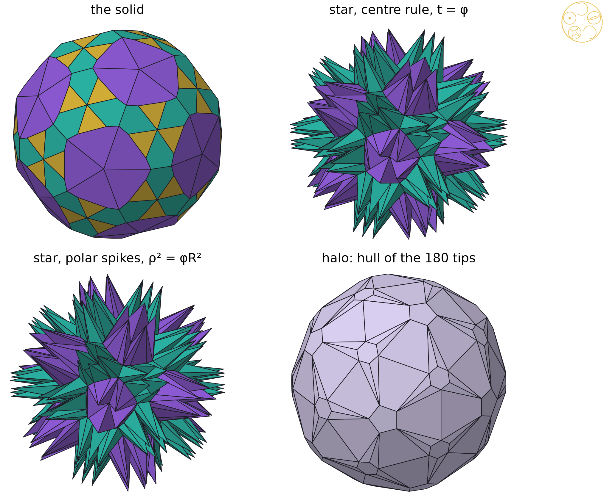
| Exact data | volume −1142247902494640/32258276241813 + (10284735282640/398250323973)√5 ≈ 22.336558; squared edge lengths 5 kinds, from 0.0441 to 0.6266 (DICTO Solids v7) |
|---|---|
| Centre rule (Ch. 2, Table 1) | group B: the star fills its halo; the core does not come back to the shape itself. Halo of the tips 3.7949 × the solid at t = φ, 7.1668 × at t = 2; 3 face families |
| Polar spikes (Ch. 2, Main theorem) | ρ² = φR²: the halo is the polar, 5.034 × the solid; the layer is 602 pieces, one pyramid per corner and one tetrahedron per edge, 0 overlaps, volumes adding up (ρ² = 2R²: halo 9.508 ×) |
| Core (Ch. 3) | period two from turn 2 (the Theorem); two turns scale the core by t²·(5 + 2√5)/15 in length |
| Chain of T (Ch. 2, Table 3) | not run |
| Building on the star (Ch. 2, Sect. 7) | DICTO's valley rule, volume added over steps two and three: freezes at t = φ, freezes at t = 2 (freezes: less than 0.1 per cent at step three) |
| Valley law (Ch. 5, Theorem) | sharpest dihedral angle 150.87°: blunter than 120°, so every valley at t = 2 is closed by step two |
| Long chain (Ch. 4) | the chain of the Ogdoecontahedron runs OG → KRE → PHE → TPP → DPHP (#39; Part I, Chapter 11) → Hamlet → Ophelia and does not close within nine steps (Ch. 4, Sect. 6; Hamlet and Ophelia named by DICTO on 31 October 2026) |
| Note (inventory) | not found in the sources checked (DICTO Solids v7 inventory) |
Ih (order 120) · 270 corners, 420 edges, 152 faces: 120 pentagons, 20 hexagons, 12 decagons · convex · exact in ℚ(√5) · first in #39 (Part I, Chapter 11), DICTO DOI 10.5281/zenodo.23488944
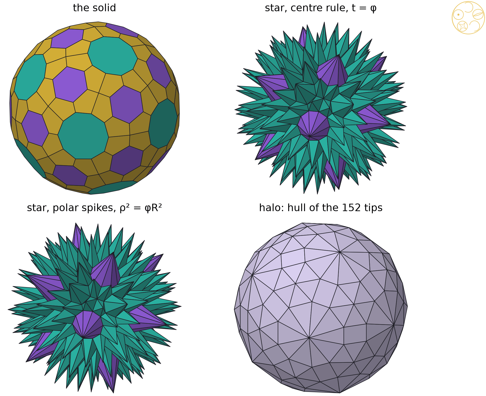
| Exact data | volume ≈ 23.543403 (exact value in DICTO Solids v7, too long to print here); squared edge lengths 5 kinds, from 0.0464 to 0.2125 (DICTO Solids v7) |
|---|---|
| Centre rule (Ch. 2, Table 1) | group B: the star fills its halo; the core does not come back to the shape itself. Halo of the tips 3.9859 × the solid at t = φ, 7.5275 × at t = 2; 3 face families |
| Polar spikes (Ch. 2, Main theorem) | ρ² = φR²: the halo is the polar, 4.594 × the solid; the layer is 690 pieces, one pyramid per corner and one tetrahedron per edge, 0 overlaps, volumes adding up (ρ² = 2R²: halo 8.677 ×) |
| Core (Ch. 3) | period two from turn 1 (the Theorem); two turns scale the core by t²·(5 + 2√5)/15 in length |
| Chain of T (Ch. 2, Table 3) | not run |
| Building on the star (Ch. 2, Sect. 7) | DICTO's valley rule, volume added over steps two and three: ×1.10 at t = φ, freezes at t = 2 (freezes: less than 0.1 per cent at step three) |
| Valley law (Ch. 5, Theorem) | sharpest dihedral angle 155.87°: blunter than 120°, so every valley at t = 2 is closed by step two |
| Long chain (Ch. 4) | the chain of the Ogdoecontahedron runs OG → KRE → PHE → TPP → DPHP (#39; Part I, Chapter 11) → Hamlet → Ophelia and does not close within nine steps (Ch. 4, Sect. 6; Hamlet and Ophelia named by DICTO on 31 October 2026) |
| Note (inventory) | not found in the sources checked (DICTO Solids v7 inventory) |
Ih (order 120) · 80 corners, 210 edges, 132 faces: 120 triangles, 12 pentagons · convex · exact in ℚ(√5) · first in #39 (Part I, Chapter 11), DICTO DOI 10.5281/zenodo.23488944
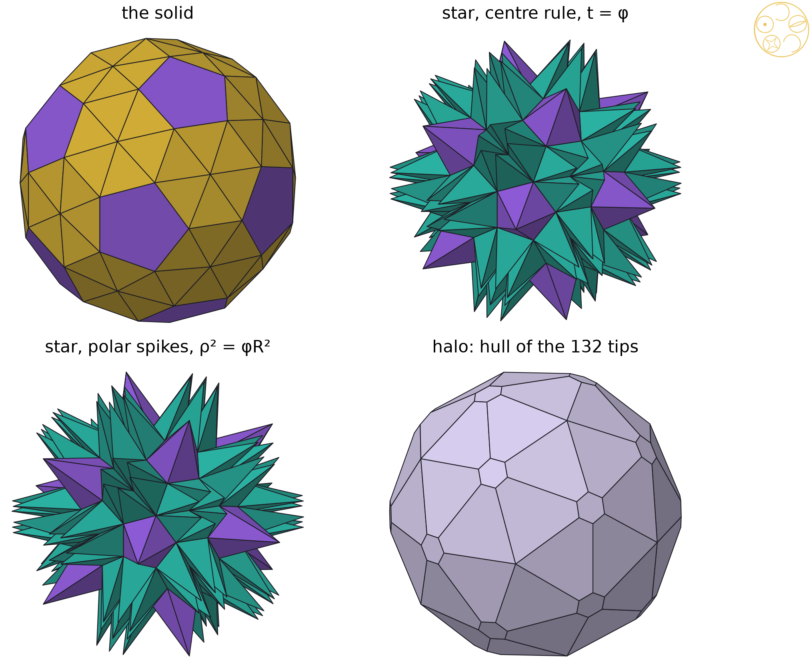
| Exact data | volume 10437930/1295029 + (3959694/1295029)√5 ≈ 14.897022; squared edge lengths 4014/11881 + (378/11881)√5 (×90); 223/654 + (7/218)√5 (×120) (DICTO Solids v7) |
|---|---|
| Centre rule (Ch. 2, Table 1) | group B: the star fills its halo; the core does not come back to the shape itself. Halo of the tips 3.6071 × the solid at t = φ, 6.8122 × at t = 2; 2 face families |
| Polar spikes (Ch. 2, Main theorem) | ρ² = φR²: the halo is the polar, 5.033 × the solid; the layer is 290 pieces, one pyramid per corner and one tetrahedron per edge, 0 overlaps, volumes adding up (ρ² = 2R²: halo 9.505 ×) |
| Core (Ch. 3) | period two from turn 1 (the Theorem); two turns scale the core by t²·(5 + 2√5)/15 in length |
| Chain of T (Ch. 2, Table 3) | not closed in eight steps (screened) |
| Building on the star (Ch. 2, Sect. 7) | DICTO's valley rule, volume added over steps two and three: freezes at t = φ, freezes at t = 2 (freezes: less than 0.1 per cent at step three) |
| Valley law (Ch. 5, Theorem) | sharpest dihedral angle 148.96°: blunter than 120°, so every valley at t = 2 is closed by step two |
| Long chain (#39) | the chain of T runs TQHD → TQP → TQH → TPH → OG through DICTO's named solids (#39; Part I, Chapter 11), then on as the chain of the Ogdoecontahedron |
| Note (inventory) | not found in the sources checked (DICTO Solids v7 inventory) |
Ih (order 120) · 132 corners, 270 edges, 140 faces: 60 triangles, 60 quadrilaterals, 20 hexagons · convex · exact in ℚ(√5) · first in #39 (Part I, Chapter 11), DICTO DOI 10.5281/zenodo.23488944
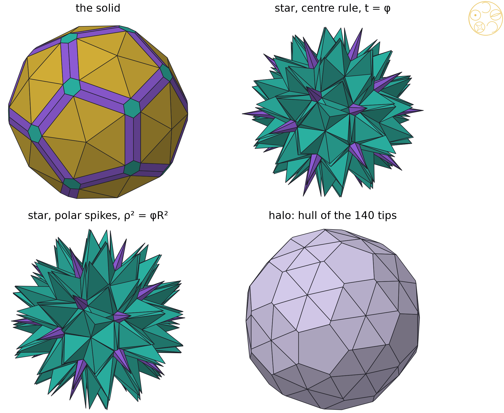
| Exact data | volume 770805045/120198224 + (337172409/120198224)√5 ≈ 12.685258; squared edge lengths 189/13448 + (81/13448)√5 (×120); 1215/3362 + (315/3362)√5 (×30); 827847/1948484 + (939303/9742420)√5 (×60); 81/164 + (252/1681)√5 (×60) (DICTO Solids v7) |
|---|---|
| Centre rule (Ch. 2, Table 1) | group B: the star fills its halo; the core does not come back to the shape itself. Halo of the tips 3.8912 × the solid at t = φ, 7.3486 × at t = 2; 3 face families |
| Polar spikes (Ch. 2, Main theorem) | ρ² = φR²: the halo is the polar, 5.045 × the solid; the layer is 402 pieces, one pyramid per corner and one tetrahedron per edge, 0 overlaps, volumes adding up (ρ² = 2R²: halo 9.528 ×) |
| Core (Ch. 3) | period two from turn 1 (the Theorem); two turns scale the core by t²·(5 + 2√5)/15 in length |
| Chain of T (Ch. 2, Table 3) | not closed in eight steps (screened) |
| Building on the star (Ch. 2, Sect. 7) | DICTO's valley rule, volume added over steps two and three: freezes at t = φ, freezes at t = 2 (freezes: less than 0.1 per cent at step three) |
| Valley law (Ch. 5, Theorem) | sharpest dihedral angle 156.20°: blunter than 120°, so every valley at t = 2 is closed by step two |
| Long chain (#39) | the chain of T runs TQHD → TQP → TQH → TPH → OG through DICTO's named solids (#39; Part I, Chapter 11), then on as the chain of the Ogdoecontahedron |
| Note (inventory) | not found in the sources checked (DICTO Solids v7 inventory) |
Ih (order 120) · 140 corners, 300 edges, 162 faces: 60 triangles, 90 quadrilaterals, 12 pentagons · convex · exact in ℚ(√5) · first in #39 (Part I, Chapter 11), DICTO DOI 10.5281/zenodo.23488944
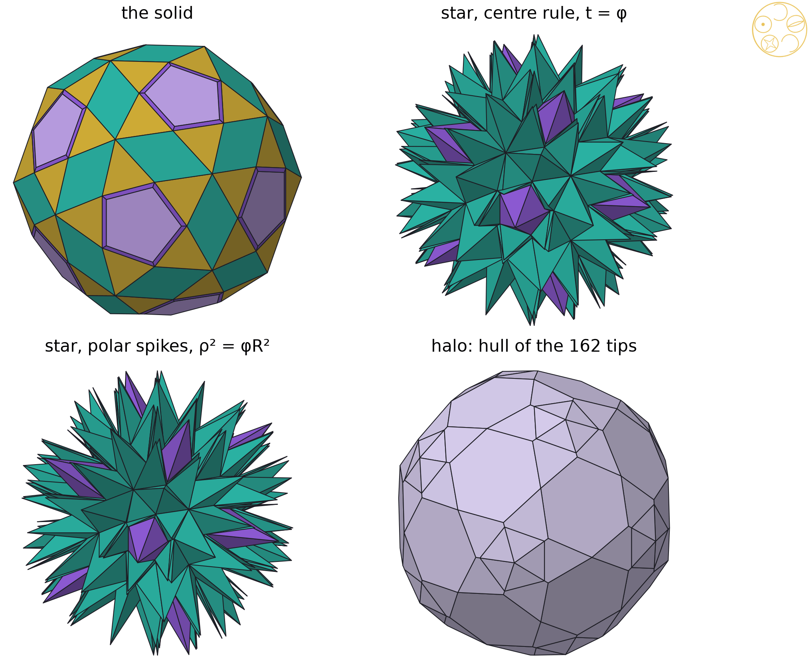
| Exact data | volume ≈ 11.652426 (exact value in DICTO Solids v7, too long to print here); squared edge lengths 29532033/7137404968 − (2929437/7137404968)√5 (×60); 39277227780/281686009081 + (15126403680/281686009081)√5 (×60); 567/3362 + (243/3362)√5 (×60); 1377/6724 + (243/3362)√5 (×120) (DICTO Solids v7) |
|---|---|
| Centre rule (Ch. 2, Table 1) | group B: the star fills its halo; the core does not come back to the shape itself. Halo of the tips 3.7883 × the solid at t = φ, 7.1544 × at t = 2; 4 face families |
| Polar spikes (Ch. 2, Main theorem) | ρ² = φR²: the halo is the polar, 5.762 × the solid; the layer is 440 pieces, one pyramid per corner and one tetrahedron per edge, 0 overlaps, volumes adding up (ρ² = 2R²: halo 10.882 ×) |
| Core (Ch. 3) | period two from turn 1 (the Theorem); two turns scale the core by t²·(5 + 2√5)/15 in length |
| Chain of T (Ch. 2, Table 3) | not closed in eight steps (screened) |
| Building on the star (Ch. 2, Sect. 7) | DICTO's valley rule, volume added over steps two and three: ×1.04 at t = φ, freezes at t = 2 (freezes: less than 0.1 per cent at step three) |
| Valley law (Ch. 5, Theorem) | sharpest dihedral angle 159.45°: blunter than 120°, so every valley at t = 2 is closed by step two |
| Long chain (#39) | the chain of T runs TQHD → TQP → TQH → TPH → OG through DICTO's named solids (#39; Part I, Chapter 11), then on as the chain of the Ogdoecontahedron |
| Note (inventory) | not found in the sources checked (DICTO Solids v7 inventory) |
Ih (order 120) · 162 corners, 360 edges, 200 faces: 120 triangles, 60 quadrilaterals, 20 hexagons · convex · exact in ℚ(√5) · first in #39 (Part I, Chapter 11), DICTO DOI 10.5281/zenodo.23488944
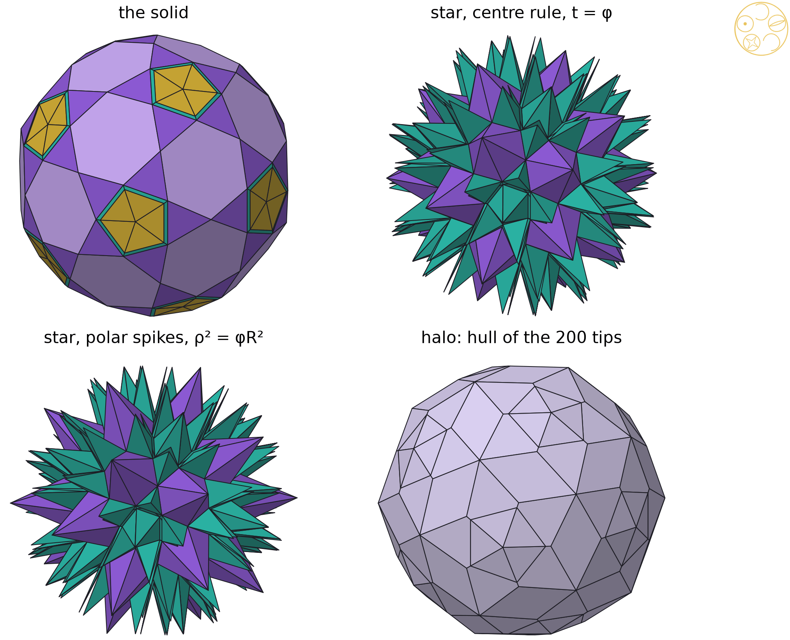
| Exact data | volume ≈ 10.420802 (exact value in DICTO Solids v7, too long to print here); squared edge lengths 5 kinds, from 0.0020 to 0.2477 (DICTO Solids v7) |
|---|---|
| Centre rule (Ch. 2, Table 1) | group B: the star fills its halo; the core does not come back to the shape itself. Halo of the tips 3.9599 × the solid at t = φ, 7.4784 × at t = 2; 4 face families |
| Polar spikes (Ch. 2, Main theorem) | ρ² = φR²: the halo is the polar, 4.807 × the solid; the layer is 522 pieces, one pyramid per corner and one tetrahedron per edge, 0 overlaps, volumes adding up (ρ² = 2R²: halo 9.078 ×) |
| Core (Ch. 3) | period two from turn 1 (the Theorem); two turns scale the core by t²·(5 + 2√5)/15 in length |
| Chain of T (Ch. 2, Table 3) | not closed in eight steps (screened) |
| Building on the star (Ch. 2, Sect. 7) | DICTO's valley rule, volume added over steps two and three: freezes at t = φ, freezes at t = 2 (freezes: less than 0.1 per cent at step three) |
| Valley law (Ch. 5, Theorem) | sharpest dihedral angle 156.20°: blunter than 120°, so every valley at t = 2 is closed by step two |
| Long chain (#39) | the chain of T runs TQHD → TQP → TQH → TPH → OG through DICTO's named solids (#39; Part I, Chapter 11), then on as the chain of the Ogdoecontahedron |
| Note (inventory) | not found in the sources checked (DICTO Solids v7 inventory) |
Th (order 24) · 32 corners, 84 edges, 54 faces: 48 triangles, 6 quadrilaterals · non-convex · exact in ℚ(√5) · first in #48, DICTO DOI 10.5281/zenodo.23596362
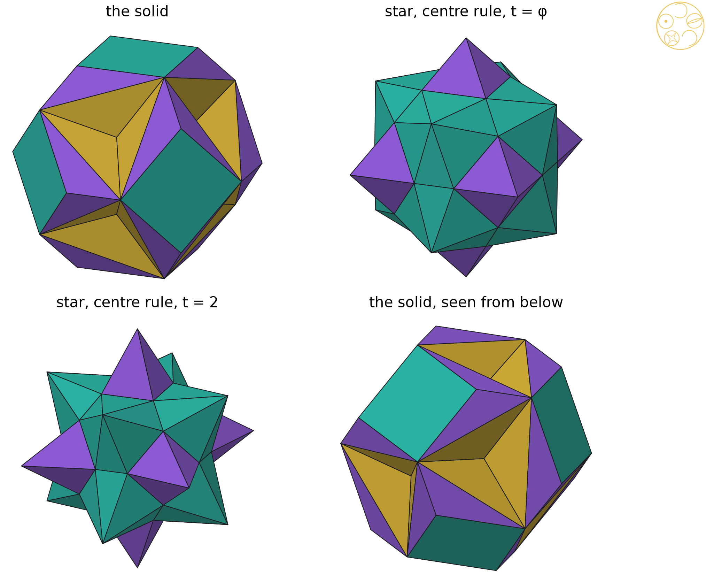
| Exact data | volume √5 ≈ 2.236068; squared edge lengths 3/4 − (1/4)√5 (×12); 3/2 − (1/2)√5 (×24); 1/2 (×24); 1 (×24) (DICTO Solids v7) |
|---|---|
| Centre rule (Ch. 2, Table 1) | group C: the star lies inside its halo, but corner and edge pieces do not fill the layer. Halo of the tips 2.3344 × the solid at t = φ, 4.4086 × at t = 2; 3 face families |
| Polar spikes (Ch. 2) | not decided for non-convex shapes: the layer pieces can cut into the solid (Chapter 2, Section 9) |
| Core (Ch. 3) | not run: Chapter 3 treats the convex shapes |
| Building on the star (Ch. 2, Sect. 7) | DICTO's valley rule, volume added over steps two and three: ×1.45 at t = φ, ×1.31 at t = 2 |
| Valley law (Ch. 5, Theorem) | sharpest dihedral angle 109.47°: at most 120°, so a valley stays open through step two at t = 2 |
| Note (inventory) | not found; the Icosaxes with 8 Tricap dents (#48 Theorem 3) |
Th (order 24) · 32 corners, 84 edges, 54 faces: 48 triangles, 6 quadrilaterals · non-convex · exact in ℚ(√5) · first in #48, DICTO DOI 10.5281/zenodo.23596362
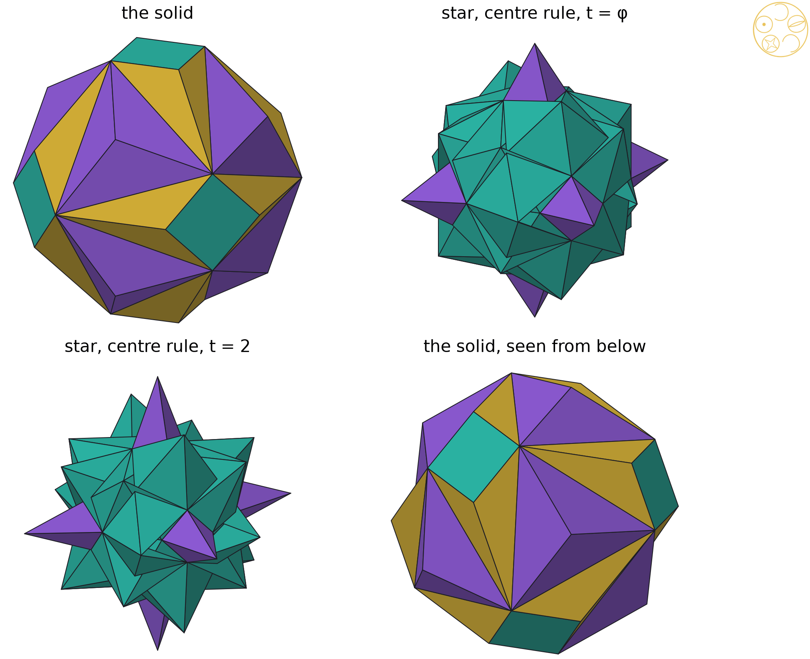
| Exact data | volume 2 ≈ 2.000000; squared edge lengths 3/4 − (1/4)√5 (×24); 3/2 − (1/2)√5 (×24); 1/2 (×12); 1 (×24) (DICTO Solids v7) |
|---|---|
| Centre rule (Ch. 2, Table 1) | group C: the star lies inside its halo, but corner and edge pieces do not fill the layer. Halo of the tips 2.4195 × the solid at t = φ, 4.5694 × at t = 2; 3 face families |
| Polar spikes (Ch. 2) | not decided for non-convex shapes: the layer pieces can cut into the solid (Chapter 2, Section 9) |
| Core (Ch. 3) | not run: Chapter 3 treats the convex shapes |
| Building on the star (Ch. 2, Sect. 7) | DICTO's valley rule, volume added over steps two and three: ×1.27 at t = φ, ×1.25 at t = 2 |
| Valley law (Ch. 5, Theorem) | sharpest dihedral angle 109.47°: at most 120°, so a valley stays open through step two at t = 2 |
| Note (inventory) | not found; the Unborn Axes with 8 Tricap keys, holding a whole regular dodecahedron (#48 Theorem 3) |
C3v (order 6) · 19 corners, 30 edges, 13 faces: 6 triangles, 3 pentagons, 3 hexagons, 1 nonagons · convex · exact in a cubic field · first in #56, DICTO DOI 10.5281/zenodo.23635823
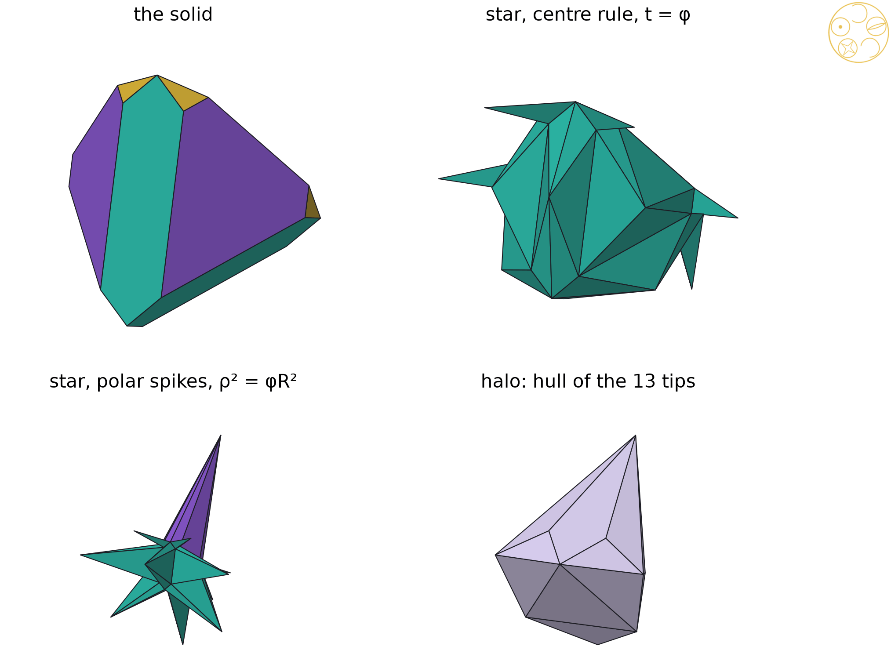
| Exact data | volume 2/3 ≈ 0.666667; squared edge lengths 5 kinds, from 0.0329 to 1.1055 (DICTO Solids v7) |
|---|---|
| Centre rule (Ch. 2, Table 1) | group D: the star sticks out of its halo. Halo of the tips 2.1191 × the solid at t = φ, 4.0020 × at t = 2; 4 face families |
| Polar spikes (Ch. 2, Main theorem) | ρ² = φR²: the halo is the polar, 50.231 × the solid; the layer is 49 pieces, one pyramid per corner and one tetrahedron per edge, 0 overlaps, volumes adding up (ρ² = 2R²: halo 94.864 ×) |
| Core (Ch. 3) | no core at turn 1 (Proposition 3: the families of tips lie in a plane) |
| Chain of T (Ch. 2, Table 3) | not run: no centre fixed by every symmetry |
| Building on the star (Ch. 2, Sect. 7) | DICTO's valley rule, volume added over steps two and three: ×1.12 at t = φ, ×2.21 at t = 2 |
| Valley law (Ch. 5, Theorem) | sharpest dihedral angle 70.53°: at most 120°, so a valley stays open through step two at t = 2 |
| Note (inventory) | not found in the sources checked (#56): the twinned octet's tetrahedral-hole piece at its equal-volume point (19 corners, a nine-sided face on the mirror plane); #56: easy to compute, so an unnamed drawing may exist |
C3v (order 6) · 16 corners, 27 edges, 13 faces: 6 triangles, 3 quadrilaterals, 4 hexagons · convex · exact in ℚ · first in #56, DICTO DOI 10.5281/zenodo.23635823
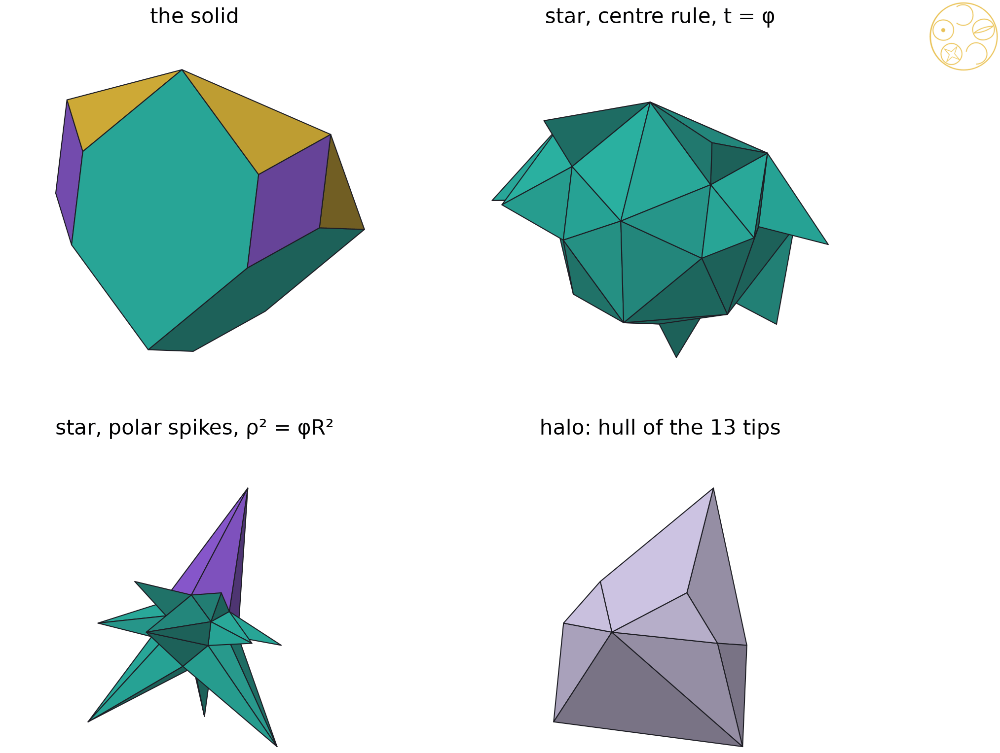
| Exact data | volume 26/27 ≈ 0.962963; squared edge lengths 2/9 (×12); 4/9 (×9); 2/3 (×6) (DICTO Solids v7) |
|---|---|
| Centre rule (Ch. 2, Table 1) | group D: the star sticks out of its halo. Halo of the tips 1.7675 × the solid at t = φ, 3.3379 × at t = 2; 4 face families |
| Polar spikes (Ch. 2, Main theorem) | ρ² = φR²: the halo is the polar, 26.982 × the solid; the layer is 43 pieces, one pyramid per corner and one tetrahedron per edge, 0 overlaps, volumes adding up (ρ² = 2R²: halo 50.957 ×) |
| Core (Ch. 3) | no core at turn 1 (Proposition 3: the families of tips lie in a plane) |
| Chain of T (Ch. 2, Table 3) | not run: no centre fixed by every symmetry |
| Building on the star (Ch. 2, Sect. 7) | DICTO's valley rule, volume added over steps two and three: ×1.23 at t = φ, ×2.10 at t = 2 |
| Valley law (Ch. 5, Theorem) | sharpest dihedral angle 90.00°: at most 120°, so a valley stays open through step two at t = 2 |
| Note (inventory) | not found in the sources checked (#56): the twinned octet's tetrahedral-hole piece at the stop 5/24, beside the classical 60 deg rhombohedron |
C3v (order 6) · 10 corners, 18 edges, 10 faces: 6 triangles, 3 quadrilaterals, 1 hexagons · convex · exact in ℚ · first in #56, DICTO DOI 10.5281/zenodo.23635823
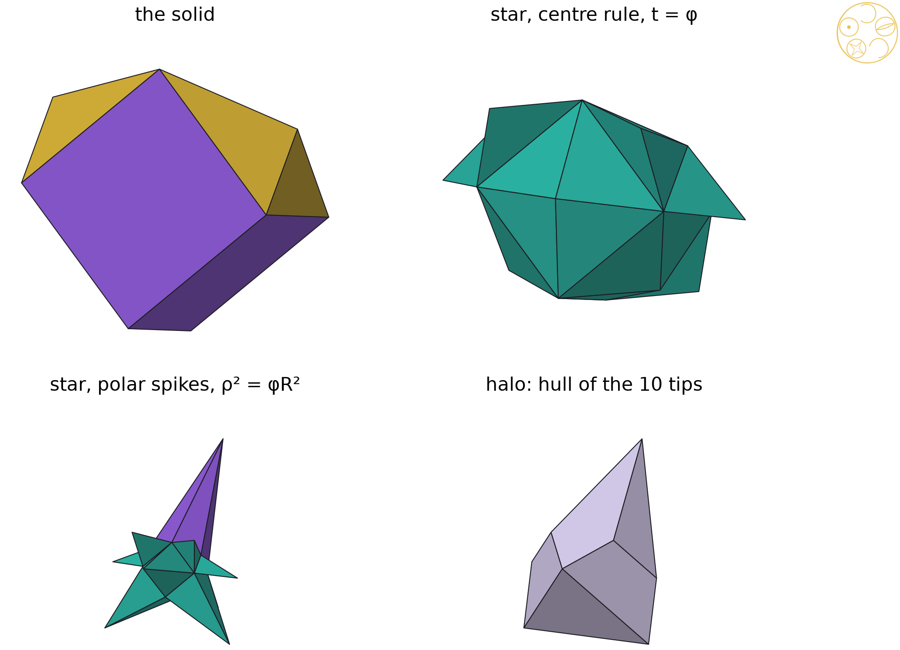
| Exact data | volume 1 ≈ 1.000000; squared edge lengths 1/3 (×3); 2/3 (×6); 1 (×9) (DICTO Solids v7) |
|---|---|
| Centre rule (Ch. 2, Table 1) | group D: the star sticks out of its halo. Halo of the tips 1.4120 × the solid at t = φ, 2.6667 × at t = 2; 3 face families |
| Polar spikes (Ch. 2, Main theorem) | ρ² = φR²: the halo is the polar, 20.254 × the solid; the layer is 28 pieces, one pyramid per corner and one tetrahedron per edge, 0 overlaps, volumes adding up (ρ² = 2R²: halo 38.250 ×) |
| Core (Ch. 3) | no core at turn 1 (Proposition 3: the families of tips lie in a plane) |
| Chain of T (Ch. 2, Table 3) | not run: no centre fixed by every symmetry |
| Building on the star (Ch. 2, Sect. 7) | DICTO's valley rule, volume added over steps two and three: ×1.36 at t = φ, ×2.33 at t = 2 |
| Valley law (Ch. 5, Theorem) | sharpest dihedral angle 90.00°: at most 120°, so a valley stays open through step two at t = 2 |
| Note (inventory) | not found in the sources checked (#56): the twinned octet's tetrahedral-hole piece at 3/8, the twin of the cube |
S6 (order 6) · 32 corners, 84 edges, 54 faces: 48 triangles, 6 quadrilaterals · non-convex · exact in ℚ(√5) · first in #59, DICTO DOI 10.5281/zenodo.23677485
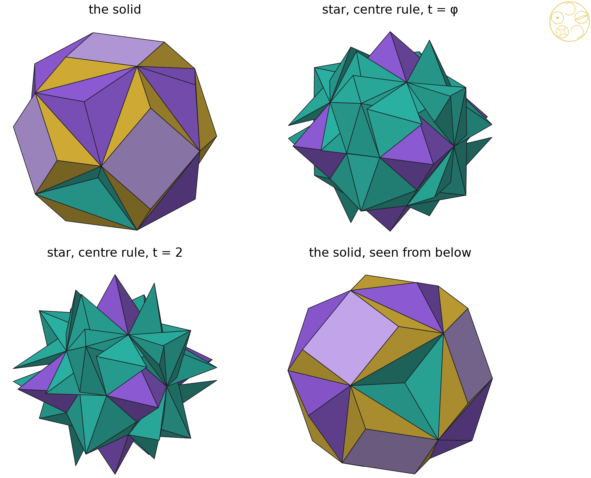
| Exact data | volume 3/2 + (1/2)√5 ≈ 2.618034; squared edge lengths 3/4 − (1/4)√5 (×12); 3/2 − (1/2)√5 (×24); 1/2 (×24); 1 (×24) (DICTO Solids v7) |
|---|---|
| Centre rule (Ch. 2, Table 1) | group C: the star lies inside its halo, but corner and edge pieces do not fill the layer. Halo of the tips 2.3405 × the solid at t = φ, 4.4201 × at t = 2; 4 face families |
| Polar spikes (Ch. 2) | not decided for non-convex shapes: the layer pieces can cut into the solid (Chapter 2, Section 9) |
| Core (Ch. 3) | not run: Chapter 3 treats the convex shapes |
| Building on the star (Ch. 2, Sect. 7) | DICTO's valley rule, volume added over steps two and three: ×1.37 at t = φ, ×1.13 at t = 2 |
| Valley law (Ch. 5, Theorem) | sharpest dihedral angle 109.47°: at most 120°, so a valley stays open through step two at t = 2 |
| Note (inventory) | the piece of the keyed Icosaxes Kagome network (the Icosaxes with 2 Tricap dents and 6 mirrored Tricap keys, volume phi^2); the network was not found in the sources searched (#59) |
C3v (order 6) · 30 corners, 45 edges, 17 faces: 6 triangles, 3 quadrilaterals, 4 hexagons, 3 octagons, 1 dodecagons · convex · exact in ℚ(√3) · first in #61, DICTO DOI 10.5281/zenodo.23682596
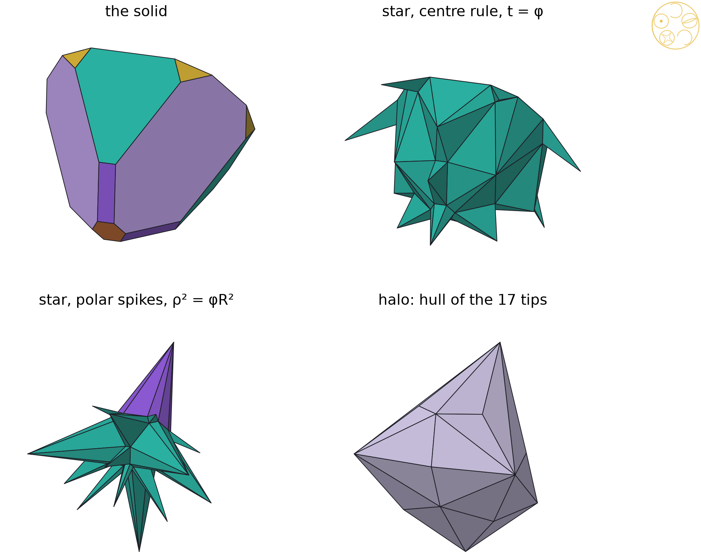
| Exact data | volume (68881403/165888000)√3 ≈ 0.719197; squared edge lengths 8 kinds, from 0.0139 to 0.4859 (DICTO Solids v7) |
|---|---|
| Centre rule (Ch. 2, Table 1) | group D: the star sticks out of its halo. Halo of the tips 2.7447 × the solid at t = φ, 5.1835 × at t = 2; 6 face families |
| Polar spikes (Ch. 2, Main theorem) | ρ² = φR²: the halo is the polar, 31.860 × the solid; the layer is 75 pieces, one pyramid per corner and one tetrahedron per edge, 0 overlaps, volumes adding up (ρ² = 2R²: halo 60.170 ×) |
| Core (Ch. 3) | no core at turn 1 (Proposition 3: the families of tips lie in a plane) |
| Chain of T (Ch. 2, Table 3) | not run: no centre fixed by every symmetry |
| Building on the star (Ch. 2, Sect. 7) | DICTO's valley rule, volume added over steps two and three: ×1.21 at t = φ, ×1.83 at t = 2 |
| Valley law (Ch. 5, Theorem) | sharpest dihedral angle 58.52°: at most 120°, so a valley stays open through step two at t = 2 |
| Note (inventory) | not found in the sources checked (#61): the Janus c/h tetrahedral piece of a squashed stacking (cubic bottom, hexagonal top); in the dataset at the parameters of #61 Figure 1 (ACBC, layer spacing^2 = (3/4)(2/3), lambda = 1/10) |
Ih (order 120) · 42 corners, 120 edges, 80 faces: 80 triangles · convex · exact in ℚ(√5) · first in #63, DICTO DOI 10.5281/zenodo.23690856
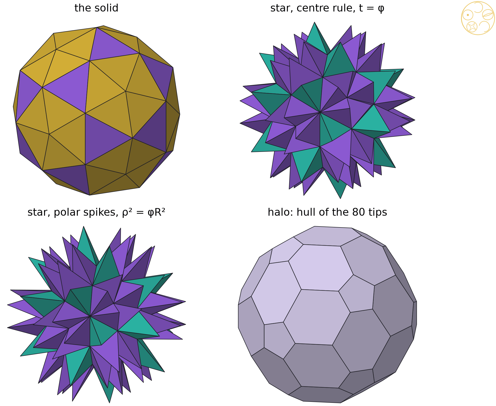
| Exact data | volume 320/3 + (160/3)√5 ≈ 225.923625; squared edge lengths 18 − 6√5 (×60); 24 − 8√5 (×60) (DICTO Solids v7) |
|---|---|
| Centre rule (Ch. 2, Table 1) | group B: the star fills its halo; the core does not come back to the shape itself. Halo of the tips 3.6064 × the solid at t = φ, 6.8109 × at t = 2; 2 face families |
| Polar spikes (Ch. 2, Main theorem) | ρ² = φR²: the halo is the polar, 5.578 × the solid; the layer is 162 pieces, one pyramid per corner and one tetrahedron per edge, 0 overlaps, volumes adding up (ρ² = 2R²: halo 10.535 ×) |
| Core (Ch. 3) | period two from turn 2 (the Theorem); two turns scale the core by t²·(5 + 2√5)/15 in length |
| Chain of T (Ch. 2, Table 3) | not closed in eight steps (screened) |
| Building on the star (Ch. 2, Sect. 7) | DICTO's valley rule, volume added over steps two and three: freezes at t = φ, freezes at t = 2 (freezes: less than 0.1 per cent at step three) |
| Valley law (Ch. 5, Theorem) | sharpest dihedral angle 155.91°: blunter than 120°, so every valley at t = 2 is closed by step two |
| Note (inventory) | W1: the vertex-first central slice of the 600-cell (42 corners, 80 triangles, Ih); not found as a solid in the sources checked (#63) |
Ih (order 120) · 72 corners, 210 edges, 140 faces: 140 triangles · convex · exact in ℚ(√5) · first in #63, DICTO DOI 10.5281/zenodo.23690856
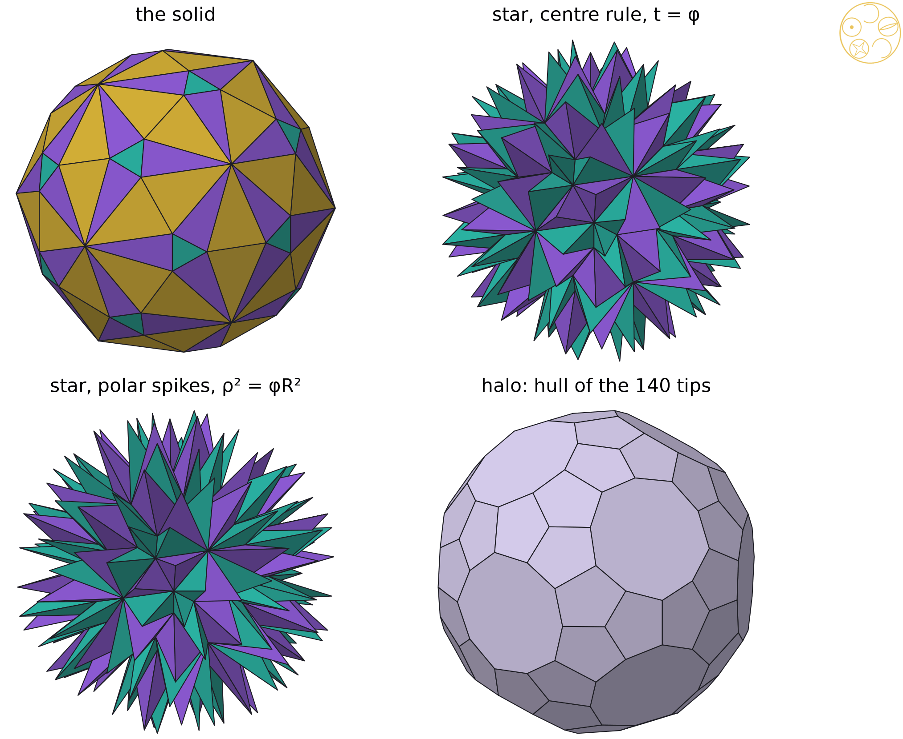
| Exact data | volume −2480/3 + (1360/3)√5 ≈ 187.017483; squared edge lengths 144 − 64√5 (×60); 56 − 24√5 (×30); 112 − 48√5 (×120) (DICTO Solids v7) |
|---|---|
| Centre rule (Ch. 2, Table 1) | group B: the star fills its halo; the core does not come back to the shape itself. Halo of the tips 3.8316 × the solid at t = φ, 7.2361 × at t = 2; 3 face families |
| Polar spikes (Ch. 2, Main theorem) | ρ² = φR²: the halo is the polar, 6.118 × the solid; the layer is 282 pieces, one pyramid per corner and one tetrahedron per edge, 0 overlaps, volumes adding up (ρ² = 2R²: halo 11.555 ×) |
| Core (Ch. 3) | period two from turn 1 (the Theorem); two turns scale the core by t²·(5 + 2√5)/15 in length |
| Chain of T (Ch. 2, Table 3) | not closed in eight steps (screened) |
| Building on the star (Ch. 2, Sect. 7) | DICTO's valley rule, volume added over steps two and three: freezes at t = φ, freezes at t = 2 (freezes: less than 0.1 per cent at step three) |
| Valley law (Ch. 5, Theorem) | sharpest dihedral angle 163.40°: blunter than 120°, so every valley at t = 2 is closed by step two |
| Note (inventory) | W3: vertex-first, the largest all-triangle slice of the 600-cell (72 corners, 140 triangles); not found as a solid in the sources checked (#63) |
Ih (order 120) · 32 corners, 90 edges, 60 faces: 60 triangles · convex · exact in ℚ(√5) · first in #63, DICTO DOI 10.5281/zenodo.23690856
| Exact data | volume −400 + 240√5 ≈ 136.656315; squared edge lengths 112 − 48√5 (×60); 24 − 8√5 (×30) (DICTO Solids v7) |
|---|---|
| Centre rule (Ch. 2, Table 1) | group B: the star fills its halo; the core does not come back to the shape itself. Halo of the tips 3.3490 × the solid at t = φ, 6.3247 × at t = 2; 1 face family |
| Polar spikes (Ch. 2, Main theorem) | ρ² = φR²: the halo is the polar, 6.284 × the solid; the layer is 122 pieces, one pyramid per corner and one tetrahedron per edge, 0 overlaps, volumes adding up (ρ² = 2R²: halo 11.868 ×) |
| Core (Ch. 3) | period two from turn 1 (the Theorem); two turns scale the core by t²·(5 + 2√5)/15 in length |
| Chain of T (Ch. 4, Table 1) | period four, radius gain 293 − 652√5/5 ≈ 1.416736 (norm 41·101/5) |
| Building on the star (Ch. 2, Sect. 7) | DICTO's valley rule, volume added over steps two and three: freezes at t = φ, freezes at t = 2 (freezes: less than 0.1 per cent at step three) |
| Valley law (Ch. 5, Theorem) | sharpest dihedral angle 149.10°: blunter than 120°, so every valley at t = 2 is closed by step two |
| Note (inventory) | W5: vertex-first slice (32 corners, 60 triangles, Ih); not found as a solid in the sources checked (#63) |
D5h (order 20) · 32 corners, 90 edges, 60 faces: 60 triangles · convex · exact in ℚ(√5) · first in #63, DICTO DOI 10.5281/zenodo.23690856
| Exact data | volume 1235/12 − (75/4)√5 ≈ 60.990392; squared edge lengths 7 kinds, from 0.8065 to 5.5279 (DICTO Solids v7) |
|---|---|
| Centre rule (Ch. 2, Table 1) | group B: the star fills its halo; the core does not come back to the shape itself. Halo of the tips 3.2652 × the solid at t = φ, 6.1665 × at t = 2; 4 face families |
| Polar spikes (Ch. 2, Main theorem) | ρ² = φR²: the halo is the polar, 7.926 × the solid; the layer is 122 pieces, one pyramid per corner and one tetrahedron per edge, 0 overlaps, volumes adding up (ρ² = 2R²: halo 14.969 ×) |
| Core (Ch. 3) | no core at turn 3 (Proposition 3: the families of tips lie in a plane) |
| Chain of T (Ch. 2, Table 3) | not run: no centre fixed by every symmetry |
| Building on the star (Ch. 2, Sect. 7) | DICTO's valley rule, volume added over steps two and three: ×1.42 at t = φ, freezes at t = 2 (freezes: less than 0.1 per cent at step three) |
| Valley law (Ch. 5, Theorem) | sharpest dihedral angle 142.33°: blunter than 120°, so every valley at t = 2 is closed by step two |
| Note (inventory) | W22: edge-first slice (32 corners, 60 triangles, D5h), another shape with Tweedledum's counts; not found as a solid in the sources checked (#63) |
D3h (order 12) · 144 corners, 360 edges, 218 faces: 152 triangles, 66 quadrilaterals · convex · exact in ℚ(√5) · first in #63, DICTO DOI 10.5281/zenodo.23690856
| Exact data | volume −1409/270 + (22433/270)√5 ≈ 180.565603; squared edge lengths 35 kinds, from 0.0743 to 3.5076 (DICTO Solids v7) |
|---|---|
| Centre rule (Ch. 2, Table 1) | group C: the star lies inside its halo, but corner and edge pieces do not fill the layer. Halo of the tips 4.0959 × the solid at t = φ, 7.7352 × at t = 2; 17 face families |
| Polar spikes (Ch. 2, Main theorem) | ρ² = φR²: the halo is the polar, 5.366 × the solid; the layer is 504 pieces, one pyramid per corner and one tetrahedron per edge, 0 overlaps, volumes adding up (ρ² = 2R²: halo 10.135 ×) |
| DICTO's sloping bases (Ch. 2, Table 2) | t = φ: 432 corner pyramids and 360 edge tetrahedra, no overlaps; they close into a skin of its own, 4.0883 × the solid against the halo's 4.0959 |
| Core (Ch. 3) | no core at turn 2 (Proposition 3: the families of tips lie in a plane) |
| Chain of T (Ch. 2, Table 3) | not run: no centre fixed by every symmetry |
| Building on the star (Ch. 2, Sect. 7) | not run (over 200 faces) |
| Note (inventory) | W28: face-first, in a gap (cut at its midpoint), one of the four 144-corner slices, all different; not found in the sources checked (#63) |
D3h (order 12) · 144 corners, 360 edges, 218 faces: 152 triangles, 66 quadrilaterals · convex · exact in ℚ(√5) · first in #63, DICTO DOI 10.5281/zenodo.23690856
| Exact data | volume 14167/270 + (14879/270)√5 ≈ 175.694279; squared edge lengths 32 kinds, from 0.0252 to 4.6759 (DICTO Solids v7) |
|---|---|
| Centre rule (Ch. 2, Table 1) | group C: the star lies inside its halo, but corner and edge pieces do not fill the layer. Halo of the tips 4.1065 × the solid at t = φ, 7.7553 × at t = 2; 19 face families |
| Polar spikes (Ch. 2, Main theorem) | ρ² = φR²: the halo is the polar, 5.522 × the solid; the layer is 504 pieces, one pyramid per corner and one tetrahedron per edge, 0 overlaps, volumes adding up (ρ² = 2R²: halo 10.429 ×) |
| DICTO's sloping bases (Ch. 2, Table 2) | t = φ: 432 corner pyramids and 360 edge tetrahedra, no overlaps; they close into a skin of its own, 4.0929 × the solid against the halo's 4.1065 |
| Core (Ch. 3) | no core at turn 2 (Proposition 3: the families of tips lie in a plane) |
| Chain of T (Ch. 2, Table 3) | not run: no centre fixed by every symmetry |
| Building on the star (Ch. 2, Sect. 7) | not run (over 200 faces) |
| Note (inventory) | W30: face-first, in a gap (cut at its midpoint), 144 corners; not found in the sources checked (#63) |
D3h (order 12) · 30 corners, 84 edges, 56 faces: 56 triangles · convex · exact in ℚ(√5) · first in #63, DICTO DOI 10.5281/zenodo.23690856
| Exact data | volume 376/15 + (436/75)√5 ≈ 38.065675; squared edge lengths 9 kinds, from 0.4074 to 5.3333 (DICTO Solids v7) |
|---|---|
| Centre rule (Ch. 2, Table 1) | group B: the star fills its halo; the core does not come back to the shape itself. Halo of the tips 3.2017 × the solid at t = φ, 6.0466 × at t = 2; 6 face families |
| Polar spikes (Ch. 2, Main theorem) | ρ² = φR²: the halo is the polar, 9.760 × the solid; the layer is 114 pieces, one pyramid per corner and one tetrahedron per edge, 0 overlaps, volumes adding up (ρ² = 2R²: halo 18.432 ×) |
| Core (Ch. 3) | no core at turn 2 (Proposition 3: the families of tips lie in a plane) |
| Chain of T (Ch. 2, Table 3) | not run: no centre fixed by every symmetry |
| Building on the star (Ch. 2, Sect. 7) | DICTO's valley rule, volume added over steps two and three: ×1.33 at t = φ, freezes at t = 2 (freezes: less than 0.1 per cent at step three) |
| Valley law (Ch. 5, Theorem) | sharpest dihedral angle 135.52°: blunter than 120°, so every valley at t = 2 is closed by step two |
| Note (inventory) | W43: face-first all-triangle slice (30 corners, 56 triangles); not found as a solid in the sources checked (#63) |
Td (order 24) · 144 corners, 360 edges, 218 faces: 152 triangles, 66 quadrilaterals · convex · exact in ℚ(√5) · first in #63, DICTO DOI 10.5281/zenodo.23690856
| Exact data | volume 7019/80 + (46969/1200)√5 ≈ 175.259064; squared edge lengths 18 kinds, from 0.1000 to 3.4043 (DICTO Solids v7) |
|---|---|
| Centre rule (Ch. 2, Table 1) | group C: the star lies inside its halo, but corner and edge pieces do not fill the layer. Halo of the tips 4.0835 × the solid at t = φ, 7.7119 × at t = 2; 11 face families |
| Polar spikes (Ch. 2, Main theorem) | ρ² = φR²: the halo is the polar, 5.260 × the solid; the layer is 504 pieces, one pyramid per corner and one tetrahedron per edge, 0 overlaps, volumes adding up (ρ² = 2R²: halo 9.934 ×) |
| DICTO's sloping bases (Ch. 2, Table 2) | t = φ: 432 corner pyramids and 360 edge tetrahedra, no overlaps; they close into a skin of its own, 4.0807 × the solid against the halo's 4.0835 |
| Core (Ch. 3) | period two from turn 1 (the Theorem); two turns scale the core by t²/9 in length |
| Chain of T (Ch. 2, Table 3) | not closed in eight steps (screened) |
| Building on the star (Ch. 2, Sect. 7) | not run (over 200 faces) |
| Note (inventory) | W49: cell-first, in a gap (cut at its midpoint), 144 corners; a gap section, not in Boole Stott's series; not found in the sources checked (#63) |
Td (order 24) · 144 corners, 360 edges, 218 faces: 152 triangles, 66 quadrilaterals · convex · exact in ℚ(√5) · first in #63, DICTO DOI 10.5281/zenodo.23690856
| Exact data | volume 13639/160 + (29587/800)√5 ≈ 167.941929; squared edge lengths 14 kinds, from 0.0391 to 4.2838 (DICTO Solids v7) |
|---|---|
| Centre rule (Ch. 2, Table 1) | group C: the star lies inside its halo, but corner and edge pieces do not fill the layer. Halo of the tips 4.1154 × the solid at t = φ, 7.7722 × at t = 2; 13 face families |
| Polar spikes (Ch. 2, Main theorem) | ρ² = φR²: the halo is the polar, 5.469 × the solid; the layer is 504 pieces, one pyramid per corner and one tetrahedron per edge, 0 overlaps, volumes adding up (ρ² = 2R²: halo 10.328 ×) |
| DICTO's sloping bases (Ch. 2, Table 2) | t = φ: 432 corner pyramids and 360 edge tetrahedra, no overlaps; they close into a skin of its own, 4.1028 × the solid against the halo's 4.1154 |
| Core (Ch. 3) | period two from turn 1 (the Theorem); two turns scale the core by t²/9 in length |
| Chain of T (Ch. 2, Table 3) | not closed in eight steps (screened) |
| Building on the star (Ch. 2, Sect. 7) | not run (over 200 faces) |
| Note (inventory) | W51: cell-first, in a gap (cut at its midpoint), 144 corners; not found in the sources checked (#63) |
D3h (order 12) · 114 corners, 171 edges, 59 faces: 15 quadrilaterals, 12 pentagons, 20 hexagons, 6 octagons, 6 nonagons · convex · exact in ℚ(√5) · first in #65, DICTO DOI 10.5281/zenodo.23716140
| Exact data | volume 9539847/131072 + (21331881/655360)√5 ≈ 145.566972; squared edge lengths 17 kinds, from 0.0803 to 1.8592 (DICTO Solids v7) |
|---|---|
| Centre rule (Ch. 2, Table 1) | group C: the star lies inside its halo, but corner and edge pieces do not fill the layer. Halo of the tips 3.6041 × the solid at t = φ, 6.8065 × at t = 2; 9 face families |
| Polar spikes (Ch. 2, Main theorem) | ρ² = φR²: the halo is the polar, 4.982 × the solid; the layer is 285 pieces, one pyramid per corner and one tetrahedron per edge, 0 overlaps, volumes adding up (ρ² = 2R²: halo 9.410 ×) |
| DICTO's sloping bases (Ch. 2, Table 2) | t = φ: 114 corner pyramids and 171 edge tetrahedra, no overlaps; they close into a skin of its own, 3.5644 × the solid against the halo's 3.6041 |
| Core (Ch. 3) | no core at turn 2 (Proposition 3: the families of tips lie in a plane) |
| Chain of T (Ch. 2, Table 3) | not run: no centre fixed by every symmetry |
| Building on the star (Ch. 2, Sect. 7) | DICTO's valley rule, volume added over steps two and three: ×1.31 at t = φ, ×1.18 at t = 2 |
| Valley law (Ch. 5, Theorem) | sharpest dihedral angle 143.39°: blunter than 120°, so every valley at t = 2 is closed by step two |
| Note (inventory) | R33: 120-cell edge-first slice, the only one with nine-sided faces; not found in the sources checked (#65) |
D3h (order 12) · 114 corners, 171 edges, 59 faces: 12 triangles, 3 quadrilaterals, 26 hexagons, 6 heptagons, 12 octagons · convex · exact in ℚ(√5) · first in #65, DICTO DOI 10.5281/zenodo.23716140
| Exact data | volume 9465351/131072 + (21165177/655360)√5 ≈ 144.429824; squared edge lengths 16 kinds, from 0.0201 to 1.9726 (DICTO Solids v7) |
|---|---|
| Centre rule (Ch. 2, Table 1) | group C: the star lies inside its halo, but corner and edge pieces do not fill the layer. Halo of the tips 3.6215 × the solid at t = φ, 6.8394 × at t = 2; 9 face families |
| Polar spikes (Ch. 2, Main theorem) | ρ² = φR²: the halo is the polar, 5.027 × the solid; the layer is 285 pieces, one pyramid per corner and one tetrahedron per edge, 0 overlaps, volumes adding up (ρ² = 2R²: halo 9.493 ×) |
| DICTO's sloping bases (Ch. 2, Table 2) | t = φ: 114 corner pyramids and 171 edge tetrahedra, no overlaps; they close into a skin of its own, 3.5346 × the solid against the halo's 3.6215 |
| Core (Ch. 3) | no core at turn 2 (Proposition 3: the families of tips lie in a plane) |
| Chain of T (Ch. 2, Table 3) | not run: no centre fixed by every symmetry |
| Building on the star (Ch. 2, Sect. 7) | DICTO's valley rule, volume added over steps two and three: ×1.31 at t = φ, ×1.20 at t = 2 |
| Valley law (Ch. 5, Theorem) | sharpest dihedral angle 143.39°: blunter than 120°, so every valley at t = 2 is closed by step two |
| Note (inventory) | R35: 120-cell edge-first slice, the other 114-corner slice; not found in the sources checked (#65) |
D10h (order 40) · 80 corners, 130 edges, 52 faces: 20 quadrilaterals, 20 pentagons, 10 hexagons, 2 decagons · convex · exact in ℚ(√5) · first in #65, DICTO DOI 10.5281/zenodo.23716140
| Exact data | volume 105673/1536 + (19691/640)√5 ≈ 137.595049; squared edge lengths 5 kinds, from 0.5312 to 2.1246 (DICTO Solids v7) |
|---|---|
| Centre rule (Ch. 2, Table 1) | group B: the star fills its halo; the core does not come back to the shape itself. Halo of the tips 3.5132 × the solid at t = φ, 6.6348 × at t = 2; 4 face families |
| Polar spikes (Ch. 2, Main theorem) | ρ² = φR²: the halo is the polar, 5.106 × the solid; the layer is 210 pieces, one pyramid per corner and one tetrahedron per edge, 0 overlaps, volumes adding up (ρ² = 2R²: halo 9.642 ×) |
| Core (Ch. 3) | no core at turn 2 (Proposition 3: the families of tips lie in a plane) |
| Chain of T (Ch. 2, Table 3) | not closed in eight steps (screened) |
| Building on the star (Ch. 2, Sect. 7) | DICTO's valley rule, volume added over steps two and three: ×1.35 at t = φ, freezes at t = 2 (freezes: less than 0.1 per cent at step three) |
| Valley law (Ch. 5, Theorem) | sharpest dihedral angle 144.00°: blunter than 120°, so every valley at t = 2 is closed by step two |
| Note (inventory) | R77: 120-cell pentagon-first central slice, two regular decagons; the polar of the 600-cell's edge-first shadow; not found in the sources checked (#65) |
D5h (order 20) · 120 corners, 180 edges, 62 faces: 20 triangles, 2 pentagons, 10 hexagons, 10 heptagons, 20 octagons · convex · exact in ℚ(√5) · first in #65, DICTO DOI 10.5281/zenodo.23716140
| Exact data | volume 1667107/24576 + (310647/10240)√5 ≈ 135.669504; squared edge lengths 12 kinds, from 0.0775 to 1.9725 (DICTO Solids v7) |
|---|---|
| Centre rule (Ch. 2, Table 1) | group C: the star lies inside its halo, but corner and edge pieces do not fill the layer. Halo of the tips 3.6992 × the solid at t = φ, 6.9860 × at t = 2; 7 face families |
| Polar spikes (Ch. 2, Main theorem) | ρ² = φR²: the halo is the polar, 5.006 × the solid; the layer is 300 pieces, one pyramid per corner and one tetrahedron per edge, 0 overlaps, volumes adding up (ρ² = 2R²: halo 9.454 ×) |
| DICTO's sloping bases (Ch. 2, Table 2) | t = φ: 120 corner pyramids and 180 edge tetrahedra, no overlaps; they close into a skin of its own, 3.5368 × the solid against the halo's 3.6992 |
| Core (Ch. 3) | no core at turn 2 (Proposition 3: the families of tips lie in a plane) |
| Chain of T (Ch. 2, Table 3) | not run: no centre fixed by every symmetry |
| Building on the star (Ch. 2, Sect. 7) | DICTO's valley rule, volume added over steps two and three: ×1.34 at t = φ, ×1.20 at t = 2 |
| Valley law (Ch. 5, Theorem) | sharpest dihedral angle 142.64°: blunter than 120°, so every valley at t = 2 is closed by step two |
| Note (inventory) | R80: 120-cell pentagon-first slice, 120 corners; not found in the sources checked (#65) |
Ih (order 120) · 120 corners, 180 edges, 62 faces: 20 triangles, 12 pentagons, 30 octagons · convex · exact in ℚ(√5) · first in #65, DICTO DOI 10.5281/zenodo.23716140
| Exact data | volume 1390915/24576 + (155509/6144)√5 ≈ 113.192944; squared edge lengths 65/512 + (29/512)√5 (×60); 123/512 + (55/512)√5 (×60); 423/512 + (189/512)√5 (×60) (DICTO Solids v7) |
|---|---|
| Centre rule (Ch. 2, Table 1) | group C: the star lies inside its halo, but corner and edge pieces do not fill the layer. Halo of the tips 3.6727 × the solid at t = φ, 6.9361 × at t = 2; 3 face families |
| Polar spikes (Ch. 2, Main theorem) | ρ² = φR²: the halo is the polar, 4.909 × the solid; the layer is 300 pieces, one pyramid per corner and one tetrahedron per edge, 0 overlaps, volumes adding up (ρ² = 2R²: halo 9.270 ×) |
| DICTO's sloping bases (Ch. 2, Table 2) | t = φ: 120 corner pyramids and 180 edge tetrahedra, no overlaps; they close into a skin of its own, 3.5547 × the solid against the halo's 3.6727 |
| Core (Ch. 3) | period two from turn 1 (the Theorem); two turns scale the core by t²·(5 + 2√5)/15 in length |
| Chain of T (Ch. 2, Table 3) | not closed in eight steps (screened) |
| Building on the star (Ch. 2, Sect. 7) | DICTO's valley rule, volume added over steps two and three: freezes at t = φ, freezes at t = 2 (freezes: less than 0.1 per cent at step three) |
| Valley law (Ch. 5, Theorem) | sharpest dihedral angle 144.00°: blunter than 120°, so every valley at t = 2 is closed by step two |
| Note (inventory) | R113: 120-cell cell-first slice in a gap (cut at its midpoint), 120 corners; a gap section, not in Boole Stott's series; not found in the sources checked (#65) |
Ih (order 120) · 120 corners, 180 edges, 62 faces: 30 quadrilaterals, 20 hexagons, 12 decagons · convex · exact in ℚ(√5) · first in #65, DICTO DOI 10.5281/zenodo.23716140
| Exact data | volume 426925/8192 + (143195/6144)√5 ≈ 104.229737; squared edge lengths 123/512 + (55/512)√5 (×120); 161/256 + (9/32)√5 (×60) (DICTO Solids v7) |
|---|---|
| Centre rule (Ch. 2, Table 1) | group C: the star lies inside its halo, but corner and edge pieces do not fill the layer. Halo of the tips 3.6794 × the solid at t = φ, 6.9486 × at t = 2; 3 face families |
| Polar spikes (Ch. 2, Main theorem) | ρ² = φR²: the halo is the polar, 4.818 × the solid; the layer is 300 pieces, one pyramid per corner and one tetrahedron per edge, 0 overlaps, volumes adding up (ρ² = 2R²: halo 9.099 ×) |
| DICTO's sloping bases (Ch. 2, Table 2) | t = φ: 120 corner pyramids and 180 edge tetrahedra, no overlaps; they close into a skin of its own, 3.5838 × the solid against the halo's 3.6794 |
| Core (Ch. 3) | period two from turn 1 (the Theorem); two turns scale the core by t²·(5 + 2√5)/15 in length |
| Chain of T (Ch. 2, Table 3) | not closed in eight steps (screened) |
| Building on the star (Ch. 2, Sect. 7) | DICTO's valley rule, volume added over steps two and three: ×1.30 at t = φ, freezes at t = 2 (freezes: less than 0.1 per cent at step three) |
| Valley law (Ch. 5, Theorem) | sharpest dihedral angle 142.62°: blunter than 120°, so every valley at t = 2 is closed by step two |
| Note (inventory) | R115: 120-cell cell-first slice in a gap (cut at its midpoint): the faces and symmetry of the truncated icosidodecahedron (30 squares, 20 hexagons, 12 decagons, Ih) with two edge lengths; not found in the sources checked (#65) |
Ih (order 120) · 92 corners, 270 edges, 180 faces: 180 triangles · non-convex · exact in ℚ(√5) · first in #78 (Part I, Chapter 13), DICTO DOI 10.5281/zenodo.23782577
| Exact data | volume 20 + (1/2)√5 ≈ 21.118034; squared edge lengths 3/2 − (1/2)√5 (×90); 15/4 − (6/5)√5 (×60); 9/4 − (1/2)√5 (×120) (DICTO Solids v7) |
|---|---|
| Centre rule (Ch. 2, Table 1) | group D: the star sticks out of its halo. Halo of the tips 1.3081 × the solid at t = φ, 2.4705 × at t = 2; 2 face families |
| Polar spikes (Ch. 2) | not decided for non-convex shapes: the layer pieces can cut into the solid (Chapter 2, Section 9) |
| Core (Ch. 3) | not run: Chapter 3 treats the convex shapes |
| Building on the star (Ch. 2, Sect. 7) | DICTO's valley rule, volume added over steps two and three: freezes at t = φ, freezes at t = 2 (freezes: less than 0.1 per cent at step three) |
| Valley law (Ch. 5, Theorem) | sharpest dihedral angle 115.96°: at most 120°, so a valley stays open through step two at t = 2 |
| Note (inventory) | the truncated icosahedron with a pyramid on every face, tips at φ × the feet of the perpendiculars (92 corners, 180 triangles, volume φ × TI, Ih); the doubling form (2×) is the same construction; not found in the sources checked (#78) |
Ih (order 120) · 32 corners, 90 edges, 60 faces: 60 triangles · convex · exact in ℚ(√5) · first in #78 (Part I, Chapter 13), DICTO DOI 10.5281/zenodo.23782577
| Exact data | volume 85/4 + (37/4)√5 ≈ 41.933629; squared edge lengths 3/2 + (3/10)√5 (×60); 3/2 + (1/2)√5 (×30) (DICTO Solids v7) |
|---|---|
| Centre rule (Ch. 2, Table 1) | group B: the star fills its halo; the core does not come back to the shape itself. Halo of the tips 3.3764 × the solid at t = φ, 6.3765 × at t = 2; 1 face family |
| Polar spikes (Ch. 2, Main theorem) | ρ² = φR²: the halo is the polar, 6.175 × the solid; the layer is 122 pieces, one pyramid per corner and one tetrahedron per edge, 0 overlaps, volumes adding up (ρ² = 2R²: halo 11.662 ×) |
| Core (Ch. 3) | period two from turn 1 (the Theorem); two turns scale the core by t²·(5 + 2√5)/15 in length |
| Chain of T (Ch. 2, Table 3) | not run |
| Building on the star (Ch. 2, Sect. 7) | DICTO's valley rule, volume added over steps two and three: freezes at t = φ, freezes at t = 2 (freezes: less than 0.1 per cent at step three) |
| Valley law (Ch. 5, Theorem) | sharpest dihedral angle 150.93°: blunter than 120°, so every valley at t = 2 is closed by step two |
| Note (inventory) | DICTO's name: the hull of the TI Star's 32 tips, a pentakis dodecahedron that is not the Catalan one (five-fold corners 1.0265 × further out than the six-fold ones); not found in the sources checked (#78) |
Ih (order 120) · 60 corners, 90 edges, 32 faces: 12 pentagons, 20 hexagons · convex · exact in ℚ(√5) · first in #78 (Part I, Chapter 13), DICTO DOI 10.5281/zenodo.23782577
| Exact data | volume 169/12 + (383/60)√5 ≈ 28.356901; squared edge lengths 1/5 (×30); 1 (×60) (DICTO Solids v7) |
|---|---|
| Centre rule (Ch. 2, Table 1) | group A: the star fills its halo and the core comes back to the shape. Halo of the tips 3.2268 × the solid at t = φ, 6.0940 × at t = 2; 2 face families |
| Polar spikes (Ch. 2, Main theorem) | ρ² = φR²: the halo is the polar, 5.315 × the solid; the layer is 150 pieces, one pyramid per corner and one tetrahedron per edge, 0 overlaps, volumes adding up (ρ² = 2R²: halo 10.037 ×) |
| Core (Ch. 3) | period two at once (the Theorem); two turns scale the core by t²·(5 + 2√5)/15 in length |
| Chain of T (Ch. 2, Table 3) | not run |
| Building on the star (Ch. 2, Sect. 7) | DICTO's valley rule, volume added over steps two and three: ×1.66 at t = φ, freezes at t = 2 (freezes: less than 0.1 per cent at step three) |
| Valley law (Ch. 5, Theorem) | sharpest dihedral angle 138.19°: blunter than 120°, so every valley at t = 2 is closed by step two |
| Note (inventory) | the icosahedron truncated at 1/φ³ of each edge (12 pentagons, 20 hexagons, hexagon edges in the ratio √5), the core of every turn of the TI Star cycles and the polar partner of the Star Halo (#78) |
Oh (order 48) · 32 corners, 48 edges, 18 faces: 6 quadrilaterals, 12 hexagons · convex · exact in ℚ(√5) · first in #80, DICTO DOI 10.5281/zenodo.23822907
| Exact data | volume 424/125 ≈ 3.392000; squared edge lengths 4/25 (×24); 12/25 (×24) (DICTO Solids v7) |
|---|---|
| Centre rule (Ch. 2; from the book's own runs) | group B: the star fills its halo; the core does not come back to the shape itself. Halo of the tips 2.5177 × the solid at t = φ, 4.7547 × at t = 2; 2 face families |
| Polar spikes, exact (Ch. 2, Main theorem) | ρ² = φR²: the halo is the polar, 1701/530 + (1701/1060)√5 ≈ 6.798 × the solid; ρ² = 2R²: 3402/265 ≈ 12.838 ×. The layer of 80 corner pyramids and edge tetrahedra checked exactly: every piece of nonzero volume, one orientation per kind, the pieces adding up to the halo exactly (from the book's own runs) |
| Core (Ch. 3, exact; from the book's own runs) | period two from turn 1 (the Theorem); two turns scale the core by t²/3 in length |
| Chain of T (Ch. 4) | period four, entered after three steps: steps 3 and 7 are similar, with radius gain 21811/11025 = 17·1283/(3²·5²·7²) ≈ 1.978322, exact (the script of Ch. 4, study1.py; from the book's own runs). Step 2 has Cube Pearl's faces (6 squares, 12 hexagons) at another depth. Ch. 4, Sect. 6: the cube cut back at depth 3/5 closes |
| Building on the star (Ch. 2, Sect. 7) | DICTO's valley rule, volume added over steps two and three: ×1.72 at t = φ, ×1.91 at t = 2 |
| Valley law (Ch. 5, Theorem) | sharpest dihedral angle 120.00°: exactly 120°, the bound itself: a valley stays open through step two at t = 2 |
| Note (inventory) | the cube with its edges cut back by the planes (±1, ±1, 0)·x ≤ 6/5 (depth s = 3/5): 32 corners all on one sphere, 6 squares and 12 hexagons, Oh; the chamfered-cube family is classical, this depth was not found in the sources checked; its chain of T closes with period four (#80) |
Oh (order 48) · 48 corners, 72 edges, 26 faces: 12 quadrilaterals, 8 hexagons, 6 octagons · convex · exact in ℚ(√5) · first in Star Cores (studies 2026-10-31-star-cores-names)
| Exact data | volume −613/2 + (279/2)√5 ≈ 5.431483; squared edge lengths 47 − 21√5 (×24); 1/2 (×24); 81 − 36√5 (×24) (DICTO Solids v7) |
|---|---|
| Centre rule (Ch. 2; from the book's own runs) | group B: the star fills its halo; the core does not come back to the shape itself. Halo of the tips 2.8921 × the solid at t = φ, 5.4618 × at t = 2; 3 face families |
| Polar spikes, exact (Ch. 2, Main theorem) | ρ² = φR²: the halo is the polar, −368974/30231 + (81308/10077)√5 ≈ 5.837 × the solid; ρ² = 2R²: 15660544/30231 − (6854576/30231)√5 ≈ 11.023 ×. The layer of 120 pieces checked exactly as for Cube Pearl (from the book's own runs) |
| Core (Ch. 3, exact; from the book's own runs) | period two from turn 1 (the Theorem); two turns scale the core by t²/3 in length |
| Chain of T (Ch. 4) | period four at once: step 4 is the Golden Clasp again, with radius gain (3715 − 1635√5)/36 ≈ 1.639690, norm 5²·19·229/(2²·3⁴), exact (the script of Ch. 4, study1.py; from the book's own runs); 19 and 229 are ≡ ±1 (mod 5), as Ch. 4, Proposition 3 requires. The Archimedean truncated cuboctahedron does not close (Ch. 4, Sect. 6) |
| Building on the star (Ch. 2, Sect. 7) | DICTO's valley rule, volume added over steps two and three: ×1.71 at t = φ, ×1.45 at t = 2 |
| Valley law (Ch. 5, Theorem) | sharpest dihedral angle 125.26°: blunter than 120°, so every valley at t = 2 is closed by step two |
| Note (inventory) | the faces of the truncated cuboctahedron at depths 1 : 1/φ : 3/4 on the 4-, 3- and 2-fold axes (48 corners, 26 faces, Oh); its chain of T closes with period four, while the Archimedean truncated cuboctahedron's does not (Star Cores study 3) |
Ih (order 120) · 452 corners, 720 edges, 270 faces: 60 triangles, 30 quadrilaterals, 120 pentagons, 60 nonagons · convex · exact in ℚ(√5) · first in #80, DICTO DOI 10.5281/zenodo.23822907
| Exact data | volume ≈ 1.742494 (exact value in DICTO Solids v7, too long to print here); squared edge lengths 8 kinds, from 0.0019 to 0.0515 (DICTO Solids v7) |
|---|---|
| Centre rule (Ch. 2; from the book's own runs) | group B: the star fills its halo; the core does not come back to the shape itself. Halo of the tips 4.0034 × the solid at t = φ, 7.5605 × at t = 2; 4 face families |
| Polar spikes (Ch. 2; from the book's own runs) | ρ² = φR²: the halo is the polar, 5.245 × the solid; the layer is 1172 pieces, one pyramid per corner and one tetrahedron per edge, 0 overlaps, volumes adding up (ρ² = 2R²: halo 9.905 ×) |
| Core (Ch. 3, exact; from the book's own runs) | period two from turn 2 (the Theorem); two turns scale the core by t²·(5 + 2√5)/15 in length |
| Chain of T (Ch. 4) | step five of the chain of the Ogdoecontahedron, after KRE, PHE, TPP and DPHP; that chain does not close within nine steps (Ch. 4, Sect. 6) |
| Building on the star (Ch. 2 rule; from the book's own runs) | DICTO's valley rule, volume added over steps two and three: freezes at t = φ, freezes at t = 2 (freezes: less than 0.1 per cent at step three) |
| Valley law (Ch. 5, Theorem) | sharpest dihedral angle 160.15°: blunter than 120°, so every valley at t = 2 is closed by step two |
| Note (inventory) | step 5 of the chain of DICTO's growth rule T from the Ogdoecontahedron, after KRE, PHE, TPP and DPHP: 452 corners, 270 faces, Ih (#80, Section 6) |
Ih (order 120) · 642 corners, 1080 edges, 440 faces: 300 quadrilaterals, 120 hexagons, 20 dodecagons · convex · exact in ℚ(√5) · first in #80, DICTO DOI 10.5281/zenodo.23822907
| Exact data | volume ≈ 1.799659 (exact value in DICTO Solids v7, too long to print here); squared edge lengths 12 kinds, from 0.0001 to 0.0888 (DICTO Solids v7) |
|---|---|
| Centre rule (Ch. 2; from the book's own runs) | group B: the star fills its halo; the core does not come back to the shape itself. Halo of the tips 4.1002 × the solid at t = φ, 7.7434 × at t = 2; 5 face families |
| Polar spikes (Ch. 2; from the book's own runs) | ρ² = φR²: the halo is the polar, 4.570 × the solid; the layer is 1722 pieces, one pyramid per corner and one tetrahedron per edge, 0 overlaps, volumes adding up (ρ² = 2R²: halo 8.631 ×) |
| Core (Ch. 3, exact; from the book's own runs) | period two from turn 2 (the Theorem); two turns scale the core by t²·(5 + 2√5)/15 in length |
| Chain of T (Ch. 4) | step six of the chain of the Ogdoecontahedron, after Hamlet; that chain does not close within nine steps (Ch. 4, Sect. 6) |
| Building on the star (Ch. 2 rule; from the book's own runs) | DICTO's valley rule, volume added over steps two and three: ×1.02 at t = φ, freezes at t = 2 (freezes: less than 0.1 per cent at step three) |
| Valley law (Ch. 5, Theorem) | sharpest dihedral angle 161.09°: blunter than 120°, so every valley at t = 2 is closed by step two |
| Note (inventory) | step 6 of the same chain, after Hamlet: 642 corners, 440 faces, Ih (#80, Section 6); the chain does not close |
The cards in one table, in the order of DICTO's numbers. Group: the centre rule of Chapter 2 (A–D). Core: period, turn at which the cycle is entered, and the two-turn length scale (Chapter 3). Chain of T: Chapter 4, or the screening of Chapter 2, Table 3. Valley: volume added over steps two and three, t = φ / t = 2 (Chapter 2, Section 7). Rows D106–D109 and the notch pieces come from the book's own runs.
| D | shape | group | core | chain of T | valley |
|---|---|---|---|---|---|
| D1 | skewed rhombic dodecahedron | D | no core, turn 1 | open (8 steps) | ×1.21 / ×1.94 |
| D2 | skewed elongated dodecahedron (ED F16) | D | no core, turn 1 | – | ×1.13 / ×2.41 |
| D3 | skewed elongated dodecahedron (ED F18) | D | no core, turn 1 | – | ×1.18 / ×1.91 |
| D4 | Jewel (EKP windows; first called Dragon Jewel) | C | – | – | ×1.61 / ×2.46 |
| D6 | Dodeca-13 Wedge | D | no core, turn 1 | no centre | ×1.73 / ×2.54 |
| D7 | Dodeca-13 Needle | D | no core, turn 1 | no centre | ×1.51 / ×2.17 |
| D22 | Truncated-Icosahedral Hecatodihedron (DICTO Hecatodihedron, TIH) | B | 2, turn 1; t²·(5 + 2√5)/15 | – | ×1.04 / freezes |
| D28 | Ogdoecontahedron (OG) | B | 2, turn 1; t²·(5 + 2√5)/15 | OG chain, open (9 steps) | ×1.03 / freezes |
| D29 | OCD Stella | C | 2, turn 1; t²/3 | open (8 steps) | freezes / freezes |
| D30 | Metaxyhexecontahedron | B | 2, turn 1; t²·(5 + 2√5)/15 | period 4, gain 939725/9 − 140084√5/3 | ×1.29 / freezes |
| D31 | Palintriacontahedron | B | 2, turn 1; t²·(5 + 2√5)/15 | period 4, gain 35 − 15√5 = 10/φ⁴ | freezes / freezes |
| D37 | Belted Triacontahedron (DBT) | C | 2, turn 2; t²·(17 − 5√5)/82 | open (8 steps) | freezes / freezes |
| D38 | OTT (Octahedrally Truncated Triacontahedron) | C | 2, turn 1; t²/3 | open (8 steps) | freezes / freezes |
| D40 | GTI (golden truncated icosahedron) | A | 2, at once; t²·(5 + 2√5)/15 | period 4, gain 35 − 15√5 = 10/φ⁴ | ×1.61 / freezes |
| D41 | FPD (flat pentakis dodecahedron) | B | 2, turn 1; t²·(5 + 2√5)/15 | period 4, gain 35 − 15√5 = 10/φ⁴ | freezes / freezes |
| D45 | KRE (Kite-Rhombic Enneacontahedron) | B | 2, turn 2; t²·(5 + 2√5)/15 | OG chain, open (9 steps) | ×1.04 / freezes |
| D46 | PHE (Pentagon-Hexagon Enneacontadihedron) | B | 2, turn 1; t²·(5 + 2√5)/15 | OG chain, open (9 steps) | freezes / ×1.08 |
| D47 | TPP (Triangle-Pentagon Polyhedron) | B | 2, turn 2; t²·(5 + 2√5)/15 | OG chain, open (9 steps) | freezes / freezes |
| D48 | DPHP (Decagon-Pentagon-Hexagon Polyhedron) | B | 2, turn 1; t²·(5 + 2√5)/15 | OG chain, open (9 steps) | ×1.10 / freezes |
| D49 | TPH | B | 2, turn 1; t²·(5 + 2√5)/15 | into the OG chain | freezes / freezes |
| D50 | TQH | B | 2, turn 1; t²·(5 + 2√5)/15 | into the OG chain | freezes / freezes |
| D51 | TQP | B | 2, turn 1; t²·(5 + 2√5)/15 | into the OG chain | ×1.04 / freezes |
| D52 | TQHD | B | 2, turn 1; t²·(5 + 2√5)/15 | into the OG chain | freezes / freezes |
| D69 | Lotus Jewel Axes | C | – | – | ×1.45 / ×1.31 |
| D70 | Dodecaxes | C | – | – | ×1.27 / ×1.25 |
| D71 | Samson | D | 2, turn 1; t²/9 | period 4, gain a cubic number of ℚ(∛2) | ×1.19 / ×2.47 |
| D76 | Sonsam | D | no core, turn 1 | no centre | ×1.12 / ×2.21 |
| D77 | Lahdeli | D | 2, turn 2; t²/3 | open (8 steps) | ×1.22 / ×3.08 |
| D78 | Ian Dury | D | no core, turn 1 | no centre | ×1.23 / ×2.10 |
| D79 | Blockhead | D | no core, turn 1 | no centre | ×1.36 / ×2.33 |
| D80 | Chucky | D | no core, turn 1 | no centre | ×1.59 / ×2.69 |
| D81 | Fang | D | no core, turn 1 | no centre | ×1.56 / ×2.37 |
| D82 | Triskelion Tetrahedron | D | 2, turn 1; t²/9 | open (8 steps) | ×1.15 / ×2.67 |
| D83 | Keyaxes | C | – | – | ×1.37 / ×1.13 |
| D84 | Ganesha | D | no core, turn 1 | no centre | ×1.21 / ×1.83 |
| D86 | Kagemusha | C | – | – | ×1.79 / ×1.47 |
| D87 | Lion | B | 2, turn 2; t²·(5 + 2√5)/15 | open (8 steps) | freezes / freezes |
| D88 | Jabberwock | B | 2, turn 1; t²·(5 + 2√5)/15 | open (8 steps) | freezes / freezes |
| D89 | Tweedledum | B | 2, turn 1; t²·(5 + 2√5)/15 | period 4, gain 293 − 652√5/5 | freezes / freezes |
| D90 | Tweedledee | B | no core, turn 3 | no centre | ×1.42 / freezes |
| D91 | Mad Hatter | C | no core, turn 2 | no centre | not run |
| D92 | March Hare | C | no core, turn 2 | no centre | not run |
| D93 | Jubjub | B | no core, turn 2 | no centre | ×1.33 / freezes |
| D94 | Alice | C | 2, turn 1; t²/9 | open (8 steps) | not run |
| D95 | White Rabbit | C | 2, turn 1; t²/9 | open (8 steps) | not run |
| D96 | Haigha | C | no core, turn 2 | no centre | ×1.31 / ×1.18 |
| D97 | Hatta | C | no core, turn 2 | no centre | ×1.31 / ×1.20 |
| D98 | Red King | B | no core, turn 2 | open (8 steps) | ×1.35 / freezes |
| D99 | Walrus | C | no core, turn 2 | no centre | ×1.34 / ×1.20 |
| D100 | Red Knight | C | 2, turn 1; t²·(5 + 2√5)/15 | open (8 steps) | freezes / freezes |
| D101 | White Knight | C | 2, turn 1; t²·(5 + 2√5)/15 | open (8 steps) | ×1.30 / freezes |
| D103 | Golden TI Star | D | – | – | freezes / freezes |
| D104 | Star Halo | B | 2, turn 1; t²·(5 + 2√5)/15 | – | freezes / freezes |
| D105 | TI Star core | A | 2, at once; t²·(5 + 2√5)/15 | – | ×1.66 / freezes |
| D106 | Cube Pearl | B | 2, turn 1; t²/3 | period 4 | ×1.72 / ×1.91 |
| D107 | Golden Clasp | B | 2, turn 1; t²/3 | period 4 | ×1.71 / ×1.45 |
| D108 | Hamlet | B | 2, turn 2; t²·(5 + 2√5)/15 | OG chain, open (9 steps) | freezes / freezes |
| D109 | Ophelia | B | 2, turn 2; t²·(5 + 2√5)/15 | OG chain, open (9 steps) | ×1.02 / freezes |
| Notch 1 | Maedate | – | decagonal prism, then none (study) | – | keeps growing (Chapter 5) |
| Notch 2 | Kuwagata | – | decagonal prism, then none (study) | – | stops at step three, t = 2, exactly (Chapter 5; exact: the book's own runs) |
The book set out to give every one of DICTO's new shapes the treatment that the truncated icosahedron received in the TI Star, and to find which of the chains so made close, how fast they grow and what cores they pass through. Each step of the treatment now has its answer.
The spikes. Turned outwards with their tips at a fixed multiple of the face centres, as for the truncated icosahedron, the pyramids fill the space up to their halo for 22 of DICTO's 48 convex shapes. Put at the poles of the face planes in any sphere larger than the shape, they always fill, with one pyramid over each corner and one tetrahedron over each edge, and the halo is the shape's polar (Chapter 2, Main theorem); at the midsphere the layer flattens into the rhombi of Conway's join. DICTO's sloping bases close the shapes with high corners that the centre rule leaves open (Chapter 2, Table 2).
The cores. Where a solid's faces lie in two families of planes, square to the corner axes of a regular solid and of its dual, the core of each turn is the same kind of solid with the two depths swapped, and two turns give the solid back, scaled by t²c², with c² = (5 + 2√5)/15, 1/3 or 1/9 for the icosahedral, octahedral and tetrahedral pairs (Chapter 3, Theorem). This is the cycle the truncated icosahedron showed in Chapter 1, now proved for every such solid. It accounts for 28 of the 29 convex shapes whose cores keep forming; the Belted Triacontahedron cycles with a factor of its own, and the 19 shapes without a core have their families of tips in a plane (Chapter 3, Proposition 3).
The chains. Read backwards, the star step is DICTO's growth rule T, and T on a solid with its corners on one sphere is polar reciprocation. Where a solid and its image both have their corners on spheres, the chain closes in two steps; the Archimedean and Catalan chains close in four, the two omnitruncates not within eight; and the star chain of the truncated icosahedron closes with the factors φ⁴/g and 16/g, the exact form of the near-misses 4.944 and 11.542 that DICTO noticed (Chapter 4). Depth decides whether a chain closes, not the number of kinds of face: the cube with its edges cut back at the depth 3/5, DICTO's Cube Pearl, closes in four steps, and so does the Golden Clasp, cut with the faces of the truncated cuboctahedron, whose Archimedean form does not close. The chain of the Ogdoecontahedron runs through four of DICTO's named solids and the two he has now named Hamlet and Ophelia, and spreads (Chapter 4, Section 6).
Building on the stars. Spiked again and again with DICTO's valley rule, the symmetric stars freeze after two steps and the eccentric pieces keep growing. One angle decides it: with mirrored spikes an edge of dihedral angle δ keeps its valley open through step k only if (k + 1)δ ≤ 360°, so a star whose edges are all blunter than 120° fills every valley at the second step (Chapter 5, Theorem). Kagemusha, the one non-convex piece, grows on its caps while its notches stay empty; DICTO's notch pieces fill them, Maedate so that it grows most, and Kuwagata so that its star of mirrored spikes stops at step three (Chapter 5, Section 6); solved exactly in the book's own runs, its last step adds exactly nothing, and the finished star, of 122 corners and 200 faces, is new within DICTO Solids v7.
Part I of this series grew shells round a core by the rule T, each corner of a solid giving a face plane of the next. Part II has run the same rule from the other side: every star step is a step of T read backwards, the halo of the polar spikes is the polar of the solid, and the core of each turn is where the tips of the different kinds of face agree. The spikes that point outward are the pyramids that pointed inward to the centre, turned.
| cycle or chain | solids | period | scale | chapter |
|---|---|---|---|---|
| TI Star, doubling | TI, the TI Star with mirrored spikes, its halo, and the solids of one turn | one turn | 8 in volume | 1 |
| TI Star, golden | the same with golden spikes | one turn | φ³ in volume | 1 |
| cores of the TI Star | TI and the TI Star core (I truncated at 1/φ³) | 2 | t²(5 + 2√5)/15 in length | 1, 3 |
| core cycle, icosahedral pair | the 21 icosahedral shapes of Chapter 3, Table 2 | 2 | t²(5 + 2√5)/15 | 3 |
| core cycle, octahedral pair | OCD Stella, OTT, Lahdeli (from its second turn) | 2 | t²/3 | 3 |
| core cycle, tetrahedral pair | Samson, Triskelion Tetrahedron, Alice, White Rabbit | 2 | t²/9 | 3 |
| core cycle, the exception | Belted Triacontahedron | 2 | t²(17 − 5√5)/82 | 3 |
| T, Platonic | tetrahedron; cube and octahedron; dodecahedron and icosahedron | 2 | 9; 3; 15 − 6√5 | 4 |
| T, golden solids | ID, RT, GTI, FPD, Palintriacontahedron | 4 | 35 − 15√5 = 10/φ⁴ | 4 |
| T, truncated icosahedron | TI, pentakis dodecahedron | 4 | (17745 − 7712√5)/361 | 4 |
| T, DICTO's solids | Tweedledum; Metaxyhexecontahedron; Icosaxes; Unborn Axes; Samson | 4 | 293 − 652√5/5; 939725/9 − 140084√5/3; 65 − 28√5; (72 − 27√5)/5; cubic, in ℚ(∛2) | 4 |
| T, David and Delilah | David; Delilah | 2 | 10; 3 | 4 |
| T, Cube Pearl and Golden Clasp | the cube cut back at depth 3/5 (entering after three steps); the truncated cuboctahedron's faces at 1 : 1/φ : 3/4 | 4 | 21811/11025; (3715 − 1635√5)/36 | 4; the book's own runs |
| T, the Ogdoecontahedron | OG, KRE, PHE, TPP, DPHP, Hamlet, Ophelia, … | not closed within nine steps | – | 4 |
| valley rule, mirrored spikes | a valley at an edge of dihedral angle δ | open through step k only if (k + 1)δ ≤ 360° | – | 5 |
| Kagemusha with Kuwagata | its star of mirrored spikes; finished star of 122 corners and 200 faces | stops at step three, exactly | ×2.542 in volume | 5; exact: the book's own runs |
Scales of the chains of T are radius gains over one period; the core scales are length scales over two turns at spike factor t.
The four solids DICTO named on 31 October 2026 (DICTO Solids v7) were given the treatment for this book, with the scripts of Chapters 2 to 4 unchanged (study 2026-11-01-star-cores-book). These results come from the book's own runs and are not yet in a paper.
All four are convex and fall in group B of Chapter 2: under the centre rule each star fills its halo, and the core does not come back to the shape itself. With polar spikes at ρ² = φR² the halos are 6.798, 5.837, 5.245 and 4.570 times the solids (Cube Pearl, Golden Clasp, Hamlet, Ophelia), and the layers of 80, 120, 1172 and 1722 corner and edge pieces make up the halo minus the star to within 3 × 10⁻¹⁵ of its volume, as the Main theorem of Chapter 2 requires. No two pieces overlap in any of the four; for Ophelia the overlap test, which the script of Chapter 2 skips for layers of 1200 pieces or more, was run in chunks on all 2163 pieces (278,222 close pairs at ρ² = φR², 510,722 at 2R²). For Cube Pearl and Golden Clasp the fill was also checked exactly, with the script of Chapter 4: the halo is 1701/530 + (1701/1060)√5 and −368974/30231 + (81308/10077)√5 times the solid at ρ² = φR².
Their cores cycle exactly with period two. Cube Pearl and Golden Clasp enter the cycle at the first turn, on solids of 6 squares and 8 hexagons of the octahedral pair, and two turns scale them by t²/3, as the Theorem of Chapter 3 gives for face planes on the axes of the octahedral group. Hamlet and Ophelia enter at the second turn: their first core has 30 squares, 20 hexagons and 12 decagons, and from then on the cores have 12 pentagons and 20 hexagons, the icosahedral pair, scaled by t²(5 + 2√5)/15 every two turns.
Their chains of T, computed exactly with the script of Chapter 4, both have period four. The Golden Clasp returns at the fourth step with the radius gain (3715 − 1635√5)/36 ≈ 1.639690, whose norm 5²·19·229/(2²·3⁴) has the primes 19 and 229, both ≡ ±1 (mod 5) as Proposition 3 of Chapter 4 requires. Cube Pearl enters its cycle only after three steps, with the rational gain 21811/11025 = 17·1283/(3²·5²·7²) ≈ 1.978322; its second step has Cube Pearl's own faces, 6 squares and 12 hexagons, at another depth.
Built upon with the valley rule, Cube Pearl and Golden Clasp keep growing: over steps two and three Cube Pearl adds ×1.72 at t = φ and ×1.91 at t = 2, the Golden Clasp ×1.71 at t = φ and ×1.45 at t = 2. Cube Pearl's sharpest edge is exactly 120°, the bound of the valley law for step two at t = 2; the Golden Clasp's is 125.26°. Hamlet and Ophelia, which Chapter 2 did not build upon (over 200 faces), were built upon for this book with the same rule, its steps and tests unchanged: over steps two and three Hamlet adds ×1.031 at t = φ and ×1.020 at t = 2, Ophelia ×1.017 and ×1.007. At step three Hamlet adds 0.026 per cent at t = φ and less than 10⁻⁹ at t = 2, Ophelia 0.19 per cent and 0.044 per cent: three of the four runs freeze by the measure of Chapter 2, and Ophelia at t = φ grows by a little more. Their sharpest edges, 160.15° and 161.09°, are far above 120°, so by the valley law every valley is closed at step two at t = 2.
Each chapter lists what it leaves undecided. Gathered here: the polar rule for non-convex shapes, whose layer pieces can cut into the solid; whether the frozen stars are exactly stationary, since the runs stop at three steps; the shapes of the skins that the sloping bases give the Queens' slices (all Chapter 2); a proof that the hull chains of the solids with two families of planes close with period four, the exact edges of the open windows of depth, and a proof of the Belted Triacontahedron's cycle (Chapters 3 and 4); whether the omnitruncates' chains ever close (Chapter 4); the growth on the ridges of the stars at step three; whether sloping bases in the blunter valleys of the six convex pieces would stop them; and whether the new forms made with Maedate and Kuwagata close into a cycle (Chapter 5).
Each chapter's own list of sources checked, data and code, as published with its paper.
Sources checked (30 October 2026). Reference library (ask-library): "truncated icosahedron face pyramids decomposition from the centre space filling truncated tetrahedron" (returned Richter-Gebert 2026, "An almost trivial observation about the icosahedron"; Wikipedia, "Rhombic dodecahedron"; Sommerville 1922; Messer 1995; Kepler 1619 p. 271; Al-Siyabi, Koca and Koca 2020 p. 6, two copies; Goldberg 1937 p. 1; none treats the face pyramids of TI or cycles through them). DICTO's papers #23, #35, #44, #54, #76, #77, cited for their results. The Kleetope construction and the pentakis dodecahedron are cited for their well-known content, not re-read.
Data and code. Study 2026-10-30-ti-pyramids: scripts/pyramids.py (exact pyramids, angles, side-edge wedges, edge stars), scripts/figure.py, data/pyramids.json. Study 2026-10-30-spiked-ti: scripts/spiked.py (spikes, hull, stations), scripts/contacts.py (contacts with the twelve stations at golden scales), scripts/layers.py (SCALE=2 or SCALE=phi: both layers, volumes, overlaps), scripts/stations.py, inner_pair.py, families.py (all 256 unions of whole families), rule_chains.py (the eleven solids, their inclusions and the growth rule), scripts/figure_both.py, scripts/figure_turn.py; data/layers-2.json, data/layers-phi.json, data/stations-turn.json, inner-pair.json, families-2.json, families-phi.json, rule-chains.json, polar.json, polar-sphere.json, merged-turn.json, halo-cycle-phi-phi.json, halo-cycle-2-2.json, star-chain-phi.json, star-chain-2.json, chain-exact.json, kepler-chain.json, kepler-cycle.json, kepler-full-hull.json, data/contacts.json, data/stations-exact.json (from study 2026-10-25-gnomon-shapes).
Sources checked (30–31 October 2026; full list with every query in study 2026-10-30-star-cores-exact, prior-art-study6.md and README section 3). Reference library (ask-library, 22 queries, among them "hull of a polyhedron and its dual / join", "polar spikes and Kleetope", "dissection between a polyhedron and its polar", "Conway notation, join, kis and the midsphere"): no source on the layer between a solid and its polar; nearest O'Rourke 2023 (polar zonohedra, unfolding), Cunningham and Mixer 2016 (abstract polytopes), Messer 1995 (stellation cores). Web, read: Wikipedia "Dual polyhedron", "Conway polyhedron notation", "Polytope compound"; G. W. Hart, "Conway notation for polyhedra" (georgehart.com); Antiprism documentation of conway and pol_recip; D. Eppstein, "Triangles and squares", COMB01 slides (2001). Abstract only: Coxeter 1997. DICTO's papers #35, #38 and #78 are cited for their results.
Data and code. Study 2026-10-30-star-cores: scripts/star_core.py (the treatment, groups), polar_spikes.py (polar fill), sloping_bases.py (DICTO's sloping bases), star_build.py and star_valley.py (building on the star; valley rule), data/star-cores.json, polar-spikes.json, sloping-bases.json, star-build.json, star-build-local.json, star-valley.json. Study 2026-10-30-star-cores-exact: scripts/study1.py (exact polar fill on ten solids), study2b.py (exact core cycles), data/study1.json, study2b.json. Study 2026-10-30-star-chain-census: survey2.json (T-chains). Shapes from DICTO Solids: Exact Geometry v6 (10.5281/zenodo.23790799). Run on dicto-big-brother.
Sources checked (31 October 2026). Reference library (ask-library on dicto-big-brother, top six hits each): "intersection of a dodecahedron and an icosahedron at different sizes truncation" (Richter-Gebert 2026, Wikipedia "Rhombic dodecahedron", Leppmeier 2019, Kabai 2010, Hafner 2007, Cesaroni–Novaga 2026; pages Al-Siyabi–Koca–Koca 2020 p. 6, Kepler 1619 p. 271): nothing on the intersection at varying sizes; "core of the compound of a polyhedron and its dual" (Cunningham–Mixer 2016, Koca et al. 2010, Hynd 2023, Richter-Gebert 2026, Wikipedia "Goldberg polyhedron", Montejano et al. 2019; page Torquato–Jiao 2009 p. 5): background only; "iterating the hull of face pyramid apexes" (Murphy–Weed 2024, Chen et al. 2018, Ballani 2026, Gosain–Grimmer 2025, Bernhard 2026, Hynd 2023; pages Pacioli 1509, Cutler–Schulte 2011 p. 21): nothing relevant; "Kleetope iterated kis operator sequence" (Antiprism conway docs, Barnsley–de Wit 2025, Hales 2003; page Wikipedia "Goldberg polyhedron"): nothing relevant; "angle between fivefold and threefold axes icosahedron" (Richter-Gebert 2026, Roth–Lück 1997, Coxeter et al. 1938, Messer 1995; pages Conway–Radin–Sadun 1999 pp. 15–16, not used): nothing on the core. The earlier queries of study 6 ("compound of dual polyhedra intersection core", "stellation core kernel"; Messer 1995 p. 2 read) are in prior-art-study6.md. Web, read: Wikipedia, "Compound of dodecahedron and icosahedron" (intersection the icosidodecahedron, hull the rhombic triacontahedron; no other sizes); Wikipedia, "Truncation (geometry)" (the truncation sequence, not described as an intersection with the dual); Daniilidis–Petitjean 2017 (ar5iv); and from study 6, Wikipedia "Polytope compound", G. W. Hart "Conway Notation for Polyhedra". Search results only: "intersection of icosahedron and dodecahedron varying relative size …"; "iterated polar reciprocal intersection of convex hulls polyhedron period two core sequence"; "truncated icosahedron as intersection of icosahedron and dodecahedron … Wenninger"; "repeated Kleetope pyramids on faces apex points convex hull iteration" (Wikipedia "Kleetope": no iteration result). Abstract only: H. S. M. Coxeter, "Reciprocating the regular polytopes", J. London Math. Soc. 55 (1997) 549–557. No source found states the core turn or its cycle.
Data and code. Study 2026-10-30-star-cores-exact (data at commit 72527ef8): scripts/study2b.py (the core turn for the 48 convex shapes and four study-2 solids, exact; data/study2b.json, study2b.log), study3.py (two plane families swept; data/study3.json, study3-fine.json); new for this paper scripts/paper_b_checks.py (the axis cosines and c² in closed form, the hulls of Lemma 1, the window and the core turn on sample ratios at t = 1, φ, 2, every study gain against c⁴, Lahdeli's regular octahedron, the Belted Triacontahedron's factor, #78's q(TI)q(C) = 1; data/paper-b-checks.log, all checks pass) and scripts/fig_paper_b.py (both figures). Exact arithmetic with the data set's exactlib (DICTO Solids: Exact Geometry v6, 10.5281/zenodo.23790799) and sympy. Run on dicto-big-brother.
Sources. DICTO, Universal PiTet (#38), DICTO DOI 10.5281/zenodo.23463305. DICTO, The Truncated Icosahedron Star (#78, v2), DICTO DOI 10.5281/zenodo.23782577. DICTO, Star Cores of DICTO's Solids (#79), DICTO DOI 10.5281/zenodo.23822905. DICTO, The Gains of DICTO's Growth Rule (#80), DICTO DOI 10.5281/zenodo.23822907. H. S. M. Coxeter, "Reciprocating the regular polytopes", J. London Math. Soc. 55 (1997) 549–557. A. Daniilidis, C. Petitjean, arXiv:1702.00168 (2017). Wikipedia, "Compound of dodecahedron and icosahedron", "Truncation (geometry)", "Polytope compound", "Kleetope" (accessed 31 October 2026).
Sources checked (30–31 October 2026; every query and page with its outcome is listed in study 2026-10-30-star-cores-exact, prior-art-study6.md). Reference library (ask-library, 18 queries, e.g. "iterated reciprocation of a polyhedron", "pedal polyhedron", "canonical polyhedra iteration", "circumradius inradius Platonic ratio"): no source on iterating T or its gains. Web, read: McDonald, Garcia and Reznik 2022; Gheorghe 2020; Wikipedia and MathWorld, "Negative pedal curve", "Pedal curve", "Pedal triangle", "Antipedal triangle", "Platonic solid", "Quadratic field"; D. Hatch, "A canonical reciprocation center for convex objects" (2003); Hart's canonical-polyhedra supplement; TCD number theory notes ch. 15; L. Goldmakher, "Legendre, Jacobi, and Kronecker symbols". Abstract or snippet only: Stewart 1940 (through McDonald et al.), Kostanyan 2026, Hsu et al. 2021. DICTO's papers #38 and #78 are cited for their results.
Data and code. Study 2026-10-30-star-cores-exact: scripts/study1.py (DICTO's ten solids), study3.py (two plane families, swept), study4.py (the Ogdoecontahedron's chain), study5.py (the classical solids, built exactly as orbits), gains.py (minimal polynomials and norms); data/study1.json, gains.txt, study3.json, study3-fine.json, study4.json, study5.json. Exact arithmetic in ℚ, ℚ(√2), ℚ(√5) and ℚ(∛2) with the data set's exactlib (DICTO Solids: Exact Geometry v6, 10.5281/zenodo.23790799). Every return is checked by matching each corner of the later step to a parallel corner of the earlier one with the exact squared ratio. Run on dicto-big-brother.
Sources checked (1 November 2026). Reference library (ask-library on dicto-big-brother, top five hits each): "iterated stellation by adding pyramids on every face repeatedly, growth of a polyhedron" (Messer 1995, Kunnen–Schlicker 1998, Richter-Gebert 2026, Wikipedia "Goldberg polyhedron", Kabai 2010; pages Messer 1995 pp. 1–2, Torquato–Jiao arXiv:1206.3716 p. 21): stellation of face planes, not pyramids built on pyramids; "dihedral angle 120 degrees reflection of a tetrahedron across its face, packing tetrahedra around an edge" (Richter-Gebert 2026, Torquato–Jiao 2009, Sommerville 1922, Wikipedia "Rhombic dodecahedron", Lagarias–Zong 2012; pages Kepler 1619 p. 271, Hynd 2023 p. 28, Frettlöh 2011 p. 1, Koskinen 2011 p. 1, Bianchi–Doná–Speziale 2011 p. 6): the edge-angle count for tetrahedra, no spikes; "Kleetope iterated, augmenting faces with pyramids, self-intersection" (He–Guest 2025, Murphy–Weed 2024, O'Rourke 2010, Bernhard 2026, Kubala 2019; pages Krishnamurthy–Akleman–Subramanian 2020 p. 5, Grünbaum 2010 p. 13, Wikipedia "N-flake" p. 6, Akpanya et al. 2024 pp. 1, 27): nothing on the angle at an edge under repeated pyramids; "reflecting a polyhedron in its faces, mirror images around an edge, dihedral angle condition" (Richter-Gebert 2026, Bochis–Santos 2002, Montejano et al. 2019, Hynd 2023, Wikipedia "Rhombic dodecahedron"; pages Cutler–Schulte 2011 pp. 13, 15, 16, Torquato–Jiao 2009 p. 5, Kepler 1619 p. 271; note Fedorov 1885 ch. 13): nothing on stacked mirror images round an edge. Web (one search, "iterated Kleetope repeated pyramid augmentation of faces self-intersection dihedral angle condition"): D. Eppstein, "On polyhedral realization with isosceles triangles", arXiv:2009.00116 (Graphs and Combinatorics 2021), summary and abstract only; Wikipedia "Triakis tetrahedron" and "Small hexagonal hexecontahedron" (titles only). No source states the valley law.
Data and code. Study 2026-11-01-star-cores-d: scripts/valley_law.py (part 1: α, α′, δ and βk for every edge of the 50 shapes of the valley runs, with δ checked against the face normals to 10−9; part 2: the valley rule of star_valley.py rebuilt and instrumented for the seven pieces and five contrast shapes at t = 2 and φ; data/valley-law-predict.json, valley-law-run.json, valley-law.log), valley_law_extra.py (the skewed solids D1–D3; valley-law-run-extra.json), figs_paper_d.py (Figures 1 and 2). It imports star_core.py, star_valley.py and figs_paper_a.py of study 2026-10-30-star-cores, whose star-valley.json gives the growth figures. DICTO Solids v6 (dataset concept DOI 10.5281/zenodo.23606967). Run on dicto-big-brother, float64.
Sources. DICTO, The DICTO Dodeca-13 (#13), DICTO DOI 10.5281/zenodo.23284281. DICTO, The Delian Bond (#51), DICTO DOI 10.5281/zenodo.23606828. DICTO, Sonsam and Lahdeli (#56), DICTO DOI 10.5281/zenodo.23635823. DICTO, The Rule of Halves (#57), DICTO DOI 10.5281/zenodo.23647898. DICTO, Shadows of the Fourth Dimension (#62), DICTO DOI 10.5281/zenodo.23687223. DICTO, The Truncated Icosahedron Star (#78, v2), DICTO DOI 10.5281/zenodo.23782577. DICTO, Star Cores of DICTO's Solids (#79), DICTO DOI 10.5281/zenodo.23822905. DICTO, The Gains of DICTO's Growth Rule (#80), DICTO DOI 10.5281/zenodo.23822907. DICTO, Core Cycles (#81), DICTO DOI 10.5281/zenodo.23846772. J. C. Lagarias, C. Zong, Notices AMS 59 (2012) 1540–1549. D. Eppstein, arXiv:2009.00116. D. R. Hamilton, R. G. Seidensticker, "Propagation mechanism of germanium dendrites", J. Appl. Phys. 31 (1960) 1165–1168, doi:10.1063/1.1735796.
Pictures: studies/2026-11-01-star-cores-book, scripts/cards.py and plates.py (painter and constructions imported from figs_paper_a.py, star_core.py and star_valley.py of study 2026-10-30-star-cores, and the notch pieces as in kagemusha_variants.py of study 2026-11-01-star-cores-d), rendered on dicto-big-brother at 300 dpi. Card data: DICTO Solids v7 (dataset concept DOI 10.5281/zenodo.23606967, version 10.5281/zenodo.23850845); star-cores.json, polar-spikes.json, sloping-bases.json, star-valley.json (study 2026-10-30-star-cores); study2b.json and gains (study 2026-10-30-star-cores-exact); valley-law-predict.json, kagemusha-variants.json, kuwagata-cycle.json and sloping-six (study 2026-11-01-star-cores-d); the treatment of Cube Pearl, Golden Clasp, Hamlet and Ophelia (scripts/new4.py, run_new4.sh of the book study).
| #13 | The DICTO Dodeca-13 | 10.5281/zenodo.23284281 |
| #23 | Spheres of Dharma (Part I, The Golden Cycle, Chapter 2) | 10.5281/zenodo.23310833 |
| #35 | Vajrayana (Part I, The Golden Cycle, Chapter 9) | 10.5281/zenodo.23429911 |
| #38 | Universal PiTet: The DICTO PiTet Proposition (Part I, The Golden Cycle, Chapter 10) | 10.5281/zenodo.23463305 |
| #39 | The DICTO OG Family: Four Steps Up and Four Down (Part I, The Golden Cycle, Chapter 11) | 10.5281/zenodo.23488944 |
| #44 | Aristotle's Pyramid | 10.5281/zenodo.23529497 |
| #51 | The Delian Bond: Samson, Delilah and the Octet Between Kepler's Rhombic Dodecahedron and the Cube | 10.5281/zenodo.23606828 |
| #54 | One Turn Is a Gnomon: the Golden Cycle Step by Step, and the Polar of the Keyed Pair (Part I, The Golden Cycle, Chapter 14) | 10.5281/zenodo.23633365 |
| #56 | Sonsam and Lahdeli: the Delian Bond on the Twinned Octet, with Ian Dury, Blockhead and Keyed Switch Points | 10.5281/zenodo.23635823 |
| #57 | The Rule of Halves: the Holes of Every Close-Packed Stacking | 10.5281/zenodo.23647898 |
| #62 | Shadows of the Fourth Dimension: Deltahedra that Join Differently | 10.5281/zenodo.23687223 |
| #65 | The Red Queen 120-cell: Aristotle's five pyramids as the cores of the regular four-dimensional solids | 10.5281/zenodo.23716140 |
| #76 | Between the Queens | 10.5281/zenodo.23780068 |
| #77 | Face to Face | 10.5281/zenodo.23779962 |
Chapters, the closing chapter and the cards in which each term appears.
| Alice | 2, 3, card D94, Closing | Kuwagata | 5, card Notch 2, Closing | |
| antipedal | 4 | Lahdeli | 2, 3, 5, card D77, Closing | |
| Archimedean | 4, Closing | Maedate | 5, card Notch 1, Closing | |
| Belted Triacontahedron | 2, 3, card D37, Closing | Metaxyhexecontahedron | 2, 3, 4, card D30, Closing | |
| Catalan | 1, 4, Closing | norm | 4, Closing | |
| Chucky | 2, 3, 5, card D80 | OCD Stella | 2, 3, 5, card D29, Closing | |
| Cleo star | 1, 2 | Ogdoecontahedron | 2, 4, card D28, Closing | |
| Conway | 2, Closing | Ophelia | card D109, Closing | |
| core | 1, 2, 3, 5, card D105, Closing | OTT | 2, 3, card D38, Closing | |
| Coxeter | 2, 3 | Palintriacontahedron | 2, 3, 4, card D31, Closing | |
| Cube Pearl | card D106, Closing | pentakis dodecahedron | 1, 2, 4, card D41, Closing | |
| David | 2, 3, 4, Closing | PHE | 2, 3, 4, 5, card D46, card D109, Closing | |
| Delilah | 2, 3, 4, Closing | Platonic | 1, 3, 4, Closing | |
| dihedral angle | 1, 5, Closing | polar | 1, 2, 3, 4, Closing | |
| Dodeca-13 Needle | 2, 3, 5, card D7 | polar spikes | 2, Closing | |
| Dodeca-13 Wedge | 2, 3, 5, card D6 | Polyhedraverse | 2, 3, 4 | |
| dodecahedron | 1, 2, 3, 4, card D1, card D2, card D3, card D41, Closing | primes | 1, 4, Closing | |
| doubling | 1, Closing | Queens | 2, 3, Closing | |
| DPHP | 2, 3, 4, card D48, Closing | Red King | 2, 3, card D98 | |
| Euler | 2, 5 | Red Knight | 2, 3, card D100 | |
| Fang | 2, 3, 5, card D81 | rhombic triacontahedron | 4 | |
| FPD | 1, 2, 3, 4, 5, card D41, Closing | Samson | 2, 3, 4, 5, card D71, Closing | |
| gain | 1, 3, 4, Closing | sloping bases | 2, 5, Closing | |
| Ganesha | 2, 3, 5, card D84 | Sonsam | 2, 3, 5, card D76 | |
| Golden Clasp | card D107, Closing | star chain | 1, 2, 3, 4, Closing | |
| golden ratio | 1 | Star Halo | 1, 2, 3, card D104 | |
| golden spike | 2, 3, 4, 5, Closing | Stewart | 4 | |
| Golden TI Star | 1, 2, card D103 | TI Star | 1, 2, 3, 4, card D103, card D105, Closing | |
| growth rule | 1, 2, 3, 4, Closing | TI Star core | 2, 3, card D105, Closing | |
| GTI | 1, 2, 3, 4, 5, card D40, Closing | TPP | 2, 3, 4, card D47, Closing | |
| halo | 1, 2, card D104, Closing | Triskelion Tetrahedron | 2, 3, 5, card D82, Closing | |
| Hamlet | card D108, Closing | truncated icosahedron | 1, 2, 3, 4, card D40, Closing | |
| Hecatodihedron | 1, 2, 3, card D22 | Tweedledee | 2, 3, card D90 | |
| icosahedron | 1, 2, 3, 4, card D40, Closing | Tweedledum | 2, 3, 4, 5, card D89, Closing | |
| Icosaxes | 2, 3, 4, Closing | Unborn Axes | 2, 3, 4, Closing | |
| icosidodecahedron | 1, 3, 4 | Universal PiTet | 1, 2, 3, 4 | |
| Jewel | 2, card D4, card D69 | valley law | 5, Closing | |
| join | 1, 2, 5, Closing | valley rule | 2, 5, Closing | |
| Kagemusha | 2, 5, card D86, Closing | White Knight | 2, 3, card D101 | |
| Kleetope | 1, 5 | White Rabbit | 2, 3, card D95, Closing | |
| KRE | 2, 3, 4, card D45, Closing |
| Alice | D94 | Maedate | Notch 1 | |
| Belted Triacontahedron (DBT) | D37 | March Hare | D92 | |
| Blockhead | D79 | Metaxyhexecontahedron | D30 | |
| Chucky | D80 | OCD Stella | D29 | |
| Cube Pearl | D106 | Ogdoecontahedron (OG) | D28 | |
| Dodeca-13 Needle | D7 | Ophelia | D109 | |
| Dodeca-13 Wedge | D6 | OTT (Octahedrally Truncated Triacontahedron) | D38 | |
| Dodecaxes | D70 | Palintriacontahedron | D31 | |
| DPHP (Decagon-Pentagon-Hexagon Polyhedron) | D48 | PHE (Pentagon-Hexagon Enneacontadihedron) | D46 | |
| Fang | D81 | Red King | D98 | |
| FPD (flat pentakis dodecahedron) | D41 | Red Knight | D100 | |
| Ganesha | D84 | Samson | D71 | |
| Golden Clasp | D107 | skewed elongated dodecahedron (ED F16) | D2 | |
| Golden TI Star | D103 | skewed elongated dodecahedron (ED F18) | D3 | |
| GTI (golden truncated icosahedron) | D40 | skewed rhombic dodecahedron | D1 | |
| Haigha | D96 | Sonsam | D76 | |
| Hamlet | D108 | Star Halo | D104 | |
| Hatta | D97 | TI Star core | D105 | |
| Ian Dury | D78 | TPH | D49 | |
| Jabberwock | D88 | TPP (Triangle-Pentagon Polyhedron) | D47 | |
| Jewel (EKP windows; first called Dragon Jewel) | D4 | TQH | D50 | |
| Jubjub | D93 | TQHD | D52 | |
| Kagemusha | D86 | TQP | D51 | |
| Keyaxes | D83 | Triskelion Tetrahedron | D82 | |
| KRE (Kite-Rhombic Enneacontahedron) | D45 | Truncated-Icosahedral Hecatodihedron (DICTO Hecatodihedron, TIH) | D22 | |
| Kuwagata | Notch 2 | Tweedledee | D90 | |
| Lahdeli | D77 | Tweedledum | D89 | |
| Lion | D87 | Walrus | D99 | |
| Lotus Jewel Axes | D69 | White Knight | D101 | |
| Mad Hatter | D91 | White Rabbit | D95 |
DICTO is an artist in Osaka, Japan. His background is architectural sculpture, stonecarving and Buddhist statuary. He trained as an architectural stonecarver at the City and Guilds of London Art School (1998–2001), worked at St James's Palace, and recarved the Roman lettering of the Civil Service Rifles War Memorial at Somerset House, London, for its rededication in 2002. Since 2009 he has worked in Japan in the sculpture and restoration of Buddhist statues, among them a statue at Takaosan Jingo-ji, Kyoto, traditionally attributed to Kōbō Daishi Kūkai.
He builds geometric sculpture from recycled PET bottles with two modular systems of his own, B1NR and DICTOspheres, joined without glue. He holds six Japanese design registrations; five rest on spherical projections of the Platonic solids, the five forms behind his name: Dodecahedron, Icosahedron, Cube, Tetrahedron, Octahedron. His sculptures have been shown in Kyoto at the Kyoto Municipal Museum of Art (Interdependent Origination III, 2025), the Insho Domoto Museum of Fine Arts, the Kyoto Botanical Garden, the Kansho Exhibition and the Kyoto Takasegawa Art Festival.
The geometry behind the sculptures led to eighty-five papers, gathered in DICTO: Collected Geometric Works, and to five books: HexOct: The Hexagonality Law, The Golden Cycle (Cycles of Growth, Part I), this one, Alicia in Wonderland: The Red & White Queens, and Quanta of Space: A Manifesto (all 2026). Every paper and book is published openly with its own DICTO DOI at Zenodo. More at https://dictospheres.com.